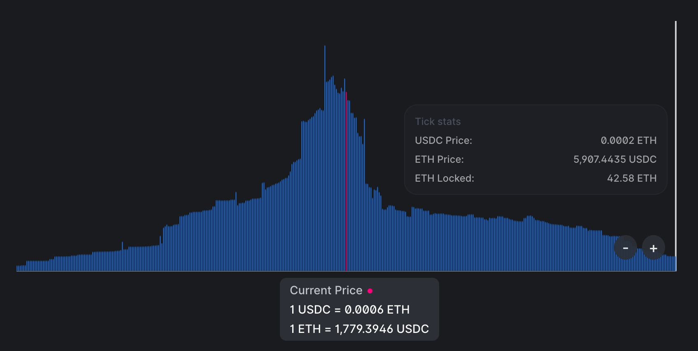
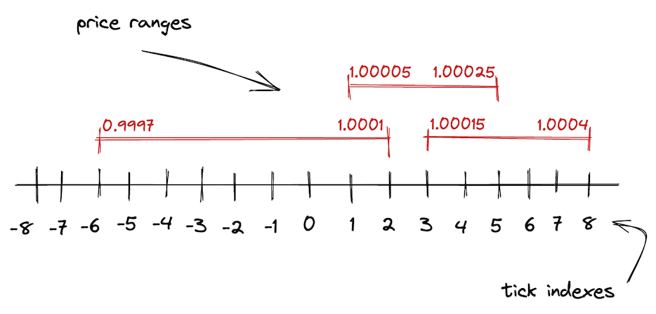
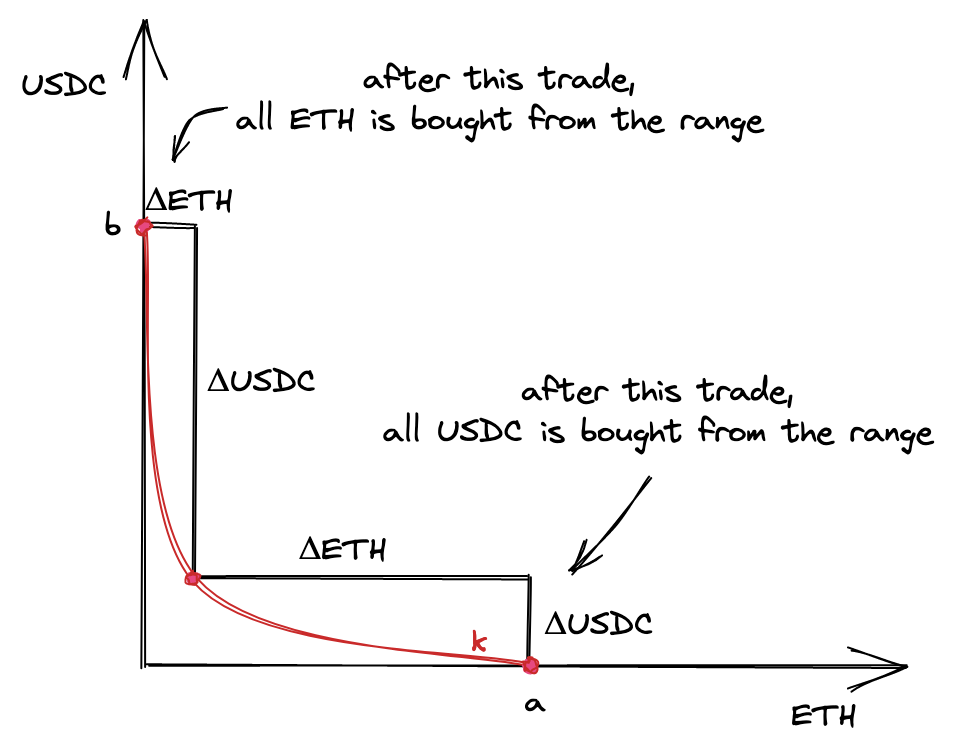
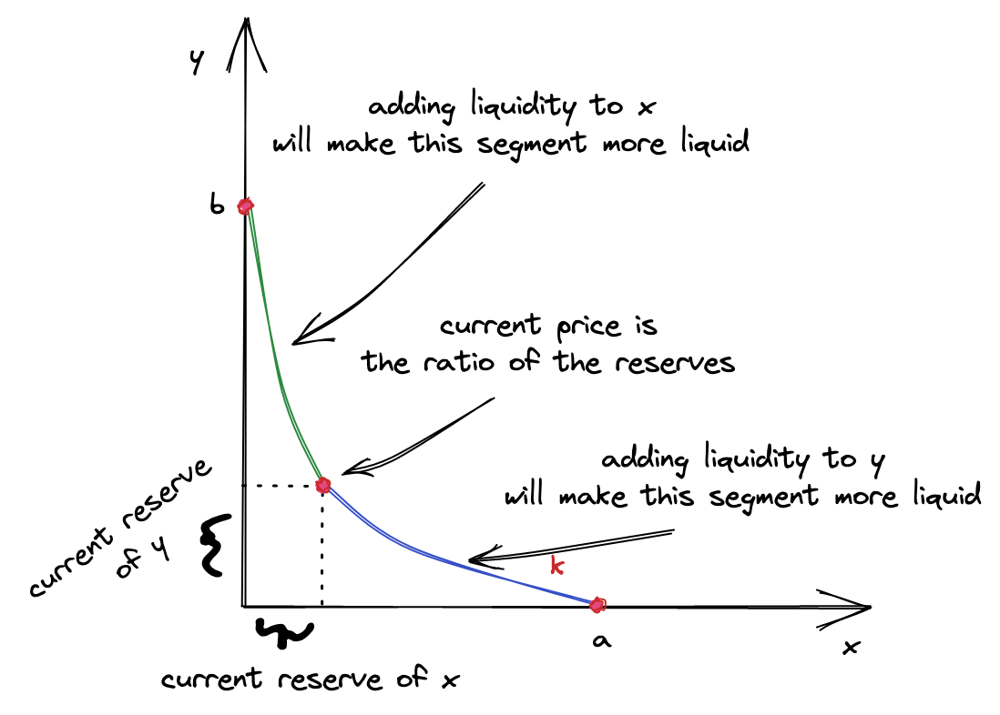
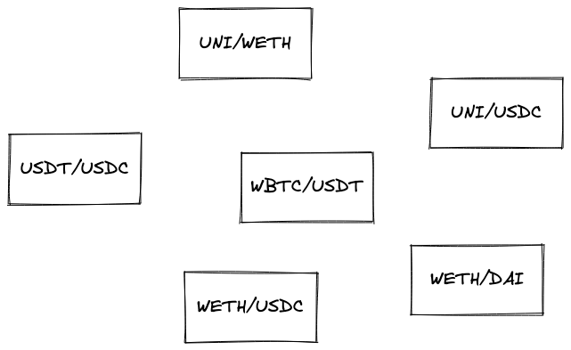
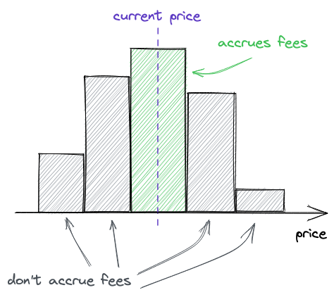
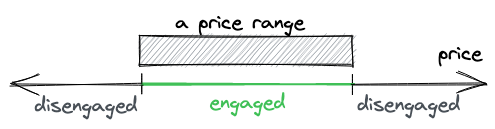
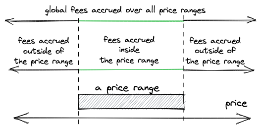
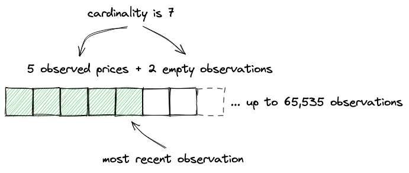

Uniswap V3 Development Book

Welcome to the world of decentralized finances and automated market makers! This book will be your guide in this mysterious and amusing world! Together, we’ll build one of the most interesting and important applications, which serves as a pillar of today’s decentralized finances–Uniswap V3!
This book will guide you through the development of a decentralized application, including:
- smart-contract development (in Solidity);
- contracts testing and deployment (using Forge and Anvil from Foundry);
- design and mathematics of a decentralized exchange;
- development of a front-end application for the exchange (React and MetaMask).
This book is not for complete beginners.
I expect you to be an experienced developer, who has ever programmed in any programming language. It’ll also be helpful if you know the syntax of Solidity, the main programming language of this book. If not, it’s not a big problem: we’ll learn a lot about Solidity and Ethereum Virtual Machine during our journey.
However, this book is for blockchain beginners.
If you only heard about blockchains and were interested but haven’t had a chance to dive deeper, this book is for you! Yes, for you! You’ll learn how to develop for blockchains (specifically, Ethereum), how blockchains work, how to program and deploy smart contracts, and how to run and test them on your computer.
Alright, let’s get started!
Useful Links
- This book is available at: https://uniswapv3book.com/
- This book is hosted on GitHub: https://github.com/Jeiwan/uniswapv3-book
- All source codes are hosted in a separate repo: https://github.com/Jeiwan/uniswapv3-code
- If you think you can help Uniswap, they have a grants program.
- If you’re interested in DeFi and blockchains, follow me on Twitter.
Questions?
Each milestone has its section in the GitHub Discussions. Don’t hesitate to ask questions about anything that’s not clear in the book!
Where to Start for a Complete Beginner?
This book will be easy for those who know something about constant-function market makers and Uniswap. If you’re a complete beginner in decentralized exchanges, here’s how I’d recommend starting:
- Read my Uniswap V1 series. It covers the very basics of Uniswap, and the code is much simpler. If you have some experience with Solidity, skip the code since it’s very basic and Uniswap V2 does it better.
- Read my Uniswap V2 series. I don’t go too deep into the math and underlying concepts here since they’re covered in the V1 series, but the code of V2 is worth getting familiar with–it’ll hopefully teach you a different way of thinking about smart contracts programming (it’s not how we usually write programs).
If math is an issue, consider going through Algebra 1 and Algebra 2 courses on Khan Academy. The math of Uniswap is not hard, but it requires the skill of basic algebraic manipulations.
Uniswap Grants Program

To write this book, I received a grant from Uniswap Foundation. Without the grant, I wouldn’t probably have had enough motivation and patience to dig Uniswap into its deepest depths and finish the book. The grant is also the main reason why the book is open-source and free for anyone. You can learn more about the Uniswap Grants Program (and maybe apply!).
Introduction to Markets
How Centralized Exchanges Work
In this book, we’ll build a decentralized exchange (DEX) that will run on Ethereum. There are multiple approaches to how an exchange can be designed. All centralized exchanges have an order book at their core. An order book is just a journal that stores all the sell and buy orders that traders want to make. Each order in this book contains a price the order must be executed at and the amount that must be bought or sold.

For trading to happen, there must exist liquidity, which is simply the availability of assets on a market. If you want to buy a wardrobe but no one is selling one, there’s no liquidity. If you want to sell a wardrobe but no one wants to buy it, there’s liquidity but no buyers. If there’s no liquidity, there’s nothing to buy or sell.
On centralized exchanges, the order book is where liquidity is accumulated. If someone places a sell order, they provide liquidity to the market. If someone places a buy order, they expect the market to have liquidity, otherwise, no trade is possible.
When there’s no liquidity, but markets are still interested in trades, market makers come into play. A market maker is a firm or an individual who provides liquidity to markets, that is someone who has a lot of money and who buys different assets to sell them on exchanges. For this job market makers are paid by exchanges. Market makers make money by providing liquidity to exchanges.
How Decentralized Exchanges Work
Don’t be surprised, decentralized exchanges also need liquidity. And they also need someone who provides it to traders of a wide variety of assets. However, this process cannot be handled in a centralized way. A decentralized solution must be found. There are multiple decentralized solutions and some of them are implemented differently. Our focus will be on how Uniswap solves this problem.
Automated Market Makers
The evolution of on-chain markets brought us to the idea of Automated Market Makers (AMM). As the name implies, this algorithm works exactly like market makers but in an automated way. Moreover, it’s decentralized and permissionless, that is:
- it’s not governed by a single entity;
- all assets are not stored in one place;
- anyone can use it from anywhere.
What Is an AMM?
An AMM is a set of smart contracts that define how liquidity is managed. Each trading pair (e.g. ETH/USDC) is a separate contract that stores both ETH and USDC and that’s programmed to mediate trades: exchanging ETH for USDC and vice versa.
The core idea is pooling: each contract is a pool that stores liquidity and lets different users (including other smart contracts) trade in a permissionless way. There are two roles, liquidity providers and traders, and these roles interact with each other through pools of liquidity, and the way they can interact with pools is programmed and immutable.

What makes this approach different from centralized exchanges is that the smart contracts are fully automated and not managed by anyone. There are no managers, admins, privileged users, etc. There are only liquidity providers and traders (they can be the same people), and all the algorithms are programmed, immutable, and public.
Let’s now look closer at how Uniswap implements an AMM.
Please note that I use pool and pair terms interchangeably throughout the book because a Uniswap pool is a pair of two tokens.
If you have any questions, feel free to ask them in the GitHub Discussion of this milestone!
Constant Function Market Makers
This chapter retells the whitepaper of Uniswap V2. Understanding this math is crucial to build a Uniswap-like DEX, but it’s totally fine if you don’t understand everything at this stage.
As I mentioned in the previous section, there are different approaches to building AMM. We’ll be focusing on and building one specific type of AMM–Constant Function Market Maker. Don’t be scared by the long name! At its core is a very simple mathematical formula:
That’s it, this is the AMM.
and are pool contract reserves–the amounts of tokens it currently holds. k is just their product, actual value doesn’t matter.
Why are there only two reserves, x and y?
Each Uniswap pool can hold only two tokens. We use x and y to refer to reserves of one pool, where x is the reserve of the first token and y is the reserve of the other token, and the order doesn’t matter.
The constant function formula says: after each trade, k must remain unchanged. When traders make trades, they put some amount of one token into a pool (the token they want to sell) and remove some amount of the other token from the pool (the token they want to buy). This changes the reserves of the pool, and the constant function formula says that the product of reserves must not change. As we will see many times in this book, this simple requirement is the core algorithm of how Uniswap works.
The Trade Function
Now that we know what pools are, let’s write the formula of how trading happens in a pool:
- There’s a pool with some amount of token 0 () and some amount of token 1 ()
- When we buy token 1 for token 0, we give some amount of token 0 to the pool ().
- The pool gives us some amount of token 1 in exchange ().
- The pool also takes a small fee () from the amount of token 0 we gave.
- The reserve of token 0 changes (), and the reserve of token 1 changes as well ().
- The product of updated reserves must still equal .
We’ll use token 0 and token 1 notation for the tokens because this is how they’re referenced in the code. At this point, it doesn’t matter which of them is 0 and which is 1.
We’re basically giving a pool some amount of token 0 and getting some amount of token 1. The job of the pool is to give us a correct amount of token 1 calculated at a fair price. This leads us to the following conclusion: pools decide what trade prices are.
Pricing
How do we calculate the prices of tokens in a pool?
Since Uniswap pools are separate smart contracts, tokens in a pool are priced in terms of each other. For example: in a ETH/USDC pool, ETH is priced in terms of USDC, and USDC is priced in terms of ETH. If 1 ETH costs 1000 USDC, then 1 USDC costs 0.001 ETH. The same is true for any other pool, whether it’s a stablecoin pair or not (e.g. ETH/BTC).
In the real world, everything is priced based on the law of supply and demand. This also holds true for AMMs. We’ll put the demand part aside for now and focus on supply.
The prices of tokens in a pool are determined by the supply of the tokens, that is by the amounts of reserves of the tokens that the pool is holding. Token prices are simply relations of reserves:
Where and are prices of tokens in terms of the other token.
Such prices are called spot prices and they only reflect current market prices. However, the actual price of a trade is calculated differently. And this is where we need to bring the demand part back.
Concluding from the law of supply and demand, high demand increases the price–and this is a property we need to have in a permissionless system. We want the price to be high when demand is high, and we can use pool reserves to measure the demand: the more tokens you want to remove from a pool (relative to the pool’s reserves), the higher the impact of demand is.
Let’s return to the trade formula and look at it closer:
As you can see, we can derive and from it, which means we can calculate the output amount of a trade based on the input amount and vice versa:
In fact, these formulas free us from calculating prices! We can always find the output amount using the formula (when we want to sell a known amount of tokens) and we can always find the input amount using the formula (when we want to buy a known amount of tokens). Notice that each of these formulas is a relation of reserves ( or ) and they also take the trade amount ( in the former and in the latter) into consideration. These are the pricing functions that respect both supply and demand. And we don’t even need to calculate the prices!
Here’s how you can derive the above formulas from the trade function: And:
The Curve
The above calculations might seem too abstract and dry. Let’s visualize the constant product function to better understand how it works.
When plotted, the constant product function is a quadratic hyperbola:

Where axes are the pool reserves. Every trade starts at the point on the curve that corresponds to the current ratio of reserves. To calculate the output amount, we need to find a new point on the curve, which has the coordinate of , i.e. current reserve of token 0 + the amount we’re selling. The change in is the amount of token 1 we’ll get.
Let’s look at a concrete example:

- The purple line is the curve, and the axes are the reserves of a pool (notice that they’re equal at the start price).
- The start price is 1.
- We’re selling 200 of token 0. If we use only the start price, we expect to get 200 of token 1.
- However, the execution price is 0.666, so we get only 133.333 of token 1!
This example is from the Desmos chart made by Dan Robinson, one of the creators of Uniswap. To build a better intuition of how it works, try making up different scenarios and plotting them on the graph. Try different reserves, and see how the output amount changes when is small relative to .
As the legend goes, Uniswap was invented in Desmos.
I bet you’re wondering why using such a curve. It might seem like it punishes you for trading big amounts. This is true, and this is a desirable property! The law of supply and demand tells us that when demand is high (and supply is constant) the price is also high. And when demand is low, the price is also lower. This is how markets work. And, magically, the constant product function implements this mechanism! Demand is defined by the amount you want to buy, and supply is the pool reserves. When you want to buy a big amount relative to pool reserves the price is higher than when you want to buy a smaller amount. Such a simple formula guarantees such a powerful mechanism!
Even though Uniswap doesn’t calculate trade prices, we can still see them on the curve. Surprisingly, there are multiple prices when making a trade:
- Before a trade, there’s a spot price. It’s equal to the relation of reserves, or depending on the direction of the trade. This price is also the slope of the tangent line at the starting point.
- After a trade, there’s a new spot price, at a different point on the curve. And it’s the slope of the tangent line at this new point.
- The actual price of the trade is the slope of the line connecting the two points!
And that’s the whole math of Uniswap! Phew!
Well, this is the math of Uniswap V2, and we’re studying Uniswap V3. So in the next part, we’ll see how the mathematics of Uniswap V3 is different.
Introduction to Uniswap V3
This chapter retells the whitepaper of Uniswap V3. Again, it’s totally ok if you don’t understand all the concepts. They will be clearer when converted to code.
To better understand the innovations Uniswap V3 brings, let’s first look at the imperfections of Uniswap V2.
Uniswap V2 is a general exchange that implements one AMM algorithm. However, not all trading pairs are equal. Pairs can be grouped by price volatility:
- Tokens with medium and high price volatility. This group includes most tokens since most tokens don’t have their prices pegged to something and are subject to market fluctuations.
- Tokens with low volatility. This group includes pegged tokens, mainly stablecoins: USDC/USDT, USDC/DAI, USDT/DAI, etc. Also: ETH/stETH, ETH/rETH (variants of wrapped ETH).
These groups require different, let’s call them, pool configurations. The main difference is that pegged tokens require high liquidity to reduce the demand effect (we learned about it in the previous chapter) on big trades. The prices of USDC and USDT must stay close to 1, no matter how big the number of tokens we want to buy and sell. Since Uniswap V2’s general AMM algorithm is not very well suited for stablecoin trading, alternative AMMs (mainly Curve) were more popular for stablecoin trading.
What caused this problem is that liquidity in Uniswap V2 pools is distributed infinitely–pool liquidity allows trades at any price, from 0 to infinity:

This might not seem like a bad thing, but this makes capital inefficient. Historical prices of an asset stay within some defined range, whether it’s narrow or wide. For example, the historical price range of ETH is from 4,800 (according to CoinMarketCap). Today (June 2022, 1 ETH costs $1,800), no one would buy 1 ether at $5000, so it makes no sense to provide liquidity at this price. Thus, it doesn’t make sense to provide liquidity in a price range that’s far away from the current price or that will never be reached.
However, we all believe in ETH reaching $10,000 one day.
Concentrated Liquidity
Uniswap V3 introduces concentrated liquidity: liquidity providers can now choose the price range they want to provide liquidity into. This improves capital efficiency by allowing to put more liquidity into a narrow price range, which makes Uniswap more diverse: it can now have pools configured for pairs with different volatility. This is how V3 improves V2.
In a nutshell, a Uniswap V3 pair is many small Uniswap V2 pairs. The main difference between V2 and V3 is that, in V3, there are many price ranges in one pair. And each of these shorter price ranges has finite reserves. The entire price range from 0 to infinite is split into shorter price ranges, with each of them having its own amount of liquidity. But, what’s crucial is that within that shorter price range, it works exactly as Uniswap V2. This is why I say that a V3 pair is many small V2 pairs.
Now, let’s try to visualize it. What we’re saying is that we don’t want the curve to be infinite. We cut it at the points and and say that these are the boundaries of the curve. Moreover, we shift the curve so the boundaries lay on the axes. This is what we get:

It looks lonely, doesn’t it? This is why there are many price ranges in Uniswap V3–so they don’t feel lonely 🙂
As we saw in the previous chapter, buying or selling tokens moves the price along the curve. A price range limits the movement of the price. When the price moves to either of the points, the pool becomes depleted: one of the token reserves will be 0, and buying this token won’t be possible.
On the chart above, let’s assume that the start price is at the middle of the curve. To get to the point , we need to buy all available and maximize in the range; to get to the point , we need to buy all available and maximize in the range. At these points, there’s only one token in the range!
Fun fact: this allows using Uniswap V3 price ranges as limit orders!
What happens when the current price range gets depleted during a trade? The price slips into the next price range. If the next price range doesn’t exist, the trade ends up partially fulfilled-we’ll see how this works later in the book.
This is how liquidity is spread in the USDC/ETH pool in production:

You can see that there’s a lot of liquidity around the current price but the further away from it the less liquidity there is–this is because liquidity providers strive to have higher efficiency of their capital. Also, the whole range is not infinite, its upper boundary is shown in the image.
The Mathematics of Uniswap V3
Mathematically, Uniswap V3 is based on V2: it uses the same formulas, but they’re… let’s call it augmented.
To handle transitioning between price ranges, simplify liquidity management, and avoid rounding errors, Uniswap V3 uses these new concepts:
is the amount of liquidity. Liquidity in a pool is the combination of token reserves (that is, two numbers). We know that their product is , and we can use this to derive the measure of liquidity, which is –a number that, when multiplied by itself, equals . is the geometric mean of and .
is the price of token 0 in terms of 1. Since token prices in a pool are reciprocals of each other, we can use only one of them in calculations (and by convention Uniswap V3 uses ). The price of token 1 in terms of token 0 is simply . Similarly, .
Why using instead of ? There are two reasons:
-
Square root calculation is not precise and causes rounding errors. Thus, it’s easier to store the square root without calculating it in the contracts (we will not store and in the contracts).
-
has an interesting connection to : is also the relation between the change in output amount and the change in .
Proof:
Pricing
Again, we don’t need to calculate actual prices–we can calculate the output amount right away. Also, since we’re not going to track and store and , our calculation will be based only on and .
From the above formula, we can find :
See the third step in the proof above.
As we discussed above, prices in a pool are reciprocals of each other. Thus, is:
and allow us to not store and update pool reserves. Also, we don’t need to calculate each time because we can always find and its reciprocal.
Ticks
As we learned in this chapter, the infinite price range of V2 is split into shorter price ranges in V3. Each of these shorter price ranges is limited by boundaries–upper and lower points. To track the coordinates of these boundaries, Uniswap V3 uses ticks.

In V3, the entire price range is demarcated by evenly distributed discrete ticks. Each tick has an index and corresponds to a certain price:
Where is the price at tick . Taking powers of 1.0001 has a desirable property: the difference between two adjacent ticks is 0.01% or 1 basis point.
Basis point (1/100th of 1%, or 0.01%, or 0.0001) is a unit of measure of percentages in finance. You could’ve heard about the basis point when central banks announced changes in interest rates.
As we discussed above, Uniswap V3 stores , not . Thus, the formula is in fact:
So, we get values like: , , .
Ticks are integers that can be positive and negative and, of course, they’re not infinite. Uniswap V3 stores as a fixed point Q64.96 number, which is a rational number that uses 64 bits for the integer part and 96 bits for the fractional part. Thus, prices (equal to the square of ) are within the range: . And ticks are within the range:
For deeper dive into the math of Uniswap V3, I cannot but recommend this technical note by Atis Elsts.
Development Environment
We’re going to build two applications:
- An on-chain one: a set of smart contracts deployed on Ethereum.
- An off-chain one: a front-end application that will interact with the smart contracts.
While the front-end application development is part of this book, it won’t be our main focus. We will build it solely to demonstrate how smart contracts are integrated with front-end applications. Thus, the front-end application is optional, but I’ll still provide the code.
Quick Introduction to Ethereum
Ethereum is a blockchain that allows anyone to run applications on it. It might look like a cloud provider, but there are multiple differences:
- You don’t pay for hosting your application. But you pay for deployment.
- Your application is immutable. That is: you won’t be able to modify it after it’s deployed.
- Users will pay to use your application.
To better understand these moments, let’s see what Ethereum is made of.
At the core of Ethereum (and any other blockchain) is a database. The most valuable data in Ethereum’s database is the state of accounts. An account is an Ethereum address with associated data:
- Balance: account’s ether balance.
- Code: bytecode of the smart contract deployed at this address.
- Storage: space used by smart contracts to store data.
- Nonce: a serial integer that’s used to protect against replay attacks.
Ethereum’s main job is building and maintaining this data in a secure way that doesn’t allow unauthorized access.
Ethereum is also a network, a network of computers that build and maintain the state independently of each other. The main goal of the network is to decentralize access to the database: there must be no single authority that’s allowed to modify anything in the database unilaterally. This is achieved through consensus, which is a set of rules all the nodes in the network follow. If one party decides to abuse a rule, it’ll be excluded from the network.
Fun fact: blockchain can use MySQL! Nothing prevents this besides performance. In its turn, Ethereum uses LevelDB, a fast key-value database.
Every Ethereum node also runs EVM, Ethereum Virtual Machine. A virtual machine is a program that can run other programs, and EVM is a program that executes smart contracts. Users interact with contracts through transactions: besides simply sending ether, transactions can contain smart contract call data. It includes:
- An encoded contract function name.
- Function parameters.
Transactions are packed in blocks and blocks are then mined by miners. Each participant in the network can validate any transaction and any block.
In a sense, smart contracts are similar to JSON APIs but instead of endpoints you call smart contract functions and you provide function arguments. Similar to API backends, smart contracts execute programmed logic, which can optionally modify smart contract storage. Unlike JSON API, you need to send a transaction to mutate the blockchain state, and you’ll need to pay for each transaction you’re sending.
Finally, Ethereum nodes expose a JSON-RPC API. Through this API we can interact with a node to: get account balance, estimate gas costs, get blocks and transactions, send transactions, and execute contract calls without sending transactions (this is used to read data from smart contracts). Here you can find the full list of available endpoints.
Transactions are also sent through the JSON-RPC API, see eth_sendTransaction.
Local Development Environment
Multiple smart contract development environments are used today:
Truffle is the oldest of the three and is the least popular of them. Hardhat is its improved descendant and is the most widely used tool. Foundry is the new kid on the block, which brings a different view on testing.
While HardHat is still a popular solution, more and more projects are switching to Foundry. And there are multiple reasons for that:
- With Foundry, we can write tests in Solidity. This is much more convenient because we don’t need to jump between JavaScript (Truffle and HardHat use JS for tests and automation) and Solidity during development. Writing tests in Solidity is much more convenient because you have all the native features (e.g. you don’t need a special type for big numbers and you don’t need to convert between strings and BigNumber).
- Foundry doesn’t run a node during testing. This makes testing and iterating on features much faster! Truffle and HardHat start a node whenever you run tests; Foundry executes tests on an internal EVM.
That being said, we’ll use Foundry as our main smart contract development and testing tool.
Foundry
Foundry is a set of tools for Ethereum applications development. Specifically, we’re going to use:
- Forge, a testing framework for Solidity.
- Anvil, a local Ethereum node designed for development with Forge. We’ll use it to deploy our contracts to a local node and connect to it through the front-end app.
- Cast, a CLI tool with a ton of helpful features.
Forge makes smart contracts developer’s life so much easier. With Forge, we don’t need to run a local node to test contracts. Instead, Forge runs tests on its internal EVM, which is much faster and doesn’t require sending transactions and mining blocks.
Forge lets us write tests in Solidity! Forge also makes it easier to simulate blockchain state: we can easily fake our ether or token balance, execute contracts from other addresses, deploy any contracts at any address, etc.
However, we’ll still need a local node to deploy our contract to. For that, we’ll use Anvil. Front-end applications use JavaScript Web3 libraries to interact with Ethereum nodes (to send transactions, query state, estimate transaction gas cost, etc.)–this is why we’ll need to run a local node.
Ethers.js
Ethers.js is a set of Ethereum utilities written in JavaScript. This is one of the two (the other one is web3.js) most popular JavaScript libraries used in decentralized applications development. These libraries allow us to interact with an Ethereum node via the JSON-API, and they come with multiple utility functions that make the developer’s life easier.
MetaMask
MetaMask is an Ethereum wallet in your browser. It’s a browser extension that creates and securely stores private keys. MetaMask is the main Ethereum wallet application used by millions of users. We’ll use it to sign transactions that we’ll send to our local node.
React
React is a well-known JavaScript library for building front-end applications. You don’t need to know React, I’ll provide a template application.
Setting up the Project
To set up the project, create a new folder and run forge init in it:
$ mkdir uniswapv3clone
$ cd uniswapv3clone
$ forge init
If you’re using Visual Studio Code, add
--vscodeflag toforge init:forge init --vscode. Forge will initialize the project with VSCode-specific settings.
Forge will create sample contracts in the src, test, and script folders–these can be removed.
To set up the front-end application:
$ npx create-react-app ui
It’s located in a subfolder so there’s no conflict between folder names.
What We Will Build
The goal of the book is to build a clone of Uniswap V3. However, we won’t build an exact copy. The main reason is that Uniswap is a big project with many nuances and auxiliary mechanics–breaking down all of them would bloat the book and make it harder for readers to finish it. Instead, we’ll build the core of Uniswap, its hardest and most important mechanisms. This includes liquidity management, swapping, fees, a periphery contract, a quoting contract, and an NFT contract. After that, I’m sure, you’ll be able to read the source code of Uniswap V3 and understand all the mechanics that were left outside of the scope of this book.
Smart Contracts
After finishing the book, you’ll have these contracts implemented:
UniswapV3Pool–the core pool contract that implements liquidity management and swapping. This contract is very close to the original one, however, some implementation details are different and something is missed for simplicity. For example, our implementation will only handle “exact input” swaps, that is swaps with known input amounts. The original implementation also supports swaps with known output amounts (i.e. when you want to buy a certain amount of tokens).UniswapV3Factory–the registry contract that deploys new pools and keeps a record of all deployed pools. This one is mostly identical to the original one besides the ability to change owner and fees.UniswapV3Manager–a periphery contract that makes it easier to interact with the pool contract. This is a very simplified implementation of SwapRouter. Again, as you can see, I don’t distinguish “exact input” and “exact output” swaps and implement only the former ones.UniswapV3Quoteris a cool contract that allows calculating swap prices on-chain. This is a minimal copy of both Quoter and QuoterV2. Again, only “exact input” swaps are supported.UniswapV3NFTManagerallows turning liquidity positions into NFTs. This is a simplified implementation of NonfungiblePositionManager.
Front-end Application
For this book, I also built a simplified clone of the Uniswap UI. This is a very dumb clone, and my React and front-end skills are very poor, but it demonstrates how a front-end application can interact with smart contracts using Ethers.js and MetaMask.
Introduction
In this milestone, we’ll build a pool contract that can receive liquidity from users and make swaps within a price range. To keep it as simple as possible, we’ll provide liquidity only in one price range and we’ll allow to make swaps only in one direction. Also, we’ll calculate all the required math manually to get better intuition before starting to use mathematical libs in Solidity.
Let’s model the situation we’ll build:
- There will be an ETH/USDC pool contract. ETH will be the \(x\) reserve, and USDC will be the \(y\) reserve.
- We’ll set the current price to 5000 USDC per 1 ETH.
- The range we’ll provide liquidity into is 4545-5500 USDC per 1 ETH.
- We’ll buy some ETH from the pool. At this point, since we have only one price range, we want the price of the trade to stay within the price range.
Visually, this model looks like this:

Before getting to the code, let’s figure out the math and calculate all the parameters of the model. To keep things simple, I’ll do math calculations in Python before implementing them in Solidity. This will allow us to focus on the math without diving into the nuances of math in Solidity. This also means that, in smart contracts, we’ll hardcode all the amounts. This will allow us to start with a simple minimal viable product.
For your convenience, I put all the Python calculations in unimath.py.
You’ll find the complete code of this milestone in this Github branch.
If you have any questions, feel free to ask them in the GitHub Discussion of this milestone!
Calculating liquidity
Trading is not possible without liquidity, and to make our first swap we need to put some liquidity into the pool contract. Here’s what we need to know to add liquidity to the pool contract:
- A price range. As a liquidity provider, we want to provide liquidity at a specific price range, and it’ll only be used in this range.
- Amount of liquidity, which is the amounts of two tokens. We’ll need to transfer these amounts to the pool contract.
Here, we’re going to calculate these manually, but, in a later chapter, a contract will do this for us. Let’s begin with a price range.
Price Range Calculation
Recall that, in Uniswap V3, the entire price range is demarcated into ticks: each tick corresponds to a price and has an index. In our first pool implementation, we’re going to buy ETH for USDC at the price of $5000 per 1 ETH. Buying ETH will remove some amount of it from the pool and will push the price slightly above $5000. We want to provide liquidity at a range that includes this price. And we want to be sure that the final price will stay within this range (we’ll do multi-range swaps in a later milestone).
We’ll need to find three ticks:
- The current tick will correspond to the current price (5000 USDC for 1 ETH).
- The lower and upper bounds of the price range we’re providing liquidity into. Let the lower price be $4545 and the upper price be $5500.
From the theoretical introduction, we know that:
Since we’ve agreed to use ETH as the reserve and USDC as the reserve, the prices at each of the ticks are:
Where is the current price, is the lower bound of the range, and is the upper bound of the range.
Now, we can find corresponding ticks. We know that prices and ticks are connected via this formula:
Thus, we can find tick via:
The square roots in this formula cancel out, but since we’re working with we need to preserve them.
Let’s find the ticks:
- Current tick:
- Lower tick:
- Upper tick:
To calculate these, I used Python:
import math def price_to_tick(p): return math.floor(math.log(p, 1.0001)) price_to_tick(5000) > 85176
That’s it for price range calculation!
Last thing to note here is that Uniswap uses Q64.96 number to store . This is a fixed-point number that has 64 bits for the integer part and 96 bits for the fractional part. In our above calculations, prices are floating point numbers: 70.71, 67.42, and 74.16. We need to convert them to Q64.96. Luckily, this is simple: we need to multiply the numbers by (Q-number is a binary fixed-point number, so we need to multiply our decimals numbers by the base of Q64.96, which is ). We’ll get:
In Python:
q96 = 2**96 def price_to_sqrtp(p): return int(math.sqrt(p) * q96) price_to_sqrtp(5000) > 5602277097478614198912276234240Notice that we’re multiplying before converting to an integer. Otherwise, we’ll lose precision.
Token Amounts Calculation
The next step is to decide how many tokens we want to deposit into the pool. The answer is as many as we want. The amounts are not strictly defined, we can deposit as much as it is enough to buy a small amount of ETH without making the current price leave the price range we put liquidity into. During development and testing we’ll be able to mint any amount of tokens, so getting the amounts we want is not a problem.
For our first swap, let’s deposit 1 ETH and 5000 USDC.
Recall that the proportion of current pool reserves tells the current spot price. So if we want to put more tokens into the pool and keep the same price, the amounts must be proportional, e.g.: 2 ETH and 10,000 USDC; 10 ETH and 50,000 USDC, etc.
Liquidity Amount Calculation
Next, we need to calculate based on the amounts we’ll deposit. This is a tricky part, so hold tight!
From the theoretical introduction, you remember that:
However, this formula is for the infinite curve 🙂 But we want to put liquidity into a limited price range, which is just a segment of that infinite curve. We need to calculate specifically for the price range we’re going to deposit liquidity into. We need some more advanced calculations.
To calculate for a price range, let’s look at one interesting fact we have discussed earlier: price ranges can be depleted. It’s possible to buy the entire amount of one token from a price range and leave the pool with only the other token.

At the points and , there’s only one token in the range: ETH at the point and USDC at the point .
That being said, we want to find an that will allow the price to move to either of the points. We want enough liquidity for the price to reach either of the boundaries of a price range. Thus, we want to be calculated based on the maximum amounts of and .
Now, let’s see what the prices are at the edges. When ETH is bought from a pool, the price is growing; when USDC is bought, the price is falling. Recall that the price is . So, at point , the price is the lowest of the range; at point , the price is the highest.
In fact, prices are not defined at these points because there’s only one reserve in the pool, but what we need to understand here is that the price around the point is higher than the start price, and the price at the point is lower than the start price.
Now, break the curve from the image above into two segments: one to the left of the start point and one to the right of the start point. We’re going to calculate two ’s, one for each of the segments. Why? Because each of the two tokens of a pool contributes to either of the segments: the left segment is made entirely of token , and the right segment is made entirely of token . This comes from the fact that, during swapping, the price moves in either direction: it’s either growing or falling. For the price to move, only either of the tokens is needed:
- when the price is growing, only token is needed for the swap (we’re buying token , so we want to take only token from the pool);
- when the price is falling, only token is needed for the swap.
Thus, the liquidity in the segment of the curve to the left of the current price consists only of token and is calculated only from the amount of token provided. Similarly, the liquidity in the segment of the curve to the right of the current price consists only of token and is calculated only from the amount of token provided.

This is why, when providing liquidity, we calculate two ’s and pick one of them. Which one? The smaller one. Why? Because the bigger one already includes the smaller one! We want the new liquidity to be distributed evenly along the curve, thus we want to add the same to the left and to the right of the current price. If we pick the bigger one, the user would need to provide more liquidity to compensate for the shortage in the smaller one. This is doable, of course, but this would make the smart contract more complex.
What happens with the remainder of the bigger ? Well, nothing. After picking the smaller we can simply convert it to a smaller amount of the token that resulted in the bigger –this will adjust it down. After that, we’ll have token amounts that will result in the same .
The final detail I need to focus your attention on here is: new liquidity must not change the current price. That is, it must be proportional to the current proportion of the reserves. And this is why the two ’s can be different–when the proportion is not preserved. And we pick the small to reestablish the proportion.
I hope this will make more sense after we implement this in code! Now, let’s look at the formulas.
Let’s recall how and are calculated:
We can expand these formulas by replacing the delta P’s with actual prices (we know them from the above):
is the price at the point , is the price at the point , and is the current price (see the above chart). Notice that, since the price is calculated as (i.e. it’s the price of in terms of ), the price at point is higher than the current price and the price at . The price at is the lowest of the three.
Let’s find the from the first formula:
And from the second formula:
So, these are our two ’s, one for each of the segments:
Now, let’s plug the prices we calculated earlier into them:
After converting to Q64.96, we get:
And for the other :
Of these two, we’ll pick the smaller one.
In Python:
sqrtp_low = price_to_sqrtp(4545) sqrtp_cur = price_to_sqrtp(5000) sqrtp_upp = price_to_sqrtp(5500) def liquidity0(amount, pa, pb): if pa > pb: pa, pb = pb, pa return (amount * (pa * pb) / q96) / (pb - pa) def liquidity1(amount, pa, pb): if pa > pb: pa, pb = pb, pa return amount * q96 / (pb - pa) eth = 10**18 amount_eth = 1 * eth amount_usdc = 5000 * eth liq0 = liquidity0(amount_eth, sqrtp_cur, sqrtp_upp) liq1 = liquidity1(amount_usdc, sqrtp_cur, sqrtp_low) liq = int(min(liq0, liq1)) > 1517882343751509868544
Token Amounts Calculation, Again
Since we choose the amounts we’re going to deposit, the amounts can be wrong. We cannot deposit any amounts at any price range; the liquidity amount needs to be distributed evenly along the curve of the price range we’re depositing into. Thus, even though users choose amounts, the contract needs to re-calculate them, and actual amounts will be slightly different (at least because of rounding).
Luckily, we already know the formulas:
In Python:
def calc_amount0(liq, pa, pb): if pa > pb: pa, pb = pb, pa return int(liq * q96 * (pb - pa) / pa / pb) def calc_amount1(liq, pa, pb): if pa > pb: pa, pb = pb, pa return int(liq * (pb - pa) / q96) amount0 = calc_amount0(liq, sqrtp_upp, sqrtp_cur) amount1 = calc_amount1(liq, sqrtp_low, sqrtp_cur) (amount0, amount1) > (998976618347425408, 5000000000000000000000)As you can see, the numbers are close to the amounts we want to provide, but ETH is slightly smaller.
Hint: use
cast --from-wei AMOUNTto convert from wei to ether, e.g.:
cast --from-wei 998976618347425280will give you0.998976618347425280.
Providing Liquidity
Enough of theory, let’s start coding!
Create a new folder (mine is called uniswapv3-code), and run forge init --vscode in it–this will initialize a Forge project. The --vscode flag tells Forge to configure the Solidity extension for Forge projects.
Next, remove the default contract and its test:
script/Contract.s.solsrc/Contract.soltest/Contract.t.sol
And that’s it! Let’s create our first contract!
Pool Contract
As you’ve learned from the introduction, Uniswap deploys multiple Pool contracts, each of which is an exchange market of a pair of tokens. Uniswap groups all its contracts into two categories:
- core contracts,
- and periphery contracts.
Core contracts are, as the name implies, contracts that implement core logic. These are minimal, user-unfriendly, low-level contracts. Their purpose is to do one thing and do it as reliably and securely as possible. In Uniswap V3, there are 2 such contracts:
- Pool contract, which implements the core logic of a decentralized exchange.
- Factory contract, which serves as a registry of Pool contracts and a contract that makes deployment of pools easier.
We’ll begin with the pool contract, which implements 99% of the core functionality of Uniswap.
Create src/UniswapV3Pool.sol:
pragma solidity ^0.8.14;
contract UniswapV3Pool {}
Let’s think about what data the contract will store:
- Since every pool contract is an exchange market of two tokens, we need to track the two token addresses. These addresses will be static, set once and forever during pool deployment (thus, they will be immutable).
- Each pool contract is a set of liquidity positions. We’ll store them in a mapping, where keys are unique position identifiers and values are structs holding information about positions.
- Each pool contract will also need to maintain a ticks registry–this will be a mapping with keys being tick indexes and values being structs storing information about ticks.
- Since the tick range is limited, we need to store the limits in the contract, as constants.
- Recall that pool contracts store the amount of liquidity, . So we’ll need to have a variable for it.
- Finally, we need to track the current price and the related tick. We’ll store them in one storage slot to optimize gas consumption: these variables will be often read and written together, so it makes sense to benefit from the state variables packing feature of Solidity.
All in all, this is what we begin with:
// src/lib/Tick.sol
library Tick {
struct Info {
bool initialized;
uint128 liquidity;
}
...
}
// src/lib/Position.sol
library Position {
struct Info {
uint128 liquidity;
}
...
}
// src/UniswapV3Pool.sol
contract UniswapV3Pool {
using Tick for mapping(int24 => Tick.Info);
using Position for mapping(bytes32 => Position.Info);
using Position for Position.Info;
int24 internal constant MIN_TICK = -887272;
int24 internal constant MAX_TICK = -MIN_TICK;
// Pool tokens, immutable
address public immutable token0;
address public immutable token1;
// Packing variables that are read together
struct Slot0 {
// Current sqrt(P)
uint160 sqrtPriceX96;
// Current tick
int24 tick;
}
Slot0 public slot0;
// Amount of liquidity, L.
uint128 public liquidity;
// Ticks info
mapping(int24 => Tick.Info) public ticks;
// Positions info
mapping(bytes32 => Position.Info) public positions;
...
Uniswap V3 uses many helper contracts and Tick and Position are two of them. using A for B is a feature of Solidity that lets you extend type B with functions from library contract A. This simplifies managing complex data structures.
For brevity, I’ll omit a detailed explanation of Solidity syntax and features. Solidity has great documentation, don’t hesitate to refer to it if something is not clear!
We’ll then initialize some of the variables in the constructor:
constructor(
address token0_,
address token1_,
uint160 sqrtPriceX96,
int24 tick
) {
token0 = token0_;
token1 = token1_;
slot0 = Slot0({sqrtPriceX96: sqrtPriceX96, tick: tick});
}
}
Here, we’re setting the token address immutables and setting the current price and tick–we don’t need to provide liquidity for the latter.
This is our starting point, and our goal in this chapter is to make our first swap using pre-calculated and hard-coded values.
Minting
The process of providing liquidity in Uniswap V2 is called minting. The reason is that the V2 pool contract mints tokens (LP-tokens) in exchange for liquidity. V3 doesn’t do that, but it still uses the same name for the function. Let’s use it as well:
function mint(
address owner,
int24 lowerTick,
int24 upperTick,
uint128 amount
) external returns (uint256 amount0, uint256 amount1) {
...
Our mint function will take:
- Owner’s address, to track the owner of the liquidity.
- Upper and lower ticks, to set the bounds of a price range.
- The amount of liquidity we want to provide.
Notice that user specifies , not actual token amounts. This is not very convenient of course, but recall that the Pool contract is a core contract–it’s not intended to be user-friendly because it should implement only the core logic. In a later chapter, we’ll make a helper contract that will convert token amounts to before calling
Pool.mint.
Let’s outline a quick plan of how minting will work:
- a user specifies a price range and an amount of liquidity;
- the contract updates the
ticksandpositionsmappings; - the contract calculates token amounts the user must send (we’ll pre-calculate and hard code them);
- the contract takes tokens from the user and verifies that the correct amounts were set.
Let’s begin with checking the ticks:
if (
lowerTick >= upperTick ||
lowerTick < MIN_TICK ||
upperTick > MAX_TICK
) revert InvalidTickRange();
And ensuring that some amount of liquidity is provided:
if (amount == 0) revert ZeroLiquidity();
Then, add a tick and a position:
ticks.update(lowerTick, amount);
ticks.update(upperTick, amount);
Position.Info storage position = positions.get(
owner,
lowerTick,
upperTick
);
position.update(amount);
The ticks.update function is:
// src/lib/Tick.sol
function update(
mapping(int24 => Tick.Info) storage self,
int24 tick,
uint128 liquidityDelta
) internal {
Tick.Info storage tickInfo = self[tick];
uint128 liquidityBefore = tickInfo.liquidity;
uint128 liquidityAfter = liquidityBefore + liquidityDelta;
if (liquidityBefore == 0) {
tickInfo.initialized = true;
}
tickInfo.liquidity = liquidityAfter;
}
It initializes a tick if it has 0 liquidity and adds new liquidity to it. As you can see, we’re calling this function on both lower and upper ticks, thus liquidity is added to both of them.
The position.update function is:
// src/libs/Position.sol
function update(Info storage self, uint128 liquidityDelta) internal {
uint128 liquidityBefore = self.liquidity;
uint128 liquidityAfter = liquidityBefore + liquidityDelta;
self.liquidity = liquidityAfter;
}
Similar to the tick update function, it adds liquidity to a specific position. To get a position we call:
// src/libs/Position.sol
...
function get(
mapping(bytes32 => Info) storage self,
address owner,
int24 lowerTick,
int24 upperTick
) internal view returns (Position.Info storage position) {
position = self[
keccak256(abi.encodePacked(owner, lowerTick, upperTick))
];
}
...
Each position is uniquely identified by three keys: owner address, lower tick index, and upper tick index. We hash the three to make storing data cheaper: when hashed, every key will take 32 bytes, instead of 96 bytes when owner, lowerTick, and upperTick are separate keys.
If we use three keys, we need three mappings. Each key would be stored separately and would take 32 bytes since Solidity stores values in 32-byte slots (when packing is not applied).
Next, continuing with minting, we need to calculate the amounts that the user must deposit. Luckily, we have already figured out the formulas and calculated the exact amounts in the previous part. So, we’re going to hard-code them:
amount0 = 0.998976618347425280 ether;
amount1 = 5000 ether;
We’ll replace these with actual calculations in a later chapter.
We will also update the liquidity of the pool, based on the amount being added.
liquidity += uint128(amount);
Now, we’re ready to take tokens from the user. This is done via a callback:
function mint(...) ... {
...
uint256 balance0Before;
uint256 balance1Before;
if (amount0 > 0) balance0Before = balance0();
if (amount1 > 0) balance1Before = balance1();
IUniswapV3MintCallback(msg.sender).uniswapV3MintCallback(
amount0,
amount1
);
if (amount0 > 0 && balance0Before + amount0 > balance0())
revert InsufficientInputAmount();
if (amount1 > 0 && balance1Before + amount1 > balance1())
revert InsufficientInputAmount();
...
}
function balance0() internal returns (uint256 balance) {
balance = IERC20(token0).balanceOf(address(this));
}
function balance1() internal returns (uint256 balance) {
balance = IERC20(token1).balanceOf(address(this));
}
First, we record current token balances. Then we call the uniswapV3MintCallback method on the caller–this is the callback. It’s expected that the caller (whoever calls mint) is a contract because non-contract addresses cannot implement functions in Ethereum. Using a callback here, while not being user-friendly at all, lets the contract calculate token amounts using its current state–this is critical because we cannot trust users.
The caller is expected to implement uniswapV3MintCallback and transfer tokens to the Pool contract in this function. After calling the callback function, we continue with checking whether the Pool contract balances have changed or not: we require them to increase by at least amount0 and amount1 respectively–this would mean the caller has transferred tokens to the pool.
Finally, we’re firing a Mint event:
emit Mint(msg.sender, owner, lowerTick, upperTick, amount, amount0, amount1);
Events is how contract data is indexed in Ethereum for later search. It’s a good practice to fire an event whenever the contract’s state is changed to let blockchain explorer know when this happened. Events also carry useful information. In our case, it’s the caller’s address, the liquidity position owner’s address, upper and lower ticks, new liquidity, and token amounts. This information will be stored as a log, and anyone else will be able to collect all contract events and reproduce the activity of the contract without traversing and analyzing all blocks and transactions.
And we’re done! Phew! Now, let’s test minting.
Testing
At this point, we don’t know if everything works correctly. Before deploying our contract anywhere we’re going to write a bunch of tests to ensure the contract works correctly. Luckily for us, Forge is a great testing framework and it’ll make testing a breeze.
Create a new test file:
// test/UniswapV3Pool.t.sol
// SPDX-License-Identifier: UNLICENSED
pragma solidity ^0.8.14;
import "forge-std/Test.sol";
contract UniswapV3PoolTest is Test {
function setUp() public {}
function testExample() public {
assertTrue(true);
}
}
Let’s run it:
$ forge test
Running 1 test for test/UniswapV3Pool.t.sol:UniswapV3PoolTest
[PASS] testExample() (gas: 279)
Test result: ok. 1 passed; 0 failed; finished in 5.07ms
It passes! Of course, it is! So far, our test only checks that true is true!
Test contracts are just contracts that inherit from forge-std/Test.sol. This contract is a set of testing utilities, we’ll get acquainted with them step by step. If you don’t want to wait, open lib/forge-std/src/Test.sol and skim through it.
Test contracts follow a specific convention:
setUpfunction is used to set up test cases. In each test case, we want to have a configured environment, like deployed contracts, minted tokens, and initialized pools–we’ll do all this insetUp.- Every test case starts with the
testprefix, e.g.testMint(). This will let Forge distinguish test cases from helper functions (we can also have any function we want).
Let’s now actually test minting.
Test Tokens
To test minting we need tokens. This is not a problem because we can deploy any contract in tests! Moreover, Forge can install open-source contracts as dependencies. Specifically, we need an ERC20 contract with minting functionality. We’ll use the ERC20 contract from Solmate, a collection of gas-optimized contracts, and make an ERC20 contract that inherits from the Solmate contract and exposes minting (it’s public by default).
Let’s install solmate:
$ forge install rari-capital/solmate
Then, let’s create the ERC20Mintable.sol contract in the test folder (we’ll use the contract only in tests):
// SPDX-License-Identifier: UNLICENSED
pragma solidity ^0.8.14;
import "solmate/tokens/ERC20.sol";
contract ERC20Mintable is ERC20 {
constructor(
string memory _name,
string memory _symbol,
uint8 _decimals
) ERC20(_name, _symbol, _decimals) {}
function mint(address to, uint256 amount) public {
_mint(to, amount);
}
}
Our ERC20Mintable inherits all functionality from solmate/tokens/ERC20.sol and we additionally implement the public mint method which will allow us to mint any number of tokens.
Minting
Now, we’re ready to test minting.
First, let’s deploy all the required contracts:
// test/UniswapV3Pool.t.sol
...
import "./ERC20Mintable.sol";
import "../src/UniswapV3Pool.sol";
contract UniswapV3PoolTest is Test {
ERC20Mintable token0;
ERC20Mintable token1;
UniswapV3Pool pool;
function setUp() public {
token0 = new ERC20Mintable("Ether", "ETH", 18);
token1 = new ERC20Mintable("USDC", "USDC", 18);
}
...
In the setUp function, we deploy tokens but not pools! This is because all our test cases will use the same tokens but each of them will have a unique pool.
To make the setting up of pools cleaner and simpler, we’ll do this in a separate function, setupTestCase, that takes a set of test case parameters. In our first test case, we’ll test successful liquidity minting. This is what the test case parameters look like:
function testMintSuccess() public {
TestCaseParams memory params = TestCaseParams({
wethBalance: 1 ether,
usdcBalance: 5000 ether,
currentTick: 85176,
lowerTick: 84222,
upperTick: 86129,
liquidity: 1517882343751509868544,
currentSqrtP: 5602277097478614198912276234240,
shouldTransferInCallback: true,
mintLiqudity: true
});
- We’re planning to deposit 1 ETH and 5000 USDC into the pool.
- We want the current tick to be 85176, and the lower and upper ticks to be 84222 and 86129 respectively (we calculated these values in the previous chapter).
- We’re specifying the precalculated liquidity and current .
- We also want to deposit liquidity (
mintLiquidityparameter) and transfer tokens when requested by the pool contract (shouldTransferInCallback). We don’t want to do this in each test case, so we want to have the flags.
Next, we’re calling setupTestCase with the above parameters:
function setupTestCase(TestCaseParams memory params)
internal
returns (uint256 poolBalance0, uint256 poolBalance1)
{
token0.mint(address(this), params.wethBalance);
token1.mint(address(this), params.usdcBalance);
pool = new UniswapV3Pool(
address(token0),
address(token1),
params.currentSqrtP,
params.currentTick
);
if (params.mintLiqudity) {
(poolBalance0, poolBalance1) = pool.mint(
address(this),
params.lowerTick,
params.upperTick,
params.liquidity
);
}
shouldTransferInCallback = params.shouldTransferInCallback;
}
In this function, we’re minting tokens and deploying a pool. Also, when the mintLiquidity flag is set, we mint liquidity in the pool. In the end, we’re setting the shouldTransferInCallback flag for it to be read in the mint callback:
function uniswapV3MintCallback(uint256 amount0, uint256 amount1) public {
if (shouldTransferInCallback) {
token0.transfer(msg.sender, amount0);
token1.transfer(msg.sender, amount1);
}
}
It’s the test contract that will provide liquidity and will call the mint function on the pool, there’re no users. The test contract will act as a user, thus it can implement the mint callback function.
Setting up test cases like that is not mandatory, you can do it however feels most comfortable to you. Test contracts are just contracts.
In testMintSuccess, we want to ensure that the pool contract:
- takes the correct amounts of tokens from us;
- creates a position with correct key and liquidity;
- initializes the upper and lower ticks we’ve specified;
- has correct and .
Let’s do this.
Minting happens in setupTestCase, so we don’t need to do this again. The function also returns the amounts we have provided, so let’s check them:
(uint256 poolBalance0, uint256 poolBalance1) = setupTestCase(params);
uint256 expectedAmount0 = 0.998976618347425280 ether;
uint256 expectedAmount1 = 5000 ether;
assertEq(
poolBalance0,
expectedAmount0,
"incorrect token0 deposited amount"
);
assertEq(
poolBalance1,
expectedAmount1,
"incorrect token1 deposited amount"
);
We expect specific pre-calculated amounts. And we can also check that these amounts were transferred to the pool:
assertEq(token0.balanceOf(address(pool)), expectedAmount0);
assertEq(token1.balanceOf(address(pool)), expectedAmount1);
Next, we need to check the position the pool created for us. Remember that the key in positions mapping is a hash? We need to calculate it manually and then get our position from the contract:
bytes32 positionKey = keccak256(
abi.encodePacked(address(this), params.lowerTick, params.upperTick)
);
uint128 posLiquidity = pool.positions(positionKey);
assertEq(posLiquidity, params.liquidity);
Since
Position.Infois a struct, it gets destructured when fetched: each field gets assigned to a separate variable.
Next, come the ticks. Again, it’s straightforward:
(bool tickInitialized, uint128 tickLiquidity) = pool.ticks(
params.lowerTick
);
assertTrue(tickInitialized);
assertEq(tickLiquidity, params.liquidity);
(tickInitialized, tickLiquidity) = pool.ticks(params.upperTick);
assertTrue(tickInitialized);
assertEq(tickLiquidity, params.liquidity);
And finally, and :
(uint160 sqrtPriceX96, int24 tick) = pool.slot0();
assertEq(
sqrtPriceX96,
5602277097478614198912276234240,
"invalid current sqrtP"
);
assertEq(tick, 85176, "invalid current tick");
assertEq(
pool.liquidity(),
1517882343751509868544,
"invalid current liquidity"
);
As you can see, writing tests in Solidity is not hard!
Failures
Of course, testing only successful scenarios is not enough. We also need to test failing cases. What can go wrong when providing liquidity? Here are a couple of hints:
- Upper and lower ticks are too big or too small.
- Zero liquidity is provided.
- The liquidity provider doesn’t have enough tokens.
I’ll leave it to you to implement these scenarios! Feel free to peek at the code in the repo.
First Swap
Now that we have liquidity, we can make our first swap!
Calculating Swap Amounts
The first step, of course, is to figure out how to calculate swap amounts. And, again, let’s pick and hardcode some amount of USDC we’re going to trade in for ETH. Let it be 42! We’re going to buy ETH for 42 USDC.
After deciding how many tokens we want to sell, we need to calculate how many tokens we’ll get in exchange. In Uniswap V2, we would’ve used current pool reserves, but in Uniswap V3 we have and and we know the fact that when swapping within a price range, only changes and remains unchanged (Uniswap V3 acts exactly as V2 when swapping is done only within one price range). We also know that:
And… we know ! This is the 42 USDC we’re going to trade in! Thus, we can find how selling 42 USDC will affect the current given the :
In Uniswap V3, we choose the price we want our trade to lead to (recall that swapping changes the current price, i.e. it moves the current price along the curve). Knowing the target price, the contract will calculate the amount of input token it needs to take from us and the respective amount of output token it’ll give us.
Let’s plug our numbers into the above formula:
After adding this to the current , we’ll get the target price:
To calculate the target price in Python:
amount_in = 42 * eth price_diff = (amount_in * q96) // liq price_next = sqrtp_cur + price_diff print("New price:", (price_next / q96) ** 2) print("New sqrtP:", price_next) print("New tick:", price_to_tick((price_next / q96) ** 2)) # New price: 5003.913912782393 # New sqrtP: 5604469350942327889444743441197 # New tick: 85184
After finding the target price, we can calculate token amounts using the amounts calculation functions from a previous chapter:
In Python:
amount_in = calc_amount1(liq, price_next, sqrtp_cur) amount_out = calc_amount0(liq, price_next, sqrtp_cur) print("USDC in:", amount_in / eth) print("ETH out:", amount_out / eth) # USDC in: 42.0 # ETH out: 0.008396714242162444
To verify the amounts, let’s recall another formula:
Using this formula, we can find the amount of ETH we’re buying, , knowing the price change, , and liquidity . Be careful though: is not ! The former is the change in the price of ETH, and it can be found using this expression:
Luckily, we already know all the values, so we can plug them in right away (this might not fit on your screen!):
Now, let’s find :
Which is 0.008396714242162698 ETH, and it’s very close to the amount we found above! Notice that this amount is negative since we’re removing it from the pool.
Implementing a Swap
Swapping is implemented in the swap function:
function swap(address recipient)
public
returns (int256 amount0, int256 amount1)
{
...
At this moment, it only takes a recipient, who is a receiver of tokens.
First, we need to find the target price and tick, as well as calculate the token amounts. Again, we’ll simply hard-code the values we calculated earlier to keep things as simple as possible:
...
int24 nextTick = 85184;
uint160 nextPrice = 5604469350942327889444743441197;
amount0 = -0.008396714242162444 ether;
amount1 = 42 ether;
...
Next, we need to update the current tick and sqrtP since trading affects the current price:
...
(slot0.tick, slot0.sqrtPriceX96) = (nextTick, nextPrice);
...
Next, the contract sends tokens to the recipient and lets the caller transfer the input amount into the contract:
...
IERC20(token0).transfer(recipient, uint256(-amount0));
uint256 balance1Before = balance1();
IUniswapV3SwapCallback(msg.sender).uniswapV3SwapCallback(
amount0,
amount1
);
if (balance1Before + uint256(amount1) < balance1())
revert InsufficientInputAmount();
...
Again, we’re using a callback to pass the control to the caller and let it transfer the tokens. After that, we check that the pool’s balance is correct and includes the input amount.
Finally, the contract emits a Swap event to make the swap discoverable. The event includes all the information about the swap:
...
emit Swap(
msg.sender,
recipient,
amount0,
amount1,
slot0.sqrtPriceX96,
liquidity,
slot0.tick
);
And that’s it! The function simply sends some amount of tokens to the specified recipient address and expects a certain number of the other tokens in exchange. Throughout this book, the function will get much more complicated.
Testing Swapping
Now, we can test the swap function. In the same test file, create the testSwapBuyEth function and set up the test case. This test case uses the same parameters as testMintSuccess:
function testSwapBuyEth() public {
TestCaseParams memory params = TestCaseParams({
wethBalance: 1 ether,
usdcBalance: 5000 ether,
currentTick: 85176,
lowerTick: 84222,
upperTick: 86129,
liquidity: 1517882343751509868544,
currentSqrtP: 5602277097478614198912276234240,
shouldTransferInCallback: true,
mintLiqudity: true
});
(uint256 poolBalance0, uint256 poolBalance1) = setupTestCase(params);
...
The next steps will be different, however.
We’re not going to test that liquidity has been correctly added to the pool since we tested this functionality in the other test cases.
To make the test swap, we need 42 USDC:
token1.mint(address(this), 42 ether);
Before making the swap, we need to ensure we can transfer tokens to the pool contract when it requests them:
function uniswapV3SwapCallback(int256 amount0, int256 amount1) public {
if (amount0 > 0) {
token0.transfer(msg.sender, uint256(amount0));
}
if (amount1 > 0) {
token1.transfer(msg.sender, uint256(amount1));
}
}
Since amounts during a swap can be positive (the amount that’s sent to the pool) and negative (the amount that’s taken from the pool), in the callback, we only want to send the positive amount, i.e. the amount we’re trading in.
Now, we can call swap:
(int256 amount0Delta, int256 amount1Delta) = pool.swap(address(this));
The function returns token amounts used in the swap, and we can check them right away:
assertEq(amount0Delta, -0.008396714242162444 ether, "invalid ETH out");
assertEq(amount1Delta, 42 ether, "invalid USDC in");
Then, we need to ensure that tokens were transferred from the caller:
assertEq(
token0.balanceOf(address(this)),
uint256(userBalance0Before - amount0Delta),
"invalid user ETH balance"
);
assertEq(
token1.balanceOf(address(this)),
0,
"invalid user USDC balance"
);
And sent to the pool contract:
assertEq(
token0.balanceOf(address(pool)),
uint256(int256(poolBalance0) + amount0Delta),
"invalid pool ETH balance"
);
assertEq(
token1.balanceOf(address(pool)),
uint256(int256(poolBalance1) + amount1Delta),
"invalid pool USDC balance"
);
Finally, we’re checking that the pool state was updated correctly:
(uint160 sqrtPriceX96, int24 tick) = pool.slot0();
assertEq(
sqrtPriceX96,
5604469350942327889444743441197,
"invalid current sqrtP"
);
assertEq(tick, 85184, "invalid current tick");
assertEq(
pool.liquidity(),
1517882343751509868544,
"invalid current liquidity"
);
Notice that swapping doesn’t change the current liquidity–in a later chapter, we’ll see when it does change it.
Homework
Write a test that fails with an InsufficientInputAmount error. Keep in mind that there’s a hidden bug 🙂
Manager Contract
Before deploying our pool contract, we need to solve one problem. As you remember, Uniswap V3 contracts are split into two categories:
- Core contracts that implement the core functions and don’t provide user-friendly interfaces.
- Periphery contracts that implement user-friendly interfaces for the core contracts.
The pool contract is a core contract, it’s not supposed to be user-friendly and flexible. It expects the caller to do all the calculations (prices, amounts) and to provide proper call parameters. It also doesn’t use ERC20’s transferFrom to transfer tokens from the caller. Instead, it uses two callbacks:
uniswapV3MintCallback, which is called when minting liquidity;uniswapV3SwapCallback, which is called when swapping tokens.
In our tests, we implemented these callbacks in the test contract. Since it’s only a contract that can implement them, the pool contract cannot be called by regular users (non-contract addresses). This is fine. But not anymore 🙂.
Our next step in the book is deploying the pool contract to a local blockchain and interacting with it from a front-end app. Thus, we need to build a contract that will let non-contract addresses interact with the pool. Let’s do this now!
Workflow
This is how the manager contract will work:
- To mint liquidity, we’ll approve the spending of tokens to the manager contract.
- We’ll then call the
mintfunction of the manager contract and pass it minting parameters, as well as the address of the pool we want to provide liquidity into. - The manager contract will call the pool’s
mintfunction and will implementuniswapV3MintCallback. It’ll have permission to send our tokens to the pool contract. - To swap tokens, we’ll also approve the spending of tokens to the manager contract.
- We’ll then call the
swapfunction of the manager contract and, similarly to minting, it’ll pass the call to the pool. The manager contract will send our tokens to the pool contract, and the pool contract will swap them and send the output amount to us.
Thus, the manager contract will act as an intermediary between users and pools.
Passing Data to Callbacks
Before implementing the manager contract, we need to upgrade the pool contract.
The manager contract will work with any pool and it’ll allow any address to call it. To achieve this, we need to upgrade the callbacks: we want to pass different pool addresses and user addresses to them. Let’s look at our current implementation of uniswapV3MintCallback (in the test contract):
function uniswapV3MintCallback(uint256 amount0, uint256 amount1) public {
if (transferInMintCallback) {
token0.transfer(msg.sender, amount0);
token1.transfer(msg.sender, amount1);
}
}
Key points here:
- The function transfers tokens belonging to the test contract–we want it to transfer tokens from the caller by using
transferFrom. - The function knows
token0andtoken1, which will be different for every pool.
Idea: we need to change the arguments of the callback so we can pass user and pool addresses.
Now, let’s look at the swap callback:
function uniswapV3SwapCallback(int256 amount0, int256 amount1) public {
if (amount0 > 0 && transferInSwapCallback) {
token0.transfer(msg.sender, uint256(amount0));
}
if (amount1 > 0 && transferInSwapCallback) {
token1.transfer(msg.sender, uint256(amount1));
}
}
Identically, it transfers tokens from the test contract and it knows token0 and token1.
To pass the extra data to the callbacks, we need to pass it to mint and swap first (since callbacks are called from these functions). However, since this extra data is not used in the functions and to not make their arguments messier, we’ll encode the extra data using abi.encode().
Let’s define the extra data as a structure:
// src/UniswapV3Pool.sol
...
struct CallbackData {
address token0;
address token1;
address payer;
}
...
And then pass encoded data to the callbacks:
function mint(
address owner,
int24 lowerTick,
int24 upperTick,
uint128 amount,
bytes calldata data // <--- New line
) external returns (uint256 amount0, uint256 amount1) {
...
IUniswapV3MintCallback(msg.sender).uniswapV3MintCallback(
amount0,
amount1,
data // <--- New line
);
...
}
function swap(address recipient, bytes calldata data) // <--- `data` added
public
returns (int256 amount0, int256 amount1)
{
...
IUniswapV3SwapCallback(msg.sender).uniswapV3SwapCallback(
amount0,
amount1,
data // <--- New line
);
...
}
Now, we can read the extra data in the callbacks in the test contract.
function uniswapV3MintCallback(
uint256 amount0,
uint256 amount1,
bytes calldata data
) public {
if (transferInMintCallback) {
UniswapV3Pool.CallbackData memory extra = abi.decode(
data,
(UniswapV3Pool.CallbackData)
);
IERC20(extra.token0).transferFrom(extra.payer, msg.sender, amount0);
IERC20(extra.token1).transferFrom(extra.payer, msg.sender, amount1);
}
}
Try updating the rest of the code yourself, and if it gets too difficult, feel free to peek at this commit.
Implementing Manager Contract
Besides implementing the callbacks, the manager contract won’t do much: it’ll simply redirect calls to a pool contract. This is a very minimalistic contract at this moment:
pragma solidity ^0.8.14;
import "../src/UniswapV3Pool.sol";
import "../src/interfaces/IERC20.sol";
contract UniswapV3Manager {
function mint(
address poolAddress_,
int24 lowerTick,
int24 upperTick,
uint128 liquidity,
bytes calldata data
) public {
UniswapV3Pool(poolAddress_).mint(
msg.sender,
lowerTick,
upperTick,
liquidity,
data
);
}
function swap(address poolAddress_, bytes calldata data) public {
UniswapV3Pool(poolAddress_).swap(msg.sender, data);
}
function uniswapV3MintCallback(...) {...}
function uniswapV3SwapCallback(...) {...}
}
The callbacks are identical to those in the test contract, with the exception that there are no transferInMintCallback and transferInSwapCallback flags since the manager contract always transfers tokens.
Well, we’re now fully prepared to deploy and integrate with a front-end app!
Deployment
Alright, our pool contract is done. Now, let’s see how we can deploy it to a local Ethereum network so we can use it from a front-end app later on.
Choosing Local Blockchain Network
Smart contracts development requires running a local network, where you deploy your contracts during development and testing. This is what we want from such a network:
- Real blockchain. It must be a real Ethereum network, not an emulation. We want to be sure that our contract will work in the local network exactly as it would in the mainnet.
- Speed. We want our transactions to be minted immediately, so we can iterate quickly.
- Ether. To pay transaction fees, we need some ether, and we want the local network to allow us to generate any amount of ether.
- Cheat codes. Besides providing the standard API, we want a local network to allow us to do more. For example, we want to be able to deploy contracts at any address, execute transactions from any address (impersonate other address), change contract state directly, etc.
There are multiple solutions as of today:
- Ganache from Truffle Suite.
- Hardhat, which is a development environment that includes a local node besides other useful things.
- Anvil from Foundry.
All of these are viable solutions and each of them will satisfy our needs. Having said that, projects have been slowly migrating from Ganache (which is the oldest of the solutions) to Hardhat (which seems to be the most widely used these days), and now there’s the new kid on the block: Foundry. Foundry is also the only one of these solutions that uses Solidity for writing tests (the others use JavaScript). Moreover, Foundry also allows to write deployment scripts in Solidity. Thus, since we’ve decided to use Solidity everywhere, we’ll use Anvil to run a local development blockchain, and we’ll write deployment scripts in Solidity.
Running Local Blockchain
Anvil doesn’t require configuration, we can run it with a single command and it’ll do:
$ anvil --code-size-limit 50000
_ _
(_) | |
__ _ _ __ __ __ _ | |
/ _` | | '_ \ \ \ / / | | | |
| (_| | | | | | \ V / | | | |
\__,_| |_| |_| \_/ |_| |_|
0.1.0 (d89f6af 2022-06-24T00:15:17.897682Z)
https://github.com/foundry-rs/foundry
...
Listening on 127.0.0.1:8545
We’re going to write big contracts that don’t fit into the Ethereum contract size limit (which is
24576bytes), thus we need to tell Anvil to allow bigger smart contracts.
Anvil runs a single Ethereum node, so this is not a network, but that’s ok. By default, it creates 10 accounts with 10,000 ETH in each of them. It prints the addresses and related private keys when it starts–we’ll be using one of these addresses when deploying and interacting with the contract from UI.
Anvil exposes the JSON-RPC API interface at 127.0.0.1:8545–this interface is the main way of interacting with Ethereum nodes. You can find the full API reference here. And this is how you can call it via curl:
$ curl -X POST -H 'Content-Type: application/json' \
--data '{"id":1,"jsonrpc":"2.0","method":"eth_chainId"}' \
http://127.0.0.1:8545
{"jsonrpc":"2.0","id":1,"result":"0x7a69"}
$ curl -X POST -H 'Content-Type: application/json' \
--data '{"id":1,"jsonrpc":"2.0","method":"eth_getBalance","params":["0xf39fd6e51aad88f6f4ce6ab8827279cfffb92266","latest"]}' \
http://127.0.0.1:8545
{"jsonrpc":"2.0","id":1,"result":"0x21e19e0c9bab2400000"}
You can also use cast (part of Foundry) for that:
$ cast chain-id
31337
$ cast balance 0xf39fd6e51aad88f6f4ce6ab8827279cfffb92266
10000000000000000000000
Now, let’s deploy the pool and manager contracts to the local network.
First Deployment
At its core, deploying a contract means:
- Compiling source code into EVM bytecode.
- Sending a transaction with the bytecode.
- Creating a new address, executing the constructor part of the bytecode, and storing deployed bytecode on the address. This step is done automatically by an Ethereum node when your contract creation transaction is mined.
Deployment usually consists of multiple steps: preparing parameters, deploying auxiliary contracts, deploying main contracts, initializing contracts, etc. Scripting helps to automate these steps, and we’ll write scripts in Solidity!
Create scripts/DeployDevelopment.sol contract with this content:
// SPDX-License-Identifier: UNLICENSED
pragma solidity ^0.8.14;
import "forge-std/Script.sol";
contract DeployDevelopment is Script {
function run() public {
...
}
}
It looks very similar to the test contract, with only difference is that it inherits from the Script contract, not from Test. And, by convention, we need to define the run function which will be the body of our deployment script. In the run function, we define the parameters of the deployment first:
uint256 wethBalance = 1 ether;
uint256 usdcBalance = 5042 ether;
int24 currentTick = 85176;
uint160 currentSqrtP = 5602277097478614198912276234240;
These are the same values we used before. Notice that we’re about to mint 5042 USDC–that’s 5000 USDC we’ll provide as liquidity into the pool and 42 USDC we’ll sell in a swap.
Next, we define the set of steps that will be executed as the deployment transaction (well, each of the steps will be a separate transaction). For this, we’re using startBroadcast/endBroadcast cheat codes:
vm.startBroadcast();
...
vm.stopBroadcast();
These cheat codes are provided by Foundry. We got them in the script contract by inheriting from
forge-std/Script.sol.
Everything that goes after the broadcast() cheat code or between startBroadcast()/stopBroadcast() is converted to transactions and these transactions are sent to the node that executes the script.
Between the broadcast cheat codes, we’ll put the actual deployment steps. First, we need to deploy the tokens:
ERC20Mintable token0 = new ERC20Mintable("Wrapped Ether", "WETH", 18);
ERC20Mintable token1 = new ERC20Mintable("USD Coin", "USDC", 18);
We cannot deploy the pool without having tokens, so we need to deploy them first.
Since we’re deploying to a local development network, we need to deploy the tokens ourselves. In the mainnet and public test networks (Ropsten, Goerli, Sepolia), the tokens are already created. Thus, to deploy to those networks, we’ll need to write network-specific deployment scripts.
The next step is to deploy the pool contract:
UniswapV3Pool pool = new UniswapV3Pool(
address(token0),
address(token1),
currentSqrtP,
currentTick
);
Next goes Manager contract deployment:
UniswapV3Manager manager = new UniswapV3Manager();
And finally, we can mint some amount of ETH and USDC to our address:
token0.mint(msg.sender, wethBalance);
token1.mint(msg.sender, usdcBalance);
msg.senderin Foundry scripts is the address that sends transactions within thebroadcastblock. We’ll be able to set it when running scripts.
Finally, at the end of the script, add some console.log calls to print the addresses of deployed contracts:
console.log("WETH address", address(token0));
console.log("USDC address", address(token1));
console.log("Pool address", address(pool));
console.log("Manager address", address(manager));
Alright, let’s run the script (ensure Anvil is running in another terminal window):
$ forge script scripts/DeployDevelopment.s.sol --broadcast --fork-url http://localhost:8545 --private-key $PRIVATE_KEY --code-size-limit 50000
We’re increasing the smart contract code size again so that the compiler doesn’t fail.
--broadcast enables the broadcasting of transactions. It’s not enabled by default because not every script sends transactions. --fork-url sets the address of the node to send transactions to. --private-key sets the sender wallet: a private key is needed to sign transactions. You can pick any of the private keys printed by Anvil when it’s starting. I took the first one:
0xac0974bec39a17e36ba4a6b4d238ff944bacb478cbed5efcae784d7bf4f2ff80
Deployment takes several seconds. In the end, you’ll see a list of transactions it sent. It’ll also save transaction receipts to the broadcast folder. In Anvil, you’ll also see many lines with eth_sendRawTransaction, eth_getTransactionByHash, and eth_getTransactionReceipt–after sending transactions to Anvil, Forge uses the JSON-RPC API to check their status and get transaction execution results (receipts).
Congratulations! You’ve just deployed a smart contract!
Interacting With Contracts, ABI
Now, let’s see how we can interact with the deployed contracts.
Every contract exposes a set of public functions. In the case of the pool contract, these are mint(...) and swap(...). Additionally, Solidity creates getters for public variables, so we can also call token0(), token1(), positions(), etc. However, since contracts are compiled bytecodes, function names are lost during compilation and not stored on blockchain. Instead, every function is identified by a selector, which is the first 4 bytes of the hash of the signature of the function. In pseudocode:
hash("transfer(address,address,uint256)")[0:4]
EVM uses the Keccak hashing algorithm, which was standardized as SHA-3. Specifically, the hashing function in Solidity is
keccak256.
Knowing this, let’s make two calls to the deployed contracts: one will be a low-level call via curl, and one will be made using cast.
Token Balance
Let’s check the WETH balance of the deployer address. The signature of the function is balanceOf(address) (as defined in ERC-20). To find the ID of this function (its selector), we’ll hash it and take the first four bytes:
$ cast keccak "balanceOf(address)"| cut -b 1-10
0x70a08231
To pass the address, we simply append it to the function selector (and add left padding up to 32 digits since addresses take 32 bytes in function call data):
0x70a08231000000000000000000000000f39fd6e51aad88f6f4ce6ab8827279cfffb92266
0xf39fd6e51aad88f6f4ce6ab8827279cfffb92266 is the address we’re going to check the balance of. This is our address, the first account in Anvil.
Next, we execute the eth_call JSON-RPC method to make the call. Notice that this doesn’t require sending a transaction–this endpoint is used to read data from contracts.
$ params='{"from":"0xf39fd6e51aad88f6f4ce6ab8827279cfffb92266","to":"0xe7f1725e7734ce288f8367e1bb143e90bb3f0512","data":"0x70a08231000000000000000000000000f39fd6e51aad88f6f4ce6ab8827279cfffb92266"}'
$ curl -X POST -H 'Content-Type: application/json' \
--data '{"id":1,"jsonrpc":"2.0","method":"eth_call","params":['"$params"',"latest"]}' \
http://127.0.0.1:8545
{"jsonrpc":"2.0","id":1,"result":"0x00000000000000000000000000000000000000000000011153ce5e56cf880000"}
The “to” address is the USDC token. It’s printed by the deployment script and it can be different in your case.
Ethereum nodes return results as raw bytes, to parse them we need to know the type of a returned value. In the case of the balanceOf function, the type of a returned value is uint256. Using cast, we can convert it to a decimal number and then convert it to ether:
$ cast --to-dec 0x00000000000000000000000000000000000000000000011153ce5e56cf880000| cast --from-wei
5042.000000000000000000
The balance is correct! We minted 5042 USDC to our address.
Current Tick and Price
The above example is a demonstration of low-level contract calls. Usually, you never do calls via curl and use a tool or library that makes it easier. And Cast can help us here again!
Let’s get the current price and tick of a pool using cast:
$ cast call POOL_ADDRESS "slot0()"| xargs cast --abi-decode "a()(uint160,int24)"
5602277097478614198912276234240
85176
Nice! The first value is the current and the second value is the current tick.
Since
--abi-decoderequires a full function signature we have to specify “a()” even though we only want to decode function output.
ABI
To simplify interaction with contracts, the Solidity compiler can output ABI, Application Binary Interface.
ABI is a JSON file that contains the description of all public methods and events of a contract. The goal of this file is to make it easier to encode function parameters and decode return values. To get ABI with Forge, use this command:
$ forge inspect UniswapV3Pool abi
Feel free to skim through the file to better understand its content.
User Interface
Finally, we made it to the final stop of this milestone–building a user interface!

Since building a front-end app is not the main goal of this book, I won’t show how to build such an app from scratch. Instead, I’ll show how to use MetaMask to interact with smart contracts.
If you want to experiment with the app and run it locally, you can fund it in the ui folder in the code repo. This is a simple React app, to run it locally set contract addresses in
App.jsand runyarn start.
Overview of Tools
What is MetaMask?
MetaMask is an Ethereum wallet implemented as a browser extension. It creates and stores private keys, shows token balances, allows to connect to different networks, and sends and receives ether and tokens–everything a wallet has to do.
Besides that, MetaMask acts as a signer and a provider. As a provider, it connects to an Ethereum node and provides an interface to use its JSON-RPC API. As a signer, it provides an interface for secure transaction signing, thus it can be used to sign any transaction using a private key from the wallet.

Convenience Libraries
MetaMask, however, doesn’t provide much functionality: it can only manage accounts and send raw transactions. We need another library that will make interaction with contracts easy. We also want a set of utilities that will make our life easier when handling EVM-specific data (ABI encoding/decoding, big numbers handling, etc.).
There are multiple such libraries. The two most popular ones are: web3.js and ethers.js. Picking either of them is a matter of personal preference. To me, Ethers.js seems to have a cleaner contract interaction interface, so I’ll pick it.
Workflows
Let’s now see how we can implement interaction scenarios using MetaMask + Ethers.js.
Connecting to Local Node
To send transactions and fetch blockchain data, MetaMask connects to an Ethereum node. To interact with our contracts, we need to connect to the local Anvil node. To do this, open MetaMask, click on the list of networks, click “Add Network”, and add a network with RPC URL http://localhost:8545. It’ll automatically detect the chain ID (31337 in the case of Anvil).
After connecting to the local node, we need to import our private key. In MetaMask, click on the list of addresses, click “Import Account”, and paste the private key of the address you picked before deploying the contracts. After that, go to the assets list and import the addresses of the two tokens. Now you should see balances of the tokens in MetaMask.
MetaMask is still somewhat bugged. One problem I struggled with is that it caches the blockchain state when connected to
localhost. Because of this, when restarting the node, you might see old token balances and states. To fix this, go to the advanced settings and click “Reset Account”. You’ll need to do this each time after restarting the node.
Connecting to MetaMask
Not every website is allowed to get access to your address in MetaMask. A website first needs to connect to MetaMask. When a new website is connecting to MetaMask, you’ll see a window that asks for permissions.
Here’s how to connect to MetaMask from a front-end app:
// ui/src/contexts/MetaMask.js
const connect = () => {
if (typeof (window.ethereum) === 'undefined') {
return setStatus('not_installed');
}
Promise.all([
window.ethereum.request({ method: 'eth_requestAccounts' }),
window.ethereum.request({ method: 'eth_chainId' }),
]).then(function ([accounts, chainId]) {
setAccount(accounts[0]);
setChain(chainId);
setStatus('connected');
})
.catch(function (error) {
console.error(error)
});
}
window.ethereum is an object provided by MetaMask, it’s the interface to communicate with MetaMask. If it’s undefined, MetaMask is not installed. If it’s defined, we can send two requests to MetaMask: eth_requestAccounts and eth_chainId. In fact, eth_requestAccounts connects a website to MetaMask. It queries an address from MetaMask, and MetaMask asks for permission from the user. The user will be able to choose which addresses to give access to.
eth_chainId will ask for the chain ID of the node MetaMask is connected to. After obtaining an address and chain ID, it’s a good practice to display them in the interface:

Providing Liquidity
To provide liquidity into the pool, we need to build a form that asks the user to type the amounts they want to deposit. After clicking “Submit”, the app will build a transaction that calls mint in the manager contract and provides the amounts chosen by users. Let’s see how to do this.
Ether.js provides the Contract interface to interact with contracts. It makes our life much easier, since it takes on the job of encoding function parameters, creating a valid transaction, and handing it over to MetaMask. For us, calling contracts looks like calling asynchronous methods on a JS object.
Let’s see how to create an instance of Contracts:
token0 = new ethers.Contract(
props.config.token0Address,
props.config.ABIs.ERC20,
new ethers.providers.Web3Provider(window.ethereum).getSigner()
);
A Contract instance is an address and the ABI of the contract deployed at this address. The ABI is needed to interact with the contract. The third parameter is the signer interface provided by MetaMask–it’s used by the JS contract instance to sign transactions via MetaMask.
Now, let’s add a function for adding liquidity to the pool:
const addLiquidity = (account, { token0, token1, manager }, { managerAddress, poolAddress }) => {
const amount0 = ethers.utils.parseEther("0.998976618347425280");
const amount1 = ethers.utils.parseEther("5000"); // 5000 USDC
const lowerTick = 84222;
const upperTick = 86129;
const liquidity = ethers.BigNumber.from("1517882343751509868544");
const extra = ethers.utils.defaultAbiCoder.encode(
["address", "address", "address"],
[token0.address, token1.address, account]
);
...
The first thing to do is to prepare the parameters. We use the same values we calculated earlier.
Next, we allow the manager contract to take our tokens. First, we check the current allowances:
Promise.all(
[
token0.allowance(account, managerAddress),
token1.allowance(account, managerAddress)
]
)
Then, we check if either of them is enough to transfer a corresponding amount of tokens. If not, we’re sending an approve transaction, which asks the user to approve spending of a specific amount to the manager contract. After ensuring that the user has approved full amounts, we call manager.mint to add liquidity:
.then(([allowance0, allowance1]) => {
return Promise.resolve()
.then(() => {
if (allowance0.lt(amount0)) {
return token0.approve(managerAddress, amount0).then(tx => tx.wait())
}
})
.then(() => {
if (allowance1.lt(amount1)) {
return token1.approve(managerAddress, amount1).then(tx => tx.wait())
}
})
.then(() => {
return manager.mint(poolAddress, lowerTick, upperTick, liquidity, extra)
.then(tx => tx.wait())
})
.then(() => {
alert('Liquidity added!');
});
})
ltis a method of BigNumber. Ethers.js uses BigNumber to represent theuint256type, for which JavaScript doesn’t have enough precision. This is one of the reasons why we want a convenient library.
This is pretty much similar to the test contract, besides the allowances part.
token0, token1, and manager in the above code are instances of Contract. approve and mint are contract functions, which were generated dynamically from the ABIs we provided when instantiated the contracts. When calling these methods, Ethers.js:
- encodes function parameters;
- builds a transaction;
- passes the transaction to MetaMask and asks to sign it; the user sees a MetaMask window and presses “Confirm”;
- sends the transaction to the node MetaMask is connected to;
- returns a transaction object with full information about the sent transaction.
The transaction object also contains the wait function, which we call to wait for a transaction to be mined–this allows us to wait for a transaction to be successfully executed before sending another.
Ethereum requires a strict order of transactions. Remember the nonce? It’s an account-wide index of transactions, sent by this account. Every new transaction increases this index, and Ethereum won’t mine a transaction until a previous transaction (one with a smaller nonce) is mined.
Swapping Tokens
To swap tokens, we use the same pattern: get parameters from the user, check allowance, and call swap on the manager.
const swap = (amountIn, account, { tokenIn, manager, token0, token1 }, { managerAddress, poolAddress }) => {
const amountInWei = ethers.utils.parseEther(amountIn);
const extra = ethers.utils.defaultAbiCoder.encode(
["address", "address", "address"],
[token0.address, token1.address, account]
);
tokenIn.allowance(account, managerAddress)
.then((allowance) => {
if (allowance.lt(amountInWei)) {
return tokenIn.approve(managerAddress, amountInWei).then(tx => tx.wait())
}
})
.then(() => {
return manager.swap(poolAddress, extra).then(tx => tx.wait())
})
.then(() => {
alert('Swap succeeded!');
}).catch((err) => {
console.error(err);
alert('Failed!');
});
}
The only new thing here is the ethers.utils.parseEther() function, which we use to convert numbers to wei, the smallest unit in Ethereum.
Subscribing to Changes
For a decentralized application, it’s important to reflect the current blockchain state. For example, in the case of a decentralized exchange, it’s critical to properly calculate swap prices based on current pool reserves; outdated data can cause slippage and make a swap transaction fail.
While developing the pool contract, we learned about events, that act as blockchain data indexes: whenever a smart contract state is modified, it’s a good practice to emit an event since events are indexed for quick search. What we’re going to do now, is to subscribe to contract events to keep our front-end app updated. Let’s build an event feed!
If you checked the ABI file as I recommended earlier, you saw that it also contains the description of events: event name and its fields. Well, Ether.js parses them and provides an interface to subscribe to new events. Let’s see how this works.
To subscribe to events, we’ll use the on(EVENT_NAME, handler) function. The callback receives all the fields of the event and the event itself as parameters:
const subscribeToEvents = (pool, callback) => {
pool.on("Mint", (sender, owner, tickLower, tickUpper, amount, amount0, amount1, event) => callback(event));
pool.on("Swap", (sender, recipient, amount0, amount1, sqrtPriceX96, liquidity, tick, event) => callback(event));
}
To filter and fetch previous events, we can use queryFilter:
Promise.all([
pool.queryFilter("Mint", "earliest", "latest"),
pool.queryFilter("Swap", "earliest", "latest"),
]).then(([mints, swaps]) => {
...
});
You probably noticed that some event fields are marked as indexed–such fields are indexed by Ethereum nodes, which lets search events by specific values in such fields. For example, the Swap event has sender and recipient fields indexed, so we can search by swap sender and recipient. And again, Ethere.js makes this easier:
const swapFilter = pool.filters.Swap(sender, recipient);
const swaps = await pool.queryFilter(swapFilter, fromBlock, toBlock);
And that’s it! We’re done with Milestone 1!
🎉🍾🍾🍾🎉
Second Swap
Alright, this is where it gets real. So far, our implementation has been looking too synthetic and static. We have calculated and hard-coded all the amounts to make the learning curve less steep, and now we’re ready to make it dynamic. We’re going to implement the second swap, which is a swap in the opposite direction: sell ETH to buy USDC. To do this, we’re going to improve our smart contracts significantly:
- We need to implement math calculations in Solidity. However, since implementing math in Solidity is tricky due to Solidity supporting only integer division, we’ll use third-party libraries.
- We’ll need to let users choose swap direction, and the pool contract will need to support swapping in both directions. We’ll improve the contract and will bring it closer to multi-range swaps, which we’ll implement in the next milestone.
- Finally, we’ll update the UI to support swaps in both directions AND output amount calculation! This will require us to implement another contract, Quoter.
At the end of this milestone, we’ll have an app that works almost like a real DEX!
Let’s begin!
You’ll find the complete code of this chapter in this Github branch.
This milestone introduces a lot of code changes in existing contracts. Here you can see all changes since the last milestone
If you have any questions, feel free to ask them in the GitHub Discussion of this milestone!
Output Amount Calculation
Our collection of Uniswap math formulas lacks a final piece: the formula for calculating the output amount when selling ETH (that is: selling token ). In the previous milestone, we had an analogous formula for the scenario when ETH is bought (buying token ):
This formula finds the change in the price when selling token . We then added this change to the current price to find the target price:
Now, we need a similar formula to find the target price when selling token (ETH in our case) and buying token (USDC in our case).
Recall that the change in token can be calculated as:
From this formula, we can find the target price:
From this, we can find using basic algebraic transformations:
Knowing the target price, we can find the output amount similarly to how we found it in the previous milestone.
Let’s update our Python script with the new formula:
# Swap ETH for USDC
amount_in = 0.01337 * eth
print(f"\nSelling {amount_in/eth} ETH")
price_next = int((liq * q96 * sqrtp_cur) // (liq * q96 + amount_in * sqrtp_cur))
print("New price:", (price_next / q96) ** 2)
print("New sqrtP:", price_next)
print("New tick:", price_to_tick((price_next / q96) ** 2))
amount_in = calc_amount0(liq, price_next, sqrtp_cur)
amount_out = calc_amount1(liq, price_next, sqrtp_cur)
print("ETH in:", amount_in / eth)
print("USDC out:", amount_out / eth)
Its output:
Selling 0.01337 ETH
New price: 4993.777388290041
New sqrtP: 5598789932670289186088059666432
New tick: 85163
ETH in: 0.013369999999998142
USDC out: 66.80838889019013
This means that we’ll get 66.8 USDC when selling 0.01337 ETH using the liquidity we provided in the previous step.
This looks good, but enough of Python! We’re going to implement all the math calculations in Solidity.
Math in Solidity
Due to Solidity not supporting numbers with the fractional part, math in Solidity is somewhat complicated. Solidity gives us integer and unsigned integer types, which are not enough for more or less complex math calculations.
Another difficulty is gas consumption: the more complex an algorithm, the more gas it consumes. Thus, if we need to have advanced math operations (like exp, ln, and sqrt), we want them to be as gas efficient as possible.
Another big problem is the possibility of under/overflow. When multiplying uint256 numbers, there’s a risk of an overflow: the resulting number might be so big that it won’t fit into 256 bits.
All these difficulties force us to use third-party math libraries that implement advanced math operations and, ideally, optimize their gas consumption. In the case when there’s no library for an algorithm we need, we’ll have to implement it ourselves, which is a difficult task if we need to implement a unique computation.
Re-Using Math Contracts
In our Uniswap V3 implementation, we’re going to use two third-party math contracts:
- PRBMath, which is a great library of advanced fixed-point math algorithms. We’ll use the
mulDivfunction to handle overflows when multiplying and then dividing integer numbers. - TickMath from the original Uniswap V3 repo. This contract implements two functions,
getSqrtRatioAtTickandgetTickAtSqrtRatio, which convert ’s to ticks and back.
Let’s focus on the latter.
In our contracts, we’ll need to convert ticks to corresponding and back. The formulas are:
These are complex mathematical operations (for Solidity, at least) and they require high precision because we don’t want to allow rounding errors when calculating prices. To have better precision and optimization we’ll need a unique implementation.
If you look at the original code of getSqrtRatioAtTick and getTickAtSqrtRatio you’ll see that they’re quite complex: there’re a lot of magic numbers (like 0xfffcb933bd6fad37aa2d162d1a594001), multiplication, and bitwise operations. At this point, we’re not going to analyze the code or re-implement it since this is a very advanced and somewhat different topic. We’ll use the contract as is. And, in a later milestone, we’ll break down the computations.
Tick Bitmap Index
As the first step towards dynamic swaps, we need to implement an index of ticks. In the previous milestone, we used to calculate the target tick when making a swap:
function swap(address recipient, bytes calldata data)
public
returns (int256 amount0, int256 amount1)
{
int24 nextTick = 85184;
...
}
When there’s liquidity provided in different price ranges, we cannot simply calculate the target tick. We need to find it. Thus, we need to index all ticks that have liquidity and then use the index to find ticks to “inject” enough liquidity for a swap. In this step, we’re going to implement such an index.
Bitmap
Bitmap is a popular technique of indexing data in a compact way. A bitmap is simply a number represented in the binary system, e.g. 31337 is 111101001101001. We can look at it as an array of zeros and ones, with each digit having an index. We then say that 0 means a flag is not set and 1 means it’s set. So what we get is a very compact array of indexed flags: each byte can fit 8 flags. In Solidity, we can have integers up to 256 bits, which means one uint256 can hold 256 flags.
Uniswap V3 uses this technique to store the information about initialized ticks, that is ticks with some liquidity. When a flag is set (1), the tick has liquidity; when a flag is not set (0), the tick is not initialized. Let’s look at the implementation.
TickBitmap Contract
In the pool contract, the tick index is stored in a state variable:
contract UniswapV3Pool {
using TickBitmap for mapping(int16 => uint256);
mapping(int16 => uint256) public tickBitmap;
...
}
This is mapping where keys are int16’s and values are words (uint256). Imagine an infinite continuous array of ones and zeros:

Each element in this array corresponds to a tick. To navigate in this array, we break it into words: sub-arrays of length 256 bits. To find the tick’s position in this array, we do:
function position(int24 tick) private pure returns (int16 wordPos, uint8 bitPos) {
wordPos = int16(tick >> 8);
bitPos = uint8(uint24(tick % 256));
}
That is: we find its word position and then its bit in this word. >> 8 is identical to integer division by 256. So, word position is the integer part of a tick index divided by 256, and bit position is the remainder.
As an example, let’s calculate word and bit positions for one of our ticks:
tick = 85176
word_pos = tick >> 8 # or tick // 2**8
bit_pos = tick % 256
print(f"Word {word_pos}, bit {bit_pos}")
# Word 332, bit 184
Flipping Flags
When adding liquidity into a pool, we need to set a couple of tick flags in the bitmap: one for the lower tick and one for the upper tick. We do this in the flipTick method of the bitmap mapping:
function flipTick(
mapping(int16 => uint256) storage self,
int24 tick,
int24 tickSpacing
) internal {
require(tick % tickSpacing == 0); // ensure that the tick is spaced
(int16 wordPos, uint8 bitPos) = position(tick / tickSpacing);
uint256 mask = 1 << bitPos;
self[wordPos] ^= mask;
}
Until later in the book,
tickSpacingis always 1. Please keep in mind that this value affects which ticks can be initialized: when it equals 1, all ticks can be flipped; when it’s set to a different value, only ticks divisible by the value can be flipped.
After finding word and bit positions, we need to make a mask. A mask is a number that has a single 1 flag set at the bit position of the tick. To find the mask, we simply calculate 2**bit_pos (equivalent of 1 << bit_pos):
mask = 2**bit_pos # or 1 << bit_pos
print(format(mask, '#0258b')) ↓ here
#0b0000000000000000000000000000000000000000000000000000000000000000000000010000000000000000000000000000000000000000000000000000000000000000000000000000000000000000000000000000000000000000000000000000000000000000000000000000000000000000000000000000000000000000
Next, to flip a flag, we apply the mask to the tick’s word via bitwise XOR:
word = (2**256) - 1 # set word to all ones
print(format(word ^ mask, '#0258b')) ↓ here
#0b1111111111111111111111111111111111111111111111111111111111111111111111101111111111111111111111111111111111111111111111111111111111111111111111111111111111111111111111111111111111111111111111111111111111111111111111111111111111111111111111111111111111111111
You’ll see that the 184th bit (counting from the right starting at 0) has flipped to 0.
If a bit is zero, it’ll set it to 1:
word = 0
print(format(word ^ mask, '#0258b')) ↓ here
#0b0000000000000000000000000000000000000000000000000000000000000000000000010000000000000000000000000000000000000000000000000000000000000000000000000000000000000000000000000000000000000000000000000000000000000000000000000000000000000000000000000000000000000000
Finding Next Tick
The next step is finding ticks with liquidity using the bitmap index.
During swapping, we need to find a tick with liquidity that’s before or after the current tick (that is: to the left or the right of it). In the previous milestone, we used to calculate and hard code it, but now we need to find such tick using the bitmap index. We’ll do this in the TickBitmap.nextInitializedTickWithinOneWord function. In this function, we’ll need to implement two scenarios:
- When selling token (ETH in our case), find the next initialized tick in the current tick’s word and to the right of the current tick.
- When selling token (USDC in our case), find the next initialized tick in the next (current + 1) tick’s word and to the left of the current tick.
This corresponds to the price movement when making swaps in either direction:

Be aware that, in the code, the direction is flipped: when buying token , we search for initialized ticks to the left of the current; when selling token , we search ticks to the right. But this is only true within a word; words are ordered from left to right.
When there’s no initialized tick in the current word, we’ll continue searching in an adjacent word in the next loop cycle.
Now, let’s look at the implementation:
function nextInitializedTickWithinOneWord(
mapping(int16 => uint256) storage self,
int24 tick,
int24 tickSpacing,
bool lte
) internal view returns (int24 next, bool initialized) {
int24 compressed = tick / tickSpacing;
...
- The first argument makes this function a method of
mapping(int16 => uint256). tickis the current tick.tickSpacingis always 1 until we start using it in Milestone 4.lteis the flag that sets the direction. Whentrue, we’re selling token and searching for the next initialized tick to the right of the current one. Whenfalse,it’s the other way around.lteequals the swap direction:truewhen selling token ,falseotherwise.
if (lte) {
(int16 wordPos, uint8 bitPos) = position(compressed);
uint256 mask = (1 << bitPos) - 1 + (1 << bitPos);
uint256 masked = self[wordPos] & mask;
...
When selling , we’re:
- taking the current tick’s word and bit positions;
- making a mask where all bits to the right of the current bit position, including it, are ones (
maskis all ones, its length =bitPos); - applying the mask to the current tick’s word.
...
initialized = masked != 0;
next = initialized
? (compressed - int24(uint24(bitPos - BitMath.mostSignificantBit(masked)))) * tickSpacing
: (compressed - int24(uint24(bitPos))) * tickSpacing;
...
Next, masked won’t equal 0 if at least one bit of it is set to 1. If so, there’s an initialized tick; if not, there isn’t (not in the current word). Depending on the result, we either return the index of the next initialized tick or the leftmost bit in the next word–this will allow us to search for initialized ticks in the word during another loop cycle.
...
} else {
(int16 wordPos, uint8 bitPos) = position(compressed + 1);
uint256 mask = ~((1 << bitPos) - 1);
uint256 masked = self[wordPos] & mask;
...
Similarly, when selling , we:
- take the current tick’s word and bit positions;
- make a different mask, where all bits to the left of the current tick bit position are ones and all the bits to the right are zeros;
- apply the mask to the current tick’s word.
Again, if there are no initialized ticks to the left, the rightmost bit of the previous word is returned:
...
initialized = masked != 0;
// overflow/underflow is possible, but prevented externally by limiting both tickSpacing and tick
next = initialized
? (compressed + 1 + int24(uint24((BitMath.leastSignificantBit(masked) - bitPos)))) * tickSpacing
: (compressed + 1 + int24(uint24((type(uint8).max - bitPos)))) * tickSpacing;
}
And that’s it!
As you can see, nextInitializedTickWithinOneWord doesn’t find the exact tick if it’s far away–its scope of search is current or next tick’s word. Indeed, we don’t want to iterate over the infinite bitmap index.
Generalized Minting
Now, we’re ready to update the mint function so we don’t need to hard code values anymore and can calculate them instead.
Indexing Initialized Ticks
Recall that, in the mint function, we update the TickInfo mapping to store information about available liquidity at ticks. Now, we also need to index newly initialized ticks in the bitmap index–we’ll later use this index to find the next initialized tick during swapping.
First, we need to update the Tick.update function:
// src/lib/Tick.sol
function update(
mapping(int24 => Tick.Info) storage self,
int24 tick,
uint128 liquidityDelta
) internal returns (bool flipped) {
...
flipped = (liquidityAfter == 0) != (liquidityBefore == 0);
...
}
It now returns a flipped flag, which is set to true when liquidity is added to an empty tick or when entire liquidity is removed from a tick.
Then, in the mint function, we update the bitmap index:
// src/UniswapV3Pool.sol
...
bool flippedLower = ticks.update(lowerTick, amount);
bool flippedUpper = ticks.update(upperTick, amount);
if (flippedLower) {
tickBitmap.flipTick(lowerTick, 1);
}
if (flippedUpper) {
tickBitmap.flipTick(upperTick, 1);
}
...
Again, we’re setting tick spacing to 1 until we introduce different values in Milestone 4.
Token Amounts Calculation
The biggest change in the mint function is switching to tokens amount calculation. In Milestone 1, we hard-coded these values:
amount0 = 0.998976618347425280 ether;
amount1 = 5000 ether;
And now we’re going to calculate them in Solidity using formulas from Milestone 1. Let’s recall those formulas:
is the amount of token0, or token . Let’s implement it in Solidity:
// src/lib/Math.sol
function calcAmount0Delta(
uint160 sqrtPriceAX96,
uint160 sqrtPriceBX96,
uint128 liquidity
) internal pure returns (uint256 amount0) {
if (sqrtPriceAX96 > sqrtPriceBX96)
(sqrtPriceAX96, sqrtPriceBX96) = (sqrtPriceBX96, sqrtPriceAX96);
require(sqrtPriceAX96 > 0);
amount0 = divRoundingUp(
mulDivRoundingUp(
(uint256(liquidity) << FixedPoint96.RESOLUTION),
(sqrtPriceBX96 - sqrtPriceAX96),
sqrtPriceBX96
),
sqrtPriceAX96
);
}
This function is identical to
calc_amount0in our Python script.
The first step is to sort the prices to ensure we don’t underflow when subtracting. Next, we convert liquidity to a Q96.64 number by multiplying it by 2**96. Next, according to the formula, we multiply it by the difference of the prices and divide it by the bigger price. Then, we divide by the smaller price. The order of division doesn’t matter, but we want to have two divisions because the multiplication of prices can overflow.
We’re using mulDivRoundingUp to multiply and divide in one operation. This function is based on mulDiv from PRBMath:
function mulDivRoundingUp(
uint256 a,
uint256 b,
uint256 denominator
) internal pure returns (uint256 result) {
result = PRBMath.mulDiv(a, b, denominator);
if (mulmod(a, b, denominator) > 0) {
require(result < type(uint256).max);
result++;
}
}
mulmod is a Solidity function that multiplies two numbers (a and b), divides the result by denominator, and returns the remainder. If the remainder is positive, we round the result up.
Next, :
function calcAmount1Delta(
uint160 sqrtPriceAX96,
uint160 sqrtPriceBX96,
uint128 liquidity
) internal pure returns (uint256 amount1) {
if (sqrtPriceAX96 > sqrtPriceBX96)
(sqrtPriceAX96, sqrtPriceBX96) = (sqrtPriceBX96, sqrtPriceAX96);
amount1 = mulDivRoundingUp(
liquidity,
(sqrtPriceBX96 - sqrtPriceAX96),
FixedPoint96.Q96
);
}
This function is identical to
calc_amount1in our Python script.
Again, we’re using mulDivRoundingUp to avoid overflows during multiplication.
And that’s it! We can now use the functions to calculate token amounts:
// src/UniswapV3Pool.sol
function mint(...) {
...
Slot0 memory slot0_ = slot0;
amount0 = Math.calcAmount0Delta(
slot0_.sqrtPriceX96,
TickMath.getSqrtRatioAtTick(upperTick),
amount
);
amount1 = Math.calcAmount1Delta(
slot0_.sqrtPriceX96,
TickMath.getSqrtRatioAtTick(lowerTick),
amount
);
...
}
Everything else remains the same. You’ll need to update the amounts in the pool tests, they’ll be slightly different due to rounding.
Generalized Swapping
This will be the hardest chapter of this milestone. Before updating the code, we need to understand how the algorithm of swapping in Uniswap V3 works.
You can think of a swap as of filling of an order: a user submits an order to buy a specified amount of tokens from a pool. The pool will use the available liquidity to “convert” the input amount into an output amount of the other token. If there’s not enough liquidity in the current price range, it’ll try to find liquidity in other price ranges (using the function we implemented in the previous chapter).
We’re now going to implement this logic in the swap function, however going to stay only within the current price range for now–we’ll implement cross-tick swaps in the next milestone.
function swap(
address recipient,
bool zeroForOne,
uint256 amountSpecified,
bytes calldata data
) public returns (int256 amount0, int256 amount1) {
...
In the swap function, we add two new parameters: zeroForOne and amountSpecified. zeroForOne is the flag that controls swap direction: when true, token0 is traded in for token1; when false, it’s the opposite. For example, if token0 is ETH and token1 is USDC, setting zeroForOne to true means buying USDC for ETH. amountSpecified is the number of tokens the user wants to sell.
Filling Orders
Since, in Uniswap V3, liquidity is stored in multiple price ranges, the Pool contract needs to find all liquidity that’s required to “fill an order” from the user. This is done via iterating over initialized ticks in a direction chosen by the user.
Before continuing, we need to define two new structures:
struct SwapState {
uint256 amountSpecifiedRemaining;
uint256 amountCalculated;
uint160 sqrtPriceX96;
int24 tick;
}
struct StepState {
uint160 sqrtPriceStartX96;
int24 nextTick;
uint160 sqrtPriceNextX96;
uint256 amountIn;
uint256 amountOut;
}
SwapState maintains the current swap’s state. amountSpecifiedRemaining tracks the remaining amount of tokens that need to be bought by the pool. When it’s zero, the swap is done. amountCalculated is the out amount calculated by the contract. sqrtPriceX96 and tick are the new current price and tick after a swap is done.
StepState maintains the current swap step’s state. This structure tracks the state of one iteration of an “order filling”. sqrtPriceStartX96 tracks the price the iteration begins with. nextTick is the next initialized tick that will provide liquidity for the swap and sqrtPriceNextX96 is the price at the next tick. amountIn and amountOut are amounts that can be provided by the liquidity of the current iteration.
After we implement cross-tick swaps (that is, swaps that happen across multiple price ranges), the idea of iterating will be clearer.
// src/UniswapV3Pool.sol
function swap(...) {
Slot0 memory slot0_ = slot0;
SwapState memory state = SwapState({
amountSpecifiedRemaining: amountSpecified,
amountCalculated: 0,
sqrtPriceX96: slot0_.sqrtPriceX96,
tick: slot0_.tick
});
...
Before filling an order, we initialize a SwapState instance. We’ll loop until amountSpecifiedRemaining is 0, which will mean that the pool has enough liquidity to buy amountSpecified tokens from the user.
...
while (state.amountSpecifiedRemaining > 0) {
StepState memory step;
step.sqrtPriceStartX96 = state.sqrtPriceX96;
(step.nextTick, ) = tickBitmap.nextInitializedTickWithinOneWord(
state.tick,
1,
zeroForOne
);
step.sqrtPriceNextX96 = TickMath.getSqrtRatioAtTick(step.nextTick);
In the loop, we set up a price range that should provide liquidity for the swap. The range is from state.sqrtPriceX96 to step.sqrtPriceNextX96, where the latter is the price at the next initialized tick (as returned by nextInitializedTickWithinOneWord–we know this function from a previous chapter).
(state.sqrtPriceX96, step.amountIn, step.amountOut) = SwapMath
.computeSwapStep(
state.sqrtPriceX96,
step.sqrtPriceNextX96,
liquidity,
state.amountSpecifiedRemaining
);
Next, we’re calculating the amounts that can be provided by the current price range, and the new current price the swap will result in.
state.amountSpecifiedRemaining -= step.amountIn;
state.amountCalculated += step.amountOut;
state.tick = TickMath.getTickAtSqrtRatio(state.sqrtPriceX96);
}
The final step in the loop is updating the SwapState. step.amountIn is the number of tokens the price range can buy from the user; step.amountOut is the related number of the other token the pool can sell to the user. state.sqrtPriceX96 is the current price that will be set after the swap (recall that trading changes current price).
SwapMath Contract
Let’s look closer at SwapMath.computeSwapStep.
// src/lib/SwapMath.sol
function computeSwapStep(
uint160 sqrtPriceCurrentX96,
uint160 sqrtPriceTargetX96,
uint128 liquidity,
uint256 amountRemaining
)
internal
pure
returns (
uint160 sqrtPriceNextX96,
uint256 amountIn,
uint256 amountOut
)
{
...
This is the core logic of swapping. The function calculates swap amounts within one price range and respecting available liquidity. It’ll return: the new current price and input and output token amounts. Even though the input amount is provided by the user, we still calculate it to know how much of the user-specified input amount was processed by one call to computeSwapStep.
bool zeroForOne = sqrtPriceCurrentX96 >= sqrtPriceTargetX96;
sqrtPriceNextX96 = Math.getNextSqrtPriceFromInput(
sqrtPriceCurrentX96,
liquidity,
amountRemaining,
zeroForOne
);
By checking the price, we can determine the direction of the swap. Knowing the direction, we can calculate the price after swapping the amountRemaining of tokens. We’ll return to this function below.
After finding the new price, we can calculate the input and output amounts of the swap using the function we already have ( the same functions we used to calculate token amounts from liquidity in the mint function):
amountIn = Math.calcAmount0Delta(
sqrtPriceCurrentX96,
sqrtPriceNextX96,
liquidity
);
amountOut = Math.calcAmount1Delta(
sqrtPriceCurrentX96,
sqrtPriceNextX96,
liquidity
);
And swap the amounts if the direction is opposite:
if (!zeroForOne) {
(amountIn, amountOut) = (amountOut, amountIn);
}
That’s it for computeSwapStep!
Finding Price by Swap Amount
Let’s now look at Math.getNextSqrtPriceFromInput–the function calculates a given another , liquidity, and input amount. It tells what the price will be after swapping the specified input amount of tokens, given the current price and liquidity.
The good news is that we already know the formulas: recall how we calculated price_next in Python:
# When amount_in is token0
price_next = int((liq * q96 * sqrtp_cur) // (liq * q96 + amount_in * sqrtp_cur))
# When amount_in is token1
price_next = sqrtp_cur + (amount_in * q96) // liq
We’re going to implement this in Solidity:
// src/lib/Math.sol
function getNextSqrtPriceFromInput(
uint160 sqrtPriceX96,
uint128 liquidity,
uint256 amountIn,
bool zeroForOne
) internal pure returns (uint160 sqrtPriceNextX96) {
sqrtPriceNextX96 = zeroForOne
? getNextSqrtPriceFromAmount0RoundingUp(
sqrtPriceX96,
liquidity,
amountIn
)
: getNextSqrtPriceFromAmount1RoundingDown(
sqrtPriceX96,
liquidity,
amountIn
);
}
The function handles swapping in both directions. Since calculations are different, we’ll implement them in separate functions.
function getNextSqrtPriceFromAmount0RoundingUp(
uint160 sqrtPriceX96,
uint128 liquidity,
uint256 amountIn
) internal pure returns (uint160) {
uint256 numerator = uint256(liquidity) << FixedPoint96.RESOLUTION;
uint256 product = amountIn * sqrtPriceX96;
if (product / amountIn == sqrtPriceX96) {
uint256 denominator = numerator + product;
if (denominator >= numerator) {
return
uint160(
mulDivRoundingUp(numerator, sqrtPriceX96, denominator)
);
}
}
return
uint160(
divRoundingUp(numerator, (numerator / sqrtPriceX96) + amountIn)
);
}
In this function, we’re implementing two formulas. At the first return, it implements the same formula we implemented in Python. This is the most precise formula, but it can overflow when multiplying amountIn by sqrtPriceX96. The formula is (we discussed it in “Output Amount Calculation”):
When it overflows, we use an alternative formula, which is less precise:
Which is simply the previous formula with the numerator and the denominator divided by to get rid of the multiplication in the numerator.
The other function has simpler math:
function getNextSqrtPriceFromAmount1RoundingDown(
uint160 sqrtPriceX96,
uint128 liquidity,
uint256 amountIn
) internal pure returns (uint160) {
return
sqrtPriceX96 +
uint160((amountIn << FixedPoint96.RESOLUTION) / liquidity);
}
Finishing the Swap
Now, let’s return to the swap function and finish it.
By this moment, we have looped over the next initialized ticks, filled amountSpecified specified by the user, calculated input and amount amounts, and found a new price and tick. Since, in this milestone, we’re implementing only swaps within one price range, this is enough. We now need to update the contract’s state, send tokens to the user, and get tokens in exchange.
if (state.tick != slot0_.tick) {
(slot0.sqrtPriceX96, slot0.tick) = (state.sqrtPriceX96, state.tick);
}
First, we set a new price and tick. Since this operation writes to the contract’s storage, we want to do it only if the new tick is different, to optimize gas consumption.
(amount0, amount1) = zeroForOne
? (
int256(amountSpecified - state.amountSpecifiedRemaining),
-int256(state.amountCalculated)
)
: (
-int256(state.amountCalculated),
int256(amountSpecified - state.amountSpecifiedRemaining)
);
Next, we calculate swap amounts based on the swap direction and the amounts calculated during the swap loop.
if (zeroForOne) {
IERC20(token1).transfer(recipient, uint256(-amount1));
uint256 balance0Before = balance0();
IUniswapV3SwapCallback(msg.sender).uniswapV3SwapCallback(
amount0,
amount1,
data
);
if (balance0Before + uint256(amount0) > balance0())
revert InsufficientInputAmount();
} else {
IERC20(token0).transfer(recipient, uint256(-amount0));
uint256 balance1Before = balance1();
IUniswapV3SwapCallback(msg.sender).uniswapV3SwapCallback(
amount0,
amount1,
data
);
if (balance1Before + uint256(amount1) > balance1())
revert InsufficientInputAmount();
}
Next, we exchange tokens with the user, depending on the swap direction. This piece is identical to what we had in Milestone 2, only handling of the other swap direction was added.
That’s it! Swapping is done!
Testing
The tests won’t change significantly, we only need to pass the amountSpecified and zeroForOne to the swap function. Output amount will change insignificantly though, because it’s now calculated in Solidity.
We can now test swapping in the opposite direction! I’ll leave this for you, as homework (just be sure to choose a small input amount so the whole swap can be handled by our single price range). Don’t hesitate to peek at my tests if this feels difficult!
Quoter Contract
To integrate our updated Pool contract into the front-end app, we need a way to calculate swap amounts without making a swap. Users will type in the amount they want to sell, and we want to calculate and show them the amount they’ll get in exchange. We’ll do this through the Quoter contract.
Since liquidity in Uniswap V3 is scattered over multiple price ranges, we cannot calculate swap amounts with a formula (which was possible in Uniswap V2). The design of Uniswap V3 forces us to use a different approach: to calculate swap amounts, we’ll initiate a real swap and will interrupt it in the callback function, grabbing the amounts calculated by the Pool contract. That is, we have to simulate a real swap to calculate the output amount!
Again, we’ll make a helper contract for that:
contract UniswapV3Quoter {
struct QuoteParams {
address pool;
uint256 amountIn;
bool zeroForOne;
}
function quote(QuoteParams memory params)
public
returns (
uint256 amountOut,
uint160 sqrtPriceX96After,
int24 tickAfter
)
{
...
Quoter is a contract that implements only one public function–quote. Quoter is a universal contract that works with any pool so it takes pool address as a parameter. The other parameters (amountIn and zeroForOne) are required to simulate a swap.
try
IUniswapV3Pool(params.pool).swap(
address(this),
params.zeroForOne,
params.amountIn,
abi.encode(params.pool)
)
{} catch (bytes memory reason) {
return abi.decode(reason, (uint256, uint160, int24));
}
The only thing that the contract does is calling the swap function of a pool. The call is expected to revert (i.e. throw an error)–we’ll do this in the swap callback. In the case of a revert, the revert reason is decoded and returned; quote will never revert. Notice that, in the extra data, we’re passing only the pool address–in the swap callback, we’ll use it to get the pool’s slot0 after a swap.
function uniswapV3SwapCallback(
int256 amount0Delta,
int256 amount1Delta,
bytes memory data
) external view {
address pool = abi.decode(data, (address));
uint256 amountOut = amount0Delta > 0
? uint256(-amount1Delta)
: uint256(-amount0Delta);
(uint160 sqrtPriceX96After, int24 tickAfter) = IUniswapV3Pool(pool)
.slot0();
In the swap callback, we’re collecting values that we need: output amount, new price, and corresponding tick. Next, we need to save these values and revert:
assembly {
let ptr := mload(0x40)
mstore(ptr, amountOut)
mstore(add(ptr, 0x20), sqrtPriceX96After)
mstore(add(ptr, 0x40), tickAfter)
revert(ptr, 96)
}
For gas optimization, this piece is implemented in Yul, the language used for inline assembly in Solidity. Let’s break it down:
mload(0x40)reads the pointer of the next available memory slot (memory in EVM is organized in 32-byte slots);- at that memory slot,
mstore(ptr, amountOut)writesamountOut; mstore(add(ptr, 0x20), sqrtPriceX96After)writessqrtPriceX96Afterright afteramountOut;mstore(add(ptr, 0x40), tickAfter)writestickAfteraftersqrtPriceX96After;revert(ptr, 96)reverts the call and returns 96 bytes (total length of the values we wrote to memory) of data at addressptr(start of the data we wrote above).
So, we’re concatenating the bytes representations of the values we need (exactly what abi.encode() does). Notice that the offsets are always 32 bytes, even though sqrtPriceX96After takes 20 bytes (uint160) and tickAfter takes 3 bytes (int24). This is so we could use abi.decode() to decode the data: its counterpart, abi.encode(), encodes all integers as 32-byte words.
Aaaand… it’s gone done.
Recap
Let’s recap to better understand the algorithm:
quotecallsswapof a pool with input amount and swap direction;swapperforms a real swap, it runs the loop to fill the input amount specified by the user;- to get tokens from the user,
swapcalls the swap callback on the caller; - the caller (Quote contract) implements the callback, in which it reverts with output amount, new price, and new tick;
- the revert bubbles up to the initial
quotecall; - in
quote, the revert is caught, revert reason is decoded and returned as the result of callingquote.
I hope this is clear!
Quoter Limitation
This design has one significant limitation: since quote calls the swap function of the Pool contract, and the swap function is not a pure or view function (because it modifies contract state), quote cannot also be pure or view. swap modifies state and so does quote, even if not in Quoter contract. But we treat quote as a getter, a function that only reads contract data. This inconsistency means that EVM will use CALL opcode instead of STATICCALL when quote is called. This is not a big problem since Quoter reverts in the swap callback, and reverting resets the state modified during a call–this guarantees that quote won’t modify the state of the Pool contract (no actual trade will happen).
Another inconvenience that comes from this issue is that calling quote from a client library (Ethers.js, Web3.js, etc.) will trigger a transaction. To fix this, we’ll need to force the library to make a static call. We’ll see how to do this in Ethers.js later in this milestone.
User Interface
Let’s make our web app work more like a real DEX. We can now remove hardcoded swap amounts and let users type arbitrary amounts. Moreover, we can now let users swap in both directions, so we also need a button to swap the token inputs. After updating, the swap form will look like:
<form className="SwapForm">
<SwapInput
amount={zeroForOne ? amount0 : amount1}
disabled={!enabled || loading}
readOnly={false}
setAmount={setAmount_(zeroForOne ? setAmount0 : setAmount1, zeroForOne)}
token={zeroForOne ? pair[0] : pair[1]} />
<ChangeDirectionButton zeroForOne={zeroForOne} setZeroForOne={setZeroForOne} disabled={!enabled || loading} />
<SwapInput
amount={zeroForOne ? amount1 : amount0}
disabled={!enabled || loading}
readOnly={true}
token={zeroForOne ? pair[1] : pair[0]} />
<button className='swap' disabled={!enabled || loading} onClick={swap_}>Swap</button>
</form>
Each input has an amount assigned to it depending on the swap direction controlled by the zeroForOne state variable. The lower input field is always read-only because its value is calculated by the Quoter contract.
The setAmount_ function does two things: it updates the value of the top input and calls the Quoter contract to calculate the value of the lower input:
const updateAmountOut = debounce((amount) => {
if (amount === 0 || amount === "0") {
return;
}
setLoading(true);
quoter.callStatic
.quote({ pool: config.poolAddress, amountIn: ethers.utils.parseEther(amount), zeroForOne: zeroForOne })
.then(({ amountOut }) => {
zeroForOne ? setAmount1(ethers.utils.formatEther(amountOut)) : setAmount0(ethers.utils.formatEther(amountOut));
setLoading(false);
})
.catch((err) => {
zeroForOne ? setAmount1(0) : setAmount0(0);
setLoading(false);
console.error(err);
})
})
const setAmount_ = (setAmountFn) => {
return (amount) => {
amount = amount || 0;
setAmountFn(amount);
updateAmountOut(amount)
}
}
Notice the callStatic called on quoter–this is what we discussed in the previous chapter: we need to force Ethers.js to make a static call. Since quote is not a pure or view function, Ethers.js will try to call quote in a transaction.
And that’s it! The UI now allows us to specify arbitrary amounts and swap in either direction!
Cross-Tick Swaps
We have made great progress so far and our Uniswap V3 implementation is quite close to the original one! However, our implementation only supports swaps within a price range–and this is what we’re going to improve in this milestone.
In this milestone, we’ll:
- update the
mintfunction to provide liquidity in different price ranges; - update the
swapfunction to cross price ranges when there’s not enough liquidity in the current price range; - learn how to calculate liquidity in smart contracts;
- implement slippage protection in the
mintandswapfunctions; - update the UI application to allow to add liquidity at different price ranges;
- learn a little bit more about fixed-point numbers.
In this milestone, we’ll complete swapping, the core functionality of Uniswap!
Let’s begin!
You’ll find the complete code of this chapter in this Github branch.
This milestone introduces a lot of code changes in existing contracts. Here you can see all changes since the last milestone
If you have any questions feel free to ask them in the GitHub Discussion of this milestone!
Different Price Ranges
The way we implemented it, our Pool contract creates only price ranges that include the current price:
// src/UniswapV3Pool.sol
function mint() {
...
amount0 = Math.calcAmount0Delta(
slot0_.sqrtPriceX96,
TickMath.getSqrtRatioAtTick(upperTick),
amount
);
amount1 = Math.calcAmount1Delta(
slot0_.sqrtPriceX96,
TickMath.getSqrtRatioAtTick(lowerTick),
amount
);
liquidity += uint128(amount);
...
}
From this piece, you can also see that we always update the liquidity tracker (which tracks only currently available liquidity, i.e. liquidity available at the current price).
However, in reality, price ranges can also be created below or above the current price. That’s it: the design of Uniswap V3 allows liquidity providers to provide liquidity that doesn’t get immediately used. Such liquidity gets “injected” when the current price gets into such “sleeping” price ranges.
These are kinds of price ranges that can exist:
- Active price range, i.e. one that includes the current price.
- Price range placed below the current price. The upper tick of this range is below the current tick.
- Price range placed above the current price. The lower tick of this range is above the current tick.
Limit Orders
An interesting fact about inactive liquidity (i.e. liquidity not provided at the current price) is that it acts as limit orders.
In trading, limit orders are orders that get executed when the price crosses a level chosen by the trader. For example, you can place a limit order that buys 1 ETH when its price drops to $1000. Similarly, you can use limit order to sell assets. With Uniswap V3, you can get similar behavior by placing liquidity at ranges that are below or above the current price. Let’s see how this works:

If you provide liquidity below the current price (i.e. the price range you chose lays entirely below the current price) or above it, then your whole liquidity will be composed of only one asset–the asset will be the cheaper one of the two. In our example, we’re building a pool with ETH being token and USDC being token , and we define the price as:
If we put liquidity below the current price, then the liquidity will be composed of USDC solely because, where we added the liquidity, the price of USDC is lower than the current price. Likewise, when we put liquidity above the current price, then the liquidity will be composed of ETH because ETH is cheaper in that range.
Recall this illustration from the introduction:
If we buy all available amounts of ETH from this range, the range will contain only the other token, USDC, and the price will move to the right of the curve. The price, as we defined it (), will increase. If there’s a price range to the right of this one, it needs to have ETH liquidity, and only ETH, not USDC: it needs to provide ETH for the next swaps. If we keep buying and raising the price, we might “drain” the next price range as well, which means buying all its ETH and selling USDC. Again, the price range ends up having only USDC, and the current price moves outside of it.
Similarly, if we’re buying USDC tokens, we move the price to the left and remove USDC tokens from the pool. The next price range will only contain USDC tokens to satisfy our demand, and, similarly to the above scenario, will end up containing only ETH tokens if we buy all USDC from it.
Note the interesting fact: when crossing an entire price range, its liquidity is swapped from one token to another. And if we set a very narrow price range, one that gets crossed quickly during a price move, we get a limit order! For example, if you want to buy ETH at a lower price, you need to place a price range containing only USDC at the lower price and wait for the current price to cross it. After that, you’ll need to remove your liquidity and get it converted to ETH!
I hope this example didn’t confuse you! I think this is a good way to explain the dynamics of price ranges.
Updating the mint Function
To support all kinds of price ranges, we need to know whether the current price is below, inside, or above the price range specified by the user and calculate token amounts accordingly. If the price range is above the current price, we want the liquidity to be composed of token :
// src/UniswapV3Pool.sol
function mint() {
...
if (slot0_.tick < lowerTick) {
amount0 = Math.calcAmount0Delta(
TickMath.getSqrtRatioAtTick(lowerTick),
TickMath.getSqrtRatioAtTick(upperTick),
amount
);
...
When the price range includes the current price, we want both tokens in amounts proportional to the price (this is the scenario we implemented earlier):
} else if (slot0_.tick < upperTick) {
amount0 = Math.calcAmount0Delta(
slot0_.sqrtPriceX96,
TickMath.getSqrtRatioAtTick(upperTick),
amount
);
amount1 = Math.calcAmount1Delta(
slot0_.sqrtPriceX96,
TickMath.getSqrtRatioAtTick(lowerTick),
amount
);
liquidity = LiquidityMath.addLiquidity(liquidity, int128(amount));
Notice that this is the only scenario where we want to update liquidity since the variable tracks liquidity that’s available immediately.
In all other cases, when the price range is below the current price, we want the range to contain only token :
} else {
amount1 = Math.calcAmount1Delta(
TickMath.getSqrtRatioAtTick(lowerTick),
TickMath.getSqrtRatioAtTick(upperTick),
amount
);
}
And that’s it!
Cross-Tick Swaps
Cross-tick swaps are probably the most advanced feature of Uniswap V3. Luckily, we have already implemented almost everything we need to make cross-tick swaps. Let’s see how cross-tick swaps work before implementing them.
How Cross-Tick Swaps Work
A common Uniswap V3 pool is a pool with many overlapping (and outstanding) price ranges. Each pool tracks current and tick. When users swap tokens they move the current price and tick to the left or the right, depending on the swap direction. These movements are caused by tokens being added and removed from pools during swaps.
Pools also track (liquidity variable in our code), which is the total liquidity provided by all price ranges that include the current price. It’s expected that, during big price moves, the current price moves outside of price ranges. When this happens, such price ranges become inactive and their liquidity gets subtracted from . On the other hand, when the current price enters a price range, is increased and the price range gets activated.
Let’s analyze this illustration:

There are three price ranges on this image. The top one is the one currently engaged, it includes the current price. The liquidity of this price range is set to the liquidity state variable of the Pool contract.
If we buy all the ETH from the top price range, the price will increase and we’ll move to the right price range, which at this moment contains only ETH, not USDC. We might stop in this price range if there’s enough liquidity to satisfy our demand. In this case, the liquidity variable will contain only the liquidity provided by this price range. If we continue buying ETH and deplete the right price range, we’ll need another price range that’s to the right of this price range. If there are no more price ranges, we’ll have to stop, and our swap will be satisfied only partially.
If we buy all the USDC from the top price range (and sell ETH), the price will decrease and we’ll move to the left price range–at this moment it contains only USDC. If we deplete it, we’ll need another price range to the left of it.
The current price moves during swapping. It moves from one price range to another, but it must always stay within a price range–otherwise, trading is not possible.
Of course, price ranges can overlap, so, in practice, the transition between price ranges is seamless. And it’s not possible to hop over a gap–a swap would be completed partially. It’s also worth noting that, in the areas where price ranges overlap, price moves slower. This is because supply is higher in such areas and the effect of demand is lower (recall from the introduction that high demand with low supply increases the price).
Our current implementation doesn’t support such fluidity: we only allow swaps within one active price range. This is what we’re going to improve now.
Updating the computeSwapStep Function
In the swap function, we’re iterating over initialized ticks (that is, ticks with liquidity) to fill the amount the user has requested. In each iteration, we:
- find the next initialized tick using
tickBitmap.nextInitializedTickWithinOneWord; - swap in the range between the current price and the next initialized tick (using
SwapMath.computeSwapStep); - always expect that the current liquidity is enough to satisfy the swap (i.e. the price after a swap is between the current price and the next initialized tick).
But what happens if the third step is not true? We have this scenario covered in tests:
// test/UniswapV3Pool.t.sol
function testSwapBuyEthNotEnoughLiquidity() public {
...
uint256 swapAmount = 5300 ether;
...
vm.expectRevert(stdError.arithmeticError);
pool.swap(address(this), false, swapAmount, extra);
}
The “Arithmetic over/underflow” happens when the pool tries to send us more ether than it has. This error happens because, in our current implementation, we always expect that there’s enough liquidity to satisfy any swap:
// src/lib/SwapMath.sol
function computeSwapStep(...) {
...
sqrtPriceNextX96 = Math.getNextSqrtPriceFromInput(
sqrtPriceCurrentX96,
liquidity,
amountRemaining,
zeroForOne
);
amountIn = ...
amountOut = ...
}
To improve this, we need to consider several situations:
- when the range between the current and the next ticks has enough liquidity to fill
amountRemaining; - when the range doesn’t fill the entire
amountRemaining.
In the first case, the swap is done entirely within the range–this is the scenario we have implemented. In the second situation, we’ll consume the whole liquidity provided by the range and will move to the next range (if it exists). With this in mind, let’s rework computeSwapStep:
// src/lib/SwapMath.sol
function computeSwapStep(...) {
...
amountIn = zeroForOne
? Math.calcAmount0Delta(
sqrtPriceCurrentX96,
sqrtPriceTargetX96,
liquidity
)
: Math.calcAmount1Delta(
sqrtPriceCurrentX96,
sqrtPriceTargetX96,
liquidity
);
if (amountRemaining >= amountIn) sqrtPriceNextX96 = sqrtPriceTargetX96;
else
sqrtPriceNextX96 = Math.getNextSqrtPriceFromInput(
sqrtPriceCurrentX96,
liquidity,
amountRemaining,
zeroForOne
);
amountIn = Math.calcAmount0Delta(
sqrtPriceCurrentX96,
sqrtPriceNextX96,
liquidity
);
amountOut = Math.calcAmount1Delta(
sqrtPriceCurrentX96,
sqrtPriceNextX96,
liquidity
);
}
First, we calculate amountIn–the input amount the current range can satisfy. If it’s smaller than amountRemaining, we say that the current price range cannot fulfill the whole swap, thus the next is the upper/lower of the price range (in other words, we use the entire liquidity of the price range). If amountIn is greater than amountRemaining, we compute sqrtPriceNextX96–it’ll be a price within the current price range.
In the end, after figuring out the next price, we re-compute amountIn and compute amountOut within this shorter price range (we don’t consume the entire liquidity).
I hope this makes sense!
Updating the swap Function
Now, in the swap function, we need to handle the case we introduced in the previous part: when the swap price reaches a boundary of a price range. When this happens, we want to deactivate the price range we’re leaving and activate the next price range. We also want to start another iteration of the loop and try to find another tick with liquidity.
Before updating the loop, let’s save the second value returned by the tickBitmap.nextInitializedTickWithinOneWord() call into step.initialized:
(step.nextTick, step.initialized) = tickBitmap.nextInitializedTickWithinOneWord(
state.tick,
1,
zeroForOne
);
(In the previous milestone we stored only step.nextTick.)
Knowing if the next tick is initialized or not will help us save some gas in situations when there’s no initialized tick in the current word in the ticks bitmap.
Now, here’s what we need to add to the end of the loop:
if (state.sqrtPriceX96 == step.sqrtPriceNextX96) {
if (step.initialized) {
int128 liquidityDelta = ticks.cross(step.nextTick);
if (zeroForOne) liquidityDelta = -liquidityDelta;
state.liquidity = LiquidityMath.addLiquidity(
state.liquidity,
liquidityDelta
);
if (state.liquidity == 0) revert NotEnoughLiquidity();
}
state.tick = zeroForOne ? step.nextTick - 1 : step.nextTick;
} else {
state.tick = TickMath.getTickAtSqrtRatio(state.sqrtPriceX96);
}
The second branch is what we had before–it handles the case when the current price stays within the range. So let’s focus on the first one.
Here, we’re updating the current liquidity, but only if the next tick is initialized (if it’s not, we skip adding 0 to the liquidity to save gas).
state.sqrtPriceX96 is the new current price, i.e. the price that will be set after the current swap; step.sqrtPriceNextX96 is the price at the next initialized tick. If these are equal, we have reached a price range boundary. As explained above, when this happens, we want to update (add or remove liquidity) and continue the swap using the boundary tick as the current tick.
By convention, crossing a tick means crossing it from left to right. Thus, crossing lower ticks always adds liquidity, and crossing upper ticks always removes it. However, when zeroForOne is true, we negate the sign: when the price goes down (token is being sold), upper ticks add liquidity and lower ticks remove it.
When updating state.tick, if the price moves down (zeroForOne is true), we need to subtract 1 to step out of the price range. When moving up (zeroForOne is false), the current tick is always excluded in TickBitmap.nextInitializedTickWithinOneWord.
Another small, but very important, change that we need to make is to update when crossing a tick. We do this after the loop:
if (liquidity_ != state.liquidity) liquidity = state.liquidity;
Within the loop, we update state.liquidity multiple times when entering/leaving price ranges. After a swap, we need to update the global for it to reflect the liquidity available at the new current price. Also, the reason why we only update the global variable when finishing the swap is gas consumption optimization, since writing to the storage of a contract is an expensive operation.
Liquidity Tracking and Ticks Crossing
Let’s now look at the updated Tick library.
The first change is in the Tick.Info structure: we now have two variables to track tick liquidity:
struct Info {
bool initialized;
// total liquidity at tick
uint128 liquidityGross;
// amount of liquidity added or subtracted when tick is crossed
int128 liquidityNet;
}
liquidityGross tracks the absolute liquidity amount of a tick. It’s needed to find if a tick was flipped or not. liquidityNet, on the other hand, is a signed integer–it tracks the amount of liquidity added (in case of lower tick) or removed (in case of upper tick) when a tick is crossed.
liquidityNet is set in the update function:
function update(
mapping(int24 => Tick.Info) storage self,
int24 tick,
int128 liquidityDelta,
bool upper
) internal returns (bool flipped) {
...
tickInfo.liquidityNet = upper
? int128(int256(tickInfo.liquidityNet) - liquidityDelta)
: int128(int256(tickInfo.liquidityNet) + liquidityDelta);
}
The cross function we saw above simply returns liquidityNet (it’ll get more complicated after we introduce new features in later milestones):
function cross(mapping(int24 => Tick.Info) storage self, int24 tick)
internal
view
returns (int128 liquidityDelta)
{
Tick.Info storage info = self[tick];
liquidityDelta = info.liquidityNet;
}
Testing
Let’s review different liquidity setups and test them to ensure our pool implementation can handle them correctly.
One Price Range

This is the scenario we had earlier. After we have updated the code, we need to ensure old functionality keeps working correctly.
For brevity, I’ll show only the most important parts of the tests. You can find full tests in the code repo.
- When buying ETH:
function testBuyETHOnePriceRange() public { LiquidityRange[] memory liquidity = new LiquidityRange[](1); liquidity[0] = liquidityRange(4545, 5500, 1 ether, 5000 ether, 5000); ... (int256 expectedAmount0Delta, int256 expectedAmount1Delta) = ( -0.008396874645169943 ether, 42 ether ); assertSwapState( ExpectedStateAfterSwap({ ... sqrtPriceX96: 5604415652688968742392013927525, // 5003.8180249710795 tick: 85183, currentLiquidity: liquidity[0].amount }) ); } - When buying USDC:
function testBuyUSDCOnePriceRange() public { LiquidityRange[] memory liquidity = new LiquidityRange[](1); liquidity[0] = liquidityRange(4545, 5500, 1 ether, 5000 ether, 5000); ... (int256 expectedAmount0Delta, int256 expectedAmount1Delta) = ( 0.01337 ether, -66.807123823853842027 ether ); assertSwapState( ExpectedStateAfterSwap({ ... sqrtPriceX96: 5598737223630966236662554421688, // 4993.683362269102 tick: 85163, currentLiquidity: liquidity[0].amount }) ); }
In both of these scenarios we buy a small amount of ETH or USDC–it needs to be small enough for the price to not leave the only price range we created. Key values after swapping is done:
sqrtPriceX96is slightly above or below the initial price and stays within the price range;currentLiquidityremains unchanged.
Multiple Identical and Overlapping Price Ranges

-
When buying ETH:
function testBuyETHTwoEqualPriceRanges() public { LiquidityRange memory range = liquidityRange( 4545, 5500, 1 ether, 5000 ether, 5000 ); LiquidityRange[] memory liquidity = new LiquidityRange[](2); liquidity[0] = range; liquidity[1] = range; ... (int256 expectedAmount0Delta, int256 expectedAmount1Delta) = ( -0.008398516982770993 ether, 42 ether ); assertSwapState( ExpectedStateAfterSwap({ ... sqrtPriceX96: 5603319704133145322707074461607, // 5001.861214026131 tick: 85179, currentLiquidity: liquidity[0].amount + liquidity[1].amount }) ); } -
When buying USDC:
function testBuyUSDCTwoEqualPriceRanges() public { LiquidityRange memory range = liquidityRange( 4545, 5500, 1 ether, 5000 ether, 5000 ); LiquidityRange[] memory liquidity = new LiquidityRange[](2); liquidity[0] = range; liquidity[1] = range; ... (int256 expectedAmount0Delta, int256 expectedAmount1Delta) = ( 0.01337 ether, -66.827918929906650442 ether ); assertSwapState( ExpectedStateAfterSwap({ ... sqrtPriceX96: 5600479946976371527693873969480, // 4996.792621611429 tick: 85169, currentLiquidity: liquidity[0].amount + liquidity[1].amount }) ); }
This scenario is similar to the previous one but this time we create two identical price ranges. Since those are fully overlapping price ranges, they in fact act as one price range with a higher amount of liquidity. Thus, the price changes slower than in the previous scenario. Also, we get slightly more tokens thanks to deeper liquidity.
Consecutive Price Ranges

- When buying ETH:
function testBuyETHConsecutivePriceRanges() public { LiquidityRange[] memory liquidity = new LiquidityRange[](2); liquidity[0] = liquidityRange(4545, 5500, 1 ether, 5000 ether, 5000); liquidity[1] = liquidityRange(5500, 6250, 1 ether, 5000 ether, 5000); ... (int256 expectedAmount0Delta, int256 expectedAmount1Delta) = ( -1.820694594787485635 ether, 10000 ether ); assertSwapState( ExpectedStateAfterSwap({ ... sqrtPriceX96: 6190476002219365604851182401841, // 6105.045728033458 tick: 87173, currentLiquidity: liquidity[1].amount }) ); } - When buying USDC:
function testBuyUSDCConsecutivePriceRanges() public { LiquidityRange[] memory liquidity = new LiquidityRange[](2); liquidity[0] = liquidityRange(4545, 5500, 1 ether, 5000 ether, 5000); liquidity[1] = liquidityRange(4000, 4545, 1 ether, 5000 ether, 5000); ... (int256 expectedAmount0Delta, int256 expectedAmount1Delta) = ( 2 ether, -9103.264925902176327184 ether ); assertSwapState( ExpectedStateAfterSwap({ ... sqrtPriceX96: 5069962753257045266417033265661, // 4094.9666586581643 tick: 83179, currentLiquidity: liquidity[1].amount }) ); }
In these scenarios, we make big swaps that cause the price to move outside of a price range. As a result, the second price range gets activated and provides enough liquidity to satisfy the swap. In both scenarios, we can see that the price lands outside of the current price range and that the price range gets deactivated (the current liquidity equals the liquidity of the second price range).
Partially Overlapping Price Ranges

-
When buying ETH:
function testBuyETHPartiallyOverlappingPriceRanges() public { LiquidityRange[] memory liquidity = new LiquidityRange[](2); liquidity[0] = liquidityRange(4545, 5500, 1 ether, 5000 ether, 5000); liquidity[1] = liquidityRange(5001, 6250, 1 ether, 5000 ether, 5000); ... (int256 expectedAmount0Delta, int256 expectedAmount1Delta) = ( -1.864220641170389178 ether, 10000 ether ); assertSwapState( ExpectedStateAfterSwap({ ... sqrtPriceX96: 6165345094827913637987008642386, // 6055.578153852725 tick: 87091, currentLiquidity: liquidity[1].amount }) ); } -
When buying USDC:
function testBuyUSDCPartiallyOverlappingPriceRanges() public { LiquidityRange[] memory liquidity = new LiquidityRange[](2); liquidity[0] = liquidityRange(4545, 5500, 1 ether, 5000 ether, 5000); liquidity[1] = liquidityRange(4000, 4999, 1 ether, 5000 ether, 5000); ... (int256 expectedAmount0Delta, int256 expectedAmount1Delta) = ( 2 ether, -9321.077831210790476918 ether ); assertSwapState( ExpectedStateAfterSwap({ ... sqrtPriceX96: 5090915820491052794734777344590, // 4128.883835866256 tick: 83261, currentLiquidity: liquidity[1].amount }) ); }
This is a variation of the previous scenario, but this time the price ranges are partially overlapping. In the areas where the price ranges overlap, there’s deeper liquidity, which makes the price movements slower. This is similar to providing more liquidity into the overlapping ranges.
Also notice that, in both swaps, we got more tokens than in the “Consecutive Price Ranges” scenarios–this is again due to deeper liquidity in the overlapping ranges.
Slippage Protection
Slippage is a very important issue in decentralized exchanges. Slippage simply means the difference between the price that you see on the screen when initialing a transaction and the actual price when the swap is executed. This difference appears because there’s a short (and sometimes long, depending on network congestion and gas costs) delay between when you send a transaction and when it gets mined. In more technical terms, blockchain state changes every block and there’s no guarantee that your transaction will be applied at a specific block.
Another important problem that slippage protection fixes is sandwich attacks–this is a common type of attack on decentralized exchange users. During sandwiching, attackers “wrap” your swap transactions in their two transactions: one goes before your transaction and the other goes after it. In the first transaction, an attacker modifies the state of a pool so that your swap becomes very unprofitable for you and somewhat profitable for the attacker. This is achieved by adjusting pool liquidity so that your trade happens at a lower price. In the second transaction, the attacker reestablishes pool liquidity and the price. As a result, you get much fewer tokens than expected due to manipulated prices, and the attacker gets some profit.

The way slippage protection is implemented in decentralized exchanges is by letting users choose how far the actual price is allowed to drop. By default, Uniswap V3 sets slippage tolerance to 0.1%, which means a swap is executed only if the price at the moment of execution is not smaller than 99.9% of the price the user saw in the browser. This is a very tight range and users are allowed to adjust this number, which is useful when volatility is high.
Let’s add slippage protection to our implementation!
Slippage Protection in Swaps
To protect swaps, we need to add one more parameter to the swap function–we want to let the user choose a stop price, a price at which swapping will stop. We’ll call the parameter sqrtPriceLimitX96:
function swap(
address recipient,
bool zeroForOne,
uint256 amountSpecified,
uint160 sqrtPriceLimitX96,
bytes calldata data
) public returns (int256 amount0, int256 amount1) {
...
if (
zeroForOne
? sqrtPriceLimitX96 > slot0_.sqrtPriceX96 ||
sqrtPriceLimitX96 < TickMath.MIN_SQRT_RATIO
: sqrtPriceLimitX96 < slot0_.sqrtPriceX96 &&
sqrtPriceLimitX96 > TickMath.MAX_SQRT_RATIO
) revert InvalidPriceLimit();
...
When selling token (zeroForOne is true), sqrtPriceLimitX96 must be between the current price and the minimal since selling token moves the price down. Likewise, when selling token , sqrtPriceLimitX96 must be between the current price and the maximal because the price moves up.
In the while loop, we want to satisfy two conditions: the full swap amount has not been filled and the current price isn’t equal to sqrtPriceLimitX96:
..
while (
state.amountSpecifiedRemaining > 0 &&
state.sqrtPriceX96 != sqrtPriceLimitX96
) {
...
This means that Uniswap V3 pools don’t fail when slippage tolerance gets hit and simply execute the swap partially.
Another place where we need to consider sqrtPriceLimitX96 is when calling SwapMath.computeSwapStep:
(state.sqrtPriceX96, step.amountIn, step.amountOut) = SwapMath
.computeSwapStep(
state.sqrtPriceX96,
(
zeroForOne
? step.sqrtPriceNextX96 < sqrtPriceLimitX96
: step.sqrtPriceNextX96 > sqrtPriceLimitX96
)
? sqrtPriceLimitX96
: step.sqrtPriceNextX96,
state.liquidity,
state.amountSpecifiedRemaining
);
Here, we want to ensure that computeSwapStep never calculates swap amounts outside of sqrtPriceLimitX96–this guarantees that the current price will never cross the limiting price.
Slippage Protection in Minting
Adding liquidity also requires slippage protection. This comes from the fact that price cannot be changed when adding liquidity (liquidity must be proportional to the current price), thus liquidity providers also suffer from slippage. Unlike the swap function, however, we’re not forced to implement slippage protection in the Pool contract–recall that the Pool contract is a core contract and we don’t want to put unnecessary logic into it. This is why we made the Manager contract, and it’s in the Manager contract where we’ll implement slippage protection.
The Manager contract is a wrapper contract that makes calls to the Pool contract more convenient. To implement slippage protection in the mint function, we can simply check the amounts of tokens taken by Pool and compare them to some minimal amounts chosen the by user. Additionally, we can free users from calculating and , as well as liquidity, and calculate these in Manager.mint().
Our updated mint function will now take more parameters, so let’s group them in a struct:
// src/UniswapV3Manager.sol
contract UniswapV3Manager {
struct MintParams {
address poolAddress;
int24 lowerTick;
int24 upperTick;
uint256 amount0Desired;
uint256 amount1Desired;
uint256 amount0Min;
uint256 amount1Min;
}
function mint(MintParams calldata params)
public
returns (uint256 amount0, uint256 amount1)
{
...
amount0Min and amount1Min are the amounts that are calculated based on slippage tolerance. They must be smaller than the desired amounts, with the gap controlled by the slippage tolerance setting. The liquidity provider expects to provide amounts not smaller than amount0Min and amount1Min.
Next, we calculate , , and liquidity:
...
IUniswapV3Pool pool = IUniswapV3Pool(params.poolAddress);
(uint160 sqrtPriceX96, ) = pool.slot0();
uint160 sqrtPriceLowerX96 = TickMath.getSqrtRatioAtTick(
params.lowerTick
);
uint160 sqrtPriceUpperX96 = TickMath.getSqrtRatioAtTick(
params.upperTick
);
uint128 liquidity = LiquidityMath.getLiquidityForAmounts(
sqrtPriceX96,
sqrtPriceLowerX96,
sqrtPriceUpperX96,
params.amount0Desired,
params.amount1Desired
);
...
LiquidityMath.getLiquidityForAmounts is a new function, we’ll discuss it in the next chapter.
The next step is to provide liquidity to the pool and check the amounts returned by the pool: if they’re too low, we revert.
(amount0, amount1) = pool.mint(
msg.sender,
params.lowerTick,
params.upperTick,
liquidity,
abi.encode(
IUniswapV3Pool.CallbackData({
token0: pool.token0(),
token1: pool.token1(),
payer: msg.sender
})
)
);
if (amount0 < params.amount0Min || amount1 < params.amount1Min)
revert SlippageCheckFailed(amount0, amount1);
That’s it!
Liquidity Calculation
Of the whole math of Uniswap V3, what we haven’t yet implemented in Solidity is liquidity calculation. In the Python script, we have these functions:
def liquidity0(amount, pa, pb):
if pa > pb:
pa, pb = pb, pa
return (amount * (pa * pb) / q96) / (pb - pa)
def liquidity1(amount, pa, pb):
if pa > pb:
pa, pb = pb, pa
return amount * q96 / (pb - pa)
Let’s implement them in Solidity so we can calculate liquidity in the Manager.mint() function.
Implementing Liquidity Calculation for Token X
The functions we’re going to implement allow us to calculate liquidity () when token amounts and price ranges are known. Luckily, we already know all the formulas. Let’s recall this one:
In a previous chapter, we used this formula to calculate swap amounts ( in this case) and now we’re going to use it to find :
Or, after simplifying it:
We derived this formula in Liquidity Amount Calculation.
In Solidity, we’ll again use PRBMath to handle overflows when multiplying and then dividing:
function getLiquidityForAmount0(
uint160 sqrtPriceAX96,
uint160 sqrtPriceBX96,
uint256 amount0
) internal pure returns (uint128 liquidity) {
if (sqrtPriceAX96 > sqrtPriceBX96)
(sqrtPriceAX96, sqrtPriceBX96) = (sqrtPriceBX96, sqrtPriceAX96);
uint256 intermediate = PRBMath.mulDiv(
sqrtPriceAX96,
sqrtPriceBX96,
FixedPoint96.Q96
);
liquidity = uint128(
PRBMath.mulDiv(amount0, intermediate, sqrtPriceBX96 - sqrtPriceAX96)
);
}
Implementing Liquidity Calculation for Token Y
Similarly, we’ll use the other formula from Liquidity Amount Calculation to find when the amount of and the price range is known:
function getLiquidityForAmount1(
uint160 sqrtPriceAX96,
uint160 sqrtPriceBX96,
uint256 amount1
) internal pure returns (uint128 liquidity) {
if (sqrtPriceAX96 > sqrtPriceBX96)
(sqrtPriceAX96, sqrtPriceBX96) = (sqrtPriceBX96, sqrtPriceAX96);
liquidity = uint128(
PRBMath.mulDiv(
amount1,
FixedPoint96.Q96,
sqrtPriceBX96 - sqrtPriceAX96
)
);
}
I hope this is clear!
Finding Fair Liquidity
You might be wondering why there are two ways of calculating while we have always had only one , which is calculated as , and which of these ways is correct? The answer is: they’re both correct.
In the above formulas, we calculate based on different parameters: price range and the amount of either token. Different price ranges and different token amounts will result in different values of . And there’s a scenario where we need to calculate both of the ’s and pick one of them. Recall this piece from the mint function:
if (slot0_.tick < lowerTick) {
amount0 = Math.calcAmount0Delta(...);
} else if (slot0_.tick < upperTick) {
amount0 = Math.calcAmount0Delta(...);
amount1 = Math.calcAmount1Delta(...);
liquidity = LiquidityMath.addLiquidity(liquidity, int128(amount));
} else {
amount1 = Math.calcAmount1Delta(...);
}
It turns out, we also need to follow this logic when calculating liquidity:
- if we’re calculating liquidity for a range that’s above the current price, we use the version on the formula;
- when calculating liquidity for a range that’s below the current price, we use the one;
- when a price range includes the current price, we calculate both and pick the smaller of them.
Again, we discussed these ideas in Liquidity Amount Calculation.
Let’s implement this logic now.
When the current price is below the lower bound of a price range:
function getLiquidityForAmounts(
uint160 sqrtPriceX96,
uint160 sqrtPriceAX96,
uint160 sqrtPriceBX96,
uint256 amount0,
uint256 amount1
) internal pure returns (uint128 liquidity) {
if (sqrtPriceAX96 > sqrtPriceBX96)
(sqrtPriceAX96, sqrtPriceBX96) = (sqrtPriceBX96, sqrtPriceAX96);
if (sqrtPriceX96 <= sqrtPriceAX96) {
liquidity = getLiquidityForAmount0(
sqrtPriceAX96,
sqrtPriceBX96,
amount0
);
When the current price is within a range, we’re picking the smaller :
} else if (sqrtPriceX96 <= sqrtPriceBX96) {
uint128 liquidity0 = getLiquidityForAmount0(
sqrtPriceX96,
sqrtPriceBX96,
amount0
);
uint128 liquidity1 = getLiquidityForAmount1(
sqrtPriceAX96,
sqrtPriceX96,
amount1
);
liquidity = liquidity0 < liquidity1 ? liquidity0 : liquidity1;
And finally:
} else {
liquidity = getLiquidityForAmount1(
sqrtPriceAX96,
sqrtPriceBX96,
amount1
);
}
Done.
A Little Bit More on Fixed-point Numbers
In this bonus chapter, I’d like to show you how to convert prices to ticks in Solidity. We don’t need to do this in the main contracts, but it’s helpful to have such function in tests so we don’t hardcode ticks and could write something like tick(5000)–this makes code easier to read because it’s more convenient for us to think in prices, not tick indexes.
Recall that, to find ticks, we use the TickMath.getTickAtSqrtRatio function, which takes as its argument, and the is a Q64.96 fixed-point number. In smart contract tests, we need to check many times in many different test cases: mostly after mints and swaps. Instead of hard-coding actual values, it might be cleaner to use a helper function like sqrtP(5000) that converts prices to .
So, what’s the problem?
The problem is that Solidity doesn’t natively support the square root operation, which means we need a third-party library. Another problem is that prices are often relatively small numbers, like 10, 5000, 0.01, etc., and we don’t want to lose precision when taking square root.
You probably remember that we used PRBMath earlier in the book to implement a multiply-then-divide operation that doesn’t overflow during multiplication. If you check the PRBMath.sol contract, you’ll notice the sqrt function. However, the function doesn’t support fixed-point numbers, as the function description says. You can give it a try and see that PRBMath.sqrt(5000) results in 70, which is an integer number with lost precision (without the fractional part).
If you check prb-math repo, you’ll see these contracts: PRBMathSD59x18.sol and PRBMathUD60x18.sol. Aha! These are fixed-point number implementations. Let’s pick the latter and see how it goes: PRBMathUD60x18.sqrt(5000 * PRBMathUD60x18.SCALE) returns 70710678118654752440. This looks interesting! PRBMathUD60x18 is a library that implements fixed numbers with 18 decimal places in the fractional part. So the number we got is 70.710678118654752440 (use cast --from-wei 70710678118654752440).
However, we cannot use this number!
There are fixed-point numbers and fixed-point numbers. The Q64.96 fixed-point number used by Uniswap V3 is a binary number–64 and 96 signify binary places. But PRBMathUD60x18 implements a decimal fixed-point number (UD in the contract name means “unsigned, decimal”), where 60 and 18 signify decimal places. This difference is quite significant.
Let’s see how to convert an arbitrary number (42) to either of the above fixed-point numbers:
- Q64.96: or, using bitwise left shift,
2 << 96. The result is 3327582825599102178928845914112. - UD60.18: . The result is 42000000000000000000.
Let’s now see how to convert numbers with the fractional part (42.1337):
- Q64.96: or
421337 << 92. The result is 2086359769329537075540689212669952. - UD60.18: . The result is 42133700000000000000.
The second variant makes more sense to us because it uses the decimal system, which we learned in our childhood. The first variant uses the binary system and it’s much harder for us to read.
But the biggest problem with different variants is that it’s hard to convert between them.
This all means that we need a different library, one that implements a binary fixed-point number and a sqrt function for it. Luckily, there’s such a library: abdk-libraries-solidity. The library implemented Q64.64, not exactly what we need (not 96 bits in the fractional part) but this is not a problem.
Here’s how we can implement the price-to-tick function using the new library:
function tick(uint256 price) internal pure returns (int24 tick_) {
tick_ = TickMath.getTickAtSqrtRatio(
uint160(
int160(
ABDKMath64x64.sqrt(int128(int256(price << 64))) <<
(FixedPoint96.RESOLUTION - 64)
)
)
);
}
ABDKMath64x64.sqrt takes Q64.64 numbers so we need to convert price to such number. The price is expected to not have the fractional part, so we’re shifting it by 64 bits. The sqrt function also returns a Q64.64 number but TickMath.getTickAtSqrtRatio takes a Q64.96 number–this is why we need to shift the result of the square root operation by 96 - 64 bits to the left.
Flash Loans
Both Uniswap V2 and V3 implement flash loans: unlimited and uncollateralized loans that must be repaid in the same transaction. Pools give users arbitrary amounts of tokens that they request, but, by the end of the call, the amounts must be repaid, with a small fee on top.
The fact that flash loans must be repaid in the same transaction means that flash loans cannot be taken by regular users: as a user, you cannot program custom logic in transactions. Flash loans can only be taken and repaid by smart contracts.
Flash loans are a powerful financial instrument in DeFi. While it’s often used to exploit vulnerabilities in DeFi protocols (by inflating pool balances and abusing flawed state management), it’s many good applications (e.g. leveraged positions management on lending protocols)–this is why DeFi applications that store liquidity provide permissionless flash loans.
Implementing Flash Loans
In Uniswap V2 flash loans were part of the swapping functionality: it was possible to borrow tokens during a swap, but you had to return them or an equal amount of the other pool token, in the same transaction. In V3, flash loans are separated from swapping–it’s simply a function that gives the caller a number of tokens they requested, calls a callback on the caller, and ensures a flash loan was repaid:
function flash(
uint256 amount0,
uint256 amount1,
bytes calldata data
) public {
uint256 balance0Before = IERC20(token0).balanceOf(address(this));
uint256 balance1Before = IERC20(token1).balanceOf(address(this));
if (amount0 > 0) IERC20(token0).transfer(msg.sender, amount0);
if (amount1 > 0) IERC20(token1).transfer(msg.sender, amount1);
IUniswapV3FlashCallback(msg.sender).uniswapV3FlashCallback(data);
require(IERC20(token0).balanceOf(address(this)) >= balance0Before);
require(IERC20(token1).balanceOf(address(this)) >= balance1Before);
emit Flash(msg.sender, amount0, amount1);
}
The function sends tokens to the caller and then calls uniswapV3FlashCallback on it–this is where the caller is expected to repay the loan. Then the function ensures that its balances haven’t decreased. Notice that custom data is allowed to be passed to the callback.
Here’s an example of the callback implementation:
function uniswapV3FlashCallback(bytes calldata data) public {
(uint256 amount0, uint256 amount1) = abi.decode(
data,
(uint256, uint256)
);
if (amount0 > 0) token0.transfer(msg.sender, amount0);
if (amount1 > 0) token1.transfer(msg.sender, amount1);
}
In this implementation, we’re simply sending tokens back to the pool (I used this callback in flash function tests). In reality, it can use the loaned amounts to perform some operations on other DeFi protocols. But it always must repay the loan in this callback.
And that’s it!
User Interface
We’re now ready to update the UI with the changes we made in this milestone. We’ll add two new features:
- Add Liquidity dialog window;
- slippage tolerance in swapping.
Add Liquidity Dialog

This change will finally remove hard-coded liquidity amounts from our code and will allow us to add liquidity at arbitrary ranges.
The dialog is a simple component with a couple of inputs. We can even re-use the addLiquidity function from the previous implementation. However, now we need to convert prices to tick indices in JavaScript: we want users to type in prices but the contracts expect ticks. To make our job easier, we’ll use the official Uniswap V3 SDK for that.
To convert price to , we can use encodeSqrtRatioX96 function. The function takes two amounts as input and calculates a price by dividing one by the other. Since we only want to convert price to , we can pass 1 as amount0:
const priceToSqrtP = (price) => encodeSqrtRatioX96(price, 1);
To convert price to tick index, we can use TickMath.getTickAtSqrtRatio function. This is an implementation of the Solidity TickMath library in JavaScript:
const priceToTick = (price) => TickMath.getTickAtSqrtRatio(priceToSqrtP(price));
So we can now convert prices typed in by users to ticks:
const lowerTick = priceToTick(lowerPrice);
const upperTick = priceToTick(upperPrice);
Another thing we need to add here is slippage protection. For simplicity, I made it a hard-coded value and set it to 0.5%. Here’s how to use slippage tolerance to calculate minimal amounts:
const slippage = 0.5;
const amount0Desired = ethers.utils.parseEther(amount0);
const amount1Desired = ethers.utils.parseEther(amount1);
const amount0Min = amount0Desired.mul((100 - slippage) * 100).div(10000);
const amount1Min = amount1Desired.mul((100 - slippage) * 100).div(10000);
Slippage Tolerance in Swapping
Even though we’re the only users of the application and thus will never have problems with slippage during development, let’s add an input to control slippage tolerance during swaps.

When swapping, slippage protection is implemented via limiting price–a price we don’t to go above or below during a swap. This means that we need to know this price before sending a swap transaction. However, we don’t need to calculate it on the front end because the Quoter contract does this for us:
function quote(QuoteParams memory params)
public
returns (
uint256 amountOut,
uint160 sqrtPriceX96After,
int24 tickAfter
) { ... }
And we’re calling Quoter to calculate swap amounts.
So, to calculate the limiting price we need to take sqrtPriceX96After and subtract slippage tolerance from it–this will be the price we don’t want to go below during a swap.
const limitPrice = priceAfter.mul((100 - parseFloat(slippage)) * 100).div(10000);
And that’s it!
Multi-Pool Swaps
After implementing cross-tick swaps, we’ve got close to real Uniswap V3 swaps. One significant limitation of our implementation is that it allows only swaps within a pool–if there’s no pool for a pair of tokens, then swapping between these tokens is not possible. This is not so in Uniswap since it allows multi-pool swaps. In this chapter, we’re going to add multi-pool swaps to our implementation.
Here’s the plan:
- first, we’ll learn about and implement the Factory contract;
- then, we’ll see how chained or multi-pool swaps work and implement the Path library;
- then, we’ll update the front-end app to support multi-pool swaps;
- we’ll implement a basic router that finds a path between two tokens;
- along the way, we’ll also learn about tick spacing which is a way of optimizing swaps.
After finishing this chapter, our implementation will be able to handle multi-pool swaps, for example, swapping WBTC for WETH via different stablecoins: WETH → USDC → USDT → WBTC.
Let’s begin!
You’ll find the complete code of this chapter in this Github branch.
This milestone introduces a lot of code changes in existing contracts. Here you can see all changes since the last milestone
If you have any questions feel free to ask them in the GitHub Discussion of this milestone!
Factory Contract
Uniswap is designed in a way that assumes many discrete Pool contracts, with each pool handling swaps of one token pair. This looks problematic when we want to swap between two tokens that don’t have a pool–if there’s no pool, no swaps are possible. However, we can still do intermediate swaps: first swap to a token that has pairs with either of the tokens and then swap this token to the target token. This can also go deeper and have more intermediate tokens. However, doing this manually is cumbersome, and, luckily, we can make the process easier by implementing it in our smart contracts.
The Factory contract is a contract that serves multiple purposes:
- It acts as a centralized registry of Pool contracts. Using a factory, you can find all deployed pools, their tokens, and addresses.
- It simplifies the deployment of Pool contracts. EVM allows deployment of smart contracts from smart contracts–Factory uses this feature to make pool deployment a breeze.
- It makes pool addresses predictable and allows to compute them without making calls to the registry. This makes pools easily discoverable.
Let’s build the Factory contract! But before doing this, we need to learn something new.
The CREATE and CREATE2 Opcodes
EVM has two ways of deploying contracts: via CREATE or via CREATE2 opcode. The only difference between them is how new contract address is generated:
CREATEuses the deployer’s accountnonceto generate a contract address (in pseudocode):KECCAK256(deployer.address, deployer.nonce)nonceis an account-specific counter of transactions. Usingnoncein new contract address generation makes it hard to compute an address in other contracts or off-chain apps, mainly because, to find the nonce a contract was deployed at, one needs to scan historical account transactions.CREATE2uses a custom salt to generate a contract address. This is just an arbitrary sequence of bytes chosen by a developer, which is used to make address generation deterministic (and reduces the chance of a collision).KECCAK256(deployer.address, salt, contractCodeHash)
We need to know the difference because Factory uses CREATE2 when deploying Pool contracts so pools get unique and deterministic addresses that can be computed in other contracts and off-chain apps. Specifically, for salt, Factory computes a hash using these pool parameters:
keccak256(abi.encodePacked(token0, token1, tickSpacing))
token0 and token1 are the addresses of pool tokens, and tickSpacing is something we’re going to learn about next.
Tick Spacing
Recall the loop in the swap function:
while (
state.amountSpecifiedRemaining > 0 &&
state.sqrtPriceX96 != sqrtPriceLimitX96
) {
...
(step.nextTick, ) = tickBitmap.nextInitializedTickWithinOneWord(...);
(state.sqrtPriceX96, step.amountIn, step.amountOut) = SwapMath.computeSwapStep(...);
...
}
This loop finds initialized ticks that have some liquidity by iterating them in either of the directions. This iterating, however, is an expensive operation: if a tick is far away, the code would need to pass all the ticks between the current and the target one, which consumes gas. To make this loop more gas-efficient, Uniswap pools have the tickSpacing setting, which sets, as the name suggests, the distance between ticks: the wider the distance, the more gas-efficient swaps are.
However, the wider the tick spacing the lower the precision. Low volatility pairs (e.g. stablecoin pairs) need higher precision because price movements are narrow in such pairs. Medium and high volatility pairs need lower precision since price movements are wide in such pairs. To handle this diversity, Uniswap allows to pick a tick spacing when a pair is deployed. Uniswap allows deployers to choose from these options: 10, 60, or 200. And we’ll have only 10 and 60 for simplicity.
In technical terms, tick indexes can only be multiples of tickSpacing: if tickSpacing is 10, only multiples of 10 will be valid as tick indexes (10, 20, 5000, 5010, but not 8, 12, 5001, etc.). However, and this is important, this doesn’t apply to the current price–it can still be any tick because we want it to be as precise as possible. tickSpacing is only applied to price ranges.
Thus, each pool is uniquely identified by this set of parameters:
token0,token1,tickSpacing;
And, yes, there can be pools with the same tokens but different tick spacings.
The Factory contract uses this set of parameters as a unique identifier of a pool and passes it as a salt to generate a new pool contract address.
From now on, we’ll assume the tick spacing of 60 for all our pools, and we’ll use 10 for stablecoin pairs. Please notice that only ticks divisible by these values can be flagged as initialized in the ticks bitmap. For example, only ticks -120, -60, 0, 60, 120, etc. can be initialized and used in liquidity ranges when tick spacing is 60.
Factory Implementation
In the constructor of Factory, we need to initialize supported tick spacings:
// src/UniswapV3Factory.sol
contract UniswapV3Factory is IUniswapV3PoolDeployer {
mapping(uint24 => bool) public tickSpacings;
constructor() {
tickSpacings[10] = true;
tickSpacings[60] = true;
}
...
We could’ve made them constants, but we’ll need to have it as a mapping for a later milestone (tick spacings will have different swap fee amounts).
The Factory contract is a contract with only one function createPool. The function begins with the necessary checks we need to make before creating a pool:
// src/UniswapV3Factory.sol
contract UniswapV3Factory is IUniswapV3PoolDeployer {
PoolParameters public parameters;
mapping(address => mapping(address => mapping(uint24 => address)))
public pools;
...
function createPool(
address tokenX,
address tokenY,
uint24 tickSpacing
) public returns (address pool) {
if (tokenX == tokenY) revert TokensMustBeDifferent();
if (!tickSpacings[tickSpacing]) revert UnsupportedTickSpacing();
(tokenX, tokenY) = tokenX < tokenY
? (tokenX, tokenY)
: (tokenY, tokenX);
if (tokenX == address(0)) revert TokenXCannotBeZero();
if (pools[tokenX][tokenY][tickSpacing] != address(0))
revert PoolAlreadyExists();
...
Notice that this is the first time when we’re sorting tokens:
(tokenX, tokenY) = tokenX < tokenY
? (tokenX, tokenY)
: (tokenY, tokenX);
From now on, we’ll also expect pool token addresses to be sorted, i.e. token0 goes before token1 when sorted. We’ll enforce this to make salt (and pool addresses) computation consistent.
This change also affects how we deploy tokens in tests and the deployment script: we need to ensure that WETH is always
token0to make price calculations simpler in Solidity (otherwise, we’d need to use fractional prices, like 1/5000). If WETH is nottoken0in your tests, change the order of token deployments.
After that, we prepare pool parameters and deploy a pool:
parameters = PoolParameters({
factory: address(this),
token0: tokenX,
token1: tokenY,
tickSpacing: tickSpacing
});
pool = address(
new UniswapV3Pool{
salt: keccak256(abi.encodePacked(tokenX, tokenY, tickSpacing))
}()
);
delete parameters;
This piece looks weird because parameters is not used. Uniswap uses Inversion of Control to pass parameters to a pool during deployment. Let’s look at the updated Pool contract constructor:
// src/UniswapV3Pool.sol
contract UniswapV3Pool is IUniswapV3Pool {
...
constructor() {
(factory, token0, token1, tickSpacing) = IUniswapV3PoolDeployer(
msg.sender
).parameters();
}
..
}
Aha! Pool expects its deployer to implement the IUniswapV3PoolDeployer interface (which only defines the parameters() getter) and calls it in the constructor during deployment to get the parameters. This is what the flow looks like:
Factory: definesparametersstate variable (implementsIUniswapV3PoolDeployer) and sets it before deploying a pool.Factory: deploys a pool.Pool: in the constructor, calls theparameters()function on its deployer and expects that pool parameters are returned.Factory: callsdelete parameters;to clean up the slot of theparametersstate variable and to reduce gas consumption. This is a temporary state variable that has a value only during a call tocreatePool().
After a pool is created, we keep it in the pools mapping (so it can be found by its tokens) and emit an event:
pools[tokenX][tokenY][tickSpacing] = pool;
pools[tokenY][tokenX][tickSpacing] = pool;
emit PoolCreated(tokenX, tokenY, tickSpacing, pool);
}
Pool Initialization
As you have noticed from the code above, we no longer set sqrtPriceX96 and tick in Pool’s constructor–this is now done in a separate function, initialize, that needs to be called after the pool is deployed:
// src/UniswapV3Pool.sol
function initialize(uint160 sqrtPriceX96) public {
if (slot0.sqrtPriceX96 != 0) revert AlreadyInitialized();
int24 tick = TickMath.getTickAtSqrtRatio(sqrtPriceX96);
slot0 = Slot0({sqrtPriceX96: sqrtPriceX96, tick: tick});
}
So this is how we deploy pools now:
UniswapV3Factory factory = new UniswapV3Factory();
UniswapV3Pool pool = UniswapV3Pool(factory.createPool(token0, token1, tickSpacing));
pool.initialize(sqrtP(currentPrice));
The PoolAddress Library
Let’s now implement a library that will help us calculate pool contract addresses from other contracts. This library will have only one function, computeAddress:
// src/lib/PoolAddress.sol
library PoolAddress {
function computeAddress(
address factory,
address token0,
address token1,
uint24 tickSpacing
) internal pure returns (address pool) {
require(token0 < token1);
...
The function needs to know pool parameters (they’re used to build a salt) and the Factory contract address. It expects the tokens to be sorted, which we discussed above.
Now, the core of the function:
pool = address(
uint160(
uint256(
keccak256(
abi.encodePacked(
hex"ff",
factory,
keccak256(
abi.encodePacked(token0, token1, tickSpacing)
),
keccak256(type(UniswapV3Pool).creationCode)
)
)
)
)
);
This is what CREATE2 does under the hood to calculate the new contract address. Let’s unwind it:
- first, we calculate salt (
abi.encodePacked(token0, token1, tickSpacing)) and hash it; - then, we obtain the Pool contract code (
type(UniswapV3Pool).creationCode) and also hash it; - then, we build a sequence of bytes that includes:
0xff, the Factory contract address, hashed salt, and hashed Pool contract code; - we then hash the sequence and convert it to an address.
These steps implement contract address generation as it’s defined in EIP-1014, which is the EIP that added the CREATE2 opcode. Let’s look closer at the values that constitute the hashed byte sequence:
0xff, as defined in the EIP, is used to distinguish addresses generated byCREATEandCREATE2;factoryis the address of the deployer, in our case the Factory contract;- salt was discussed earlier–it uniquely identifies a pool;
- hashed contract code is needed to protect from collisions: different contracts can have the same salt, but their code hash will be different.
So, according to this scheme, a contract address is a hash of the values that uniquely identify this contract, including its deployer, code, and unique parameters. We can use this function from anywhere to find a pool address without making any external calls and without querying the factory.
Simplified Interfaces of Manager and Quoter
In Manager and Quoter contracts, we no longer need to ask users for pool addresses! This makes interaction with the contracts easier because users don’t need to know pool addresses, they only need to know tokens. However, users also need to specify tick spacing because it’s included in the pool’s salt.
Moreover, we no longer need to ask users for the zeroForOne flag because we can now always figure it out thanks to tokens sorting. zeroForOne is true when “from token” is less than “to token”, since the pool’s token0 is always less than token1. Likewise, zeroForOne is always false when “from token” is greater than “to token”.
Addresses are hashes, and hashes are numbers, so we can say “less than” or “greater than” when comparing addresses.
Swap Path
Let’s imagine that we have only these pools: WETH/USDC, USDC/USDT, and WBTC/USDT. If we want to swap WETH for WBTC, we’ll need to make multiple swaps (WETH→USDC→USDT→WBTC) since there’s no WETH/WBTC pool. We can do this manually or we can improve our contracts to handle such chained, or multi-pool, swaps. Of course, we’ll do the latter!
When doing multi-pool swaps, we send the output of the previous swap to the input of the next one. For example:
- in the WETH/USDC pool, we’re selling WETH and buying USDC;
- in the USDC/USDT pool, we’re selling USDC from the previous swap and buying USDT;
- in the WBTC/USDT pool, we’re selling USDT from the previous pool and buying WBTC.
We can turn this series into a path:
WETH/USDC,USDC/USDT,WBTC/USDT
And iterate over such a path in our contracts to perform multiple swaps in one transaction. However, recall from the previous chapter that we don’t need to know pool addresses and, instead, we can derive them from pool parameters. Thus, the above path can be turned into a series of tokens:
WETH, USDC, USDT, WBTC
Recall that tick spacing is another parameter (besides tokens) that identifies a pool. Thus, the above path becomes:
WETH, 60, USDC, 10, USDT, 60, WBTC
Where 60 and 10 are tick spacings. We’re using 60 in volatile pairs (e.g. ETH/USDC, WBTC/USDT) and 10 in stablecoin pairs (USDC/USDT).
Now, having such a path, we can iterate over it to build pool parameters for each of the pools:
WETH, 60, USDC;USDC, 10, USDT;USDT, 60, WBTC.
Knowing these parameters, we can derive pool addresses using PoolAddress.computeAddress, which we implemented in the previous chapter.
We also can use this concept when doing swaps within one pool: the path would simply contain the parameters of one pool. And, thus, we can use swap paths in all swaps, universally.
Let’s build a library to work with swap paths.
Path Library
In code, a swap path is a sequence of bytes. In Solidity, a path can be built like this:
bytes.concat(
bytes20(address(weth)),
bytes3(uint24(60)),
bytes20(address(usdc)),
bytes3(uint24(10)),
bytes20(address(usdt)),
bytes3(uint24(60)),
bytes20(address(wbtc))
);
It looks like this:
0xC02aaA39b223FE8D0A0e5C4F27eAD9083C756Cc2 # weth address
00003c # 60
A0b86991c6218b36c1d19D4a2e9Eb0cE3606eB48 # usdc address
00000a # 10
dAC17F958D2ee523a2206206994597C13D831ec7 # usdt address
00003c # 60
2260FAC5E5542a773Aa44fBCfeDf7C193bc2C599 # wbtc address
These are the functions that we’ll need to implement:
- calculating the number of pools in a path;
- figuring out if a path has multiple pools;
- extracting first pool parameters from a path;
- proceeding to the next pair in a path;
- and decoding first pool parameters.
Calculating the Number of Pools in a Path
Let’s begin with calculating the number of pools in a path:
// src/lib/Path.sol
library Path {
/// @dev The length the bytes encoded address
uint256 private constant ADDR_SIZE = 20;
/// @dev The length the bytes encoded tick spacing
uint256 private constant TICKSPACING_SIZE = 3;
/// @dev The offset of a single token address + tick spacing
uint256 private constant NEXT_OFFSET = ADDR_SIZE + TICKSPACING_SIZE;
/// @dev The offset of an encoded pool key (tokenIn + tick spacing + tokenOut)
uint256 private constant POP_OFFSET = NEXT_OFFSET + ADDR_SIZE;
/// @dev The minimum length of a path that contains 2 or more pools;
uint256 private constant MULTIPLE_POOLS_MIN_LENGTH =
POP_OFFSET + NEXT_OFFSET;
...
We first define a few constants:
ADDR_SIZEis the size of an address, 20 bytes;TICKSPACING_SIZEis the size of a tick spacing, 3 bytes (uint24);NEXT_OFFSETis the offset of a next token address–to get it, we skip an address and a tick spacing;POP_OFFSETis the offset of a pool key (token address + tick spacing + token address);MULTIPLE_POOLS_MIN_LENGTHis the minimum length of a path that contains 2 or more pools (one set of pool parameters + tick spacing + token address).
To count the number of pools in a path, we subtract the size of an address (first or last token in a path) and divide the remaining part by NEXT_OFFSET (address + tick spacing):
function numPools(bytes memory path) internal pure returns (uint256) {
return (path.length - ADDR_SIZE) / NEXT_OFFSET;
}
Figuring Out if a Path Has Multiple Pools
To check if there are multiple pools in a path, we need to compare the length of a path with MULTIPLE_POOLS_MIN_LENGTH:
function hasMultiplePools(bytes memory path) internal pure returns (bool) {
return path.length >= MULTIPLE_POOLS_MIN_LENGTH;
}
Extracting First Pool Parameters From a Path
To implement other functions, we’ll need a helper library because Solidity doesn’t have native bytes manipulation functions. Specifically, we’ll need a function to extract a sub-array from an array of bytes, and a couple of functions to convert bytes to address and uint24.
Luckily, there’s a great open-source library called solidity-bytes-utils. To use the library, we need to extend the bytes type in the Path library:
library Path {
using BytesLib for bytes;
...
}
We can implement getFirstPool now:
function getFirstPool(bytes memory path)
internal
pure
returns (bytes memory)
{
return path.slice(0, POP_OFFSET);
}
The function simply returns the first “token address + tick spacing + token address” segment encoded as bytes.
Proceeding to a Next Pair in a Path
We’ll use the next function when iterating over a path and throwing away processed pools. Notice that we’re removing “token address + tick spacing”, not full pool parameters, because we need the other token address to calculate the next pool address.
function skipToken(bytes memory path) internal pure returns (bytes memory) {
return path.slice(NEXT_OFFSET, path.length - NEXT_OFFSET);
}
Decoding First Pool Parameters
And, finally, we need to decode the parameters of the first pool in a path:
function decodeFirstPool(bytes memory path)
internal
pure
returns (
address tokenIn,
address tokenOut,
uint24 tickSpacing
)
{
tokenIn = path.toAddress(0);
tickSpacing = path.toUint24(ADDR_SIZE);
tokenOut = path.toAddress(NEXT_OFFSET);
}
Unfortunately, BytesLib doesn’t implement toUint24 function but we can implement it ourselves! BytesLib has multiple toUintXX functions, so we can take one of them and convert it to a uint24 one:
library BytesLibExt {
function toUint24(bytes memory _bytes, uint256 _start)
internal
pure
returns (uint24)
{
require(_bytes.length >= _start + 3, "toUint24_outOfBounds");
uint24 tempUint;
assembly {
tempUint := mload(add(add(_bytes, 0x3), _start))
}
return tempUint;
}
}
We’re doing this in a new library contract, which we can then use in our Path library alongside BytesLib:
library Path {
using BytesLib for bytes;
using BytesLibExt for bytes;
...
}
Multi-Pool Swaps
We’re now proceeding to the core of this milestone–implementing multi-pool swaps in our contracts. We won’t touch the Pool contract in this milestone because it’s a core contract that should implement only core features. Multi-pool swaps are a utility feature, and we’ll implement it in the Manager and Quoter contracts.
Updating the Manager Contract
Single-Pool and Multi-Pool Swaps
In our current implementation, the swap function in the Manager contract supports only single-pool swaps and takes pool address in parameters:
function swap(
address poolAddress_,
bool zeroForOne,
uint256 amountSpecified,
uint160 sqrtPriceLimitX96,
bytes calldata data
) public returns (int256, int256) { ... }
We’re going to split it into two functions: single-pool swap and multi-pool swap. These functions will have different set of parameters:
struct SwapSingleParams {
address tokenIn;
address tokenOut;
uint24 tickSpacing;
uint256 amountIn;
uint160 sqrtPriceLimitX96;
}
struct SwapParams {
bytes path;
address recipient;
uint256 amountIn;
uint256 minAmountOut;
}
SwapSingleParamstakes pool parameters, input amount, and a limiting price–this is pretty much identical to what we had before. Notice, thatdatais no longer required.SwapParamstakes path, output amount recipient, input amount, and minimal output amount. The latter parameter replacessqrtPriceLimitX96because, when doing multi-pool swaps, we cannot use the slippage protection from the Pool contract (which uses a limiting price). We need to implement another slippage protection, which checks the final output amount and compares it withminAmountOut: the slippage protection fails when the final output amount is smaller thanminAmountOut.
Core Swapping Logic
Let’s implement an internal _swap function that will be called by both single- and multi-pool swap functions. It’ll prepare parameters and call Pool.swap.
function _swap(
uint256 amountIn,
address recipient,
uint160 sqrtPriceLimitX96,
SwapCallbackData memory data
) internal returns (uint256 amountOut) {
...
SwapCallbackData is a new data structure that contains data we pass between swap functions and uniswapV3SwapCallback:
struct SwapCallbackData {
bytes path;
address payer;
}
path is a swap path and payer is the address that provides input tokens in swaps–we’ll have different payers during multi-pool swaps.
The first thing we do in _swap, is to extract pool parameters using the Path library:
// function _swap(...) {
(address tokenIn, address tokenOut, uint24 tickSpacing) = data
.path
.decodeFirstPool();
Then we identify swap direction:
bool zeroForOne = tokenIn < tokenOut;
Then we make the actual swap:
// function _swap(...) {
(int256 amount0, int256 amount1) = getPool(
tokenIn,
tokenOut,
tickSpacing
).swap(
recipient,
zeroForOne,
amountIn,
sqrtPriceLimitX96 == 0
? (
zeroForOne
? TickMath.MIN_SQRT_RATIO + 1
: TickMath.MAX_SQRT_RATIO - 1
)
: sqrtPriceLimitX96,
abi.encode(data)
);
This piece is identical to what we had before but this time we’re calling getPool to find the pool. getPool is a function that sorts tokens and calls PoolAddress.computeAddress:
function getPool(
address token0,
address token1,
uint24 tickSpacing
) internal view returns (IUniswapV3Pool pool) {
(token0, token1) = token0 < token1
? (token0, token1)
: (token1, token0);
pool = IUniswapV3Pool(
PoolAddress.computeAddress(factory, token0, token1, tickSpacing)
);
}
After making a swap, we need to figure out which of the amounts is the output one:
// function _swap(...) {
amountOut = uint256(-(zeroForOne ? amount1 : amount0));
And that’s it. Let’s now look at how a single-pool swap works.
Single-Pool Swapping
swapSingle acts simply as a wrapper of _swap:
function swapSingle(SwapSingleParams calldata params)
public
returns (uint256 amountOut)
{
amountOut = _swap(
params.amountIn,
msg.sender,
params.sqrtPriceLimitX96,
SwapCallbackData({
path: abi.encodePacked(
params.tokenIn,
params.tickSpacing,
params.tokenOut
),
payer: msg.sender
})
);
}
Notice that we’re building a one-pool path here: single-pool swap is a multi-pool swap with one pool 🙂.
Multi-Pool Swapping
Multi-pool swapping is only slightly more difficult than single-pool swapping. Let’s look at it:
function swap(SwapParams memory params) public returns (uint256 amountOut) {
address payer = msg.sender;
bool hasMultiplePools;
...
The first swap is paid by the user because it’s the user who provides input tokens.
Then, we start iterating over pools in the path:
...
while (true) {
hasMultiplePools = params.path.hasMultiplePools();
params.amountIn = _swap(
params.amountIn,
hasMultiplePools ? address(this) : params.recipient,
0,
SwapCallbackData({
path: params.path.getFirstPool(),
payer: payer
})
);
...
In each iteration, we’re calling _swap with these parameters:
params.amountIntracks input amounts. During the first swap, it’s the amount provided by the user. During the next swaps, it’s the amounts returned from previous swaps.hasMultiplePools ? address(this) : params.recipient–if there are multiple pools in the path, the recipient is the Manager contract, it’ll store tokens between swaps. If there’s only one pool (the last one) in the path, the recipient is the one specified in the parameters (usually the same user that initiates the swap).sqrtPriceLimitX96is set to 0 to disable slippage protection in the Pool contract.- The last parameter is what we pass to
uniswapV3SwapCallback–we’ll look at it shortly.
After making one swap, we need to proceed to the next pool in a path or return:
...
if (hasMultiplePools) {
payer = address(this);
params.path = params.path.skipToken();
} else {
amountOut = params.amountIn;
break;
}
}
This is where we’re changing payer and removing a processed pool from the path.
Finally, the new slippage protection:
if (amountOut < params.minAmountOut)
revert TooLittleReceived(amountOut);
Swap Callback
Let’s look at the updated swap callback:
function uniswapV3SwapCallback(
int256 amount0,
int256 amount1,
bytes calldata data_
) public {
SwapCallbackData memory data = abi.decode(data_, (SwapCallbackData));
(address tokenIn, address tokenOut, ) = data.path.decodeFirstPool();
bool zeroForOne = tokenIn < tokenOut;
int256 amount = zeroForOne ? amount0 : amount1;
if (data.payer == address(this)) {
IERC20(tokenIn).transfer(msg.sender, uint256(amount));
} else {
IERC20(tokenIn).transferFrom(
data.payer,
msg.sender,
uint256(amount)
);
}
}
The callback expects encoded SwapCallbackData with path and payer address. It extracts pool tokens from the path, figures out the swap direction (zeroForOne), and the amount the contract needs to transfer out. Then, it acts differently depending on the payer address:
- If the payer is the current contract (this is so when making consecutive swaps), it transfers tokens to the next pool (the one that called this callback) from the current contract’s balance.
- If the payer is a different address (the user that initiated the swap), it transfers tokens from the user’s balance.
Updating the Quoter Contract
Quoter is another contract that needs to be updated because we want to use it to also find output amounts in multi-pool swaps. Similarly to Manager, we’ll have two variants of the quote function: single-pool and multi-pool one. Let’s look at the former first.
Single-pool Quoting
We need to make only a couple of changes in our current quote implementation:
- rename it to
quoteSingle; - extract parameters into a struct (this is mostly a cosmetic change);
- instead of a pool address, take two token addresses and a tick spacing in the parameters.
// src/UniswapV3Quoter.sol
struct QuoteSingleParams {
address tokenIn;
address tokenOut;
uint24 tickSpacing;
uint256 amountIn;
uint160 sqrtPriceLimitX96;
}
function quoteSingle(QuoteSingleParams memory params)
public
returns (
uint256 amountOut,
uint160 sqrtPriceX96After,
int24 tickAfter
)
{
...
The only change we have in the body of the function is the usage of getPool to find the pool address:
...
IUniswapV3Pool pool = getPool(
params.tokenIn,
params.tokenOut,
params.tickSpacing
);
bool zeroForOne = params.tokenIn < params.tokenOut;
...
Multi-pool Quoting
Multi-pool quoting implementation is similar to the multi-pool swapping one, but it uses fewer parameters.
function quote(bytes memory path, uint256 amountIn)
public
returns (
uint256 amountOut,
uint160[] memory sqrtPriceX96AfterList,
int24[] memory tickAfterList
)
{
sqrtPriceX96AfterList = new uint160[](path.numPools());
tickAfterList = new int24[](path.numPools());
...
As parameters, we only need an input amount and a swap path. The function returns similar values as quoteSingle, but “price after” and “tick after” are collected after each swap, thus we need to return arrays.
uint256 i = 0;
while (true) {
(address tokenIn, address tokenOut, uint24 tickSpacing) = path
.decodeFirstPool();
(
uint256 amountOut_,
uint160 sqrtPriceX96After,
int24 tickAfter
) = quoteSingle(
QuoteSingleParams({
tokenIn: tokenIn,
tokenOut: tokenOut,
tickSpacing: tickSpacing,
amountIn: amountIn,
sqrtPriceLimitX96: 0
})
);
sqrtPriceX96AfterList[i] = sqrtPriceX96After;
tickAfterList[i] = tickAfter;
amountIn = amountOut_;
i++;
if (path.hasMultiplePools()) {
path = path.skipToken();
} else {
amountOut = amountIn;
break;
}
}
The logic of the loop is identical to the one in the updated swap function:
- get the current pool’s parameters;
- call
quoteSingleon the current pool; - save returned values;
- repeat if there are more pools in the path, or return otherwise.
User Interface
After introducing swap paths, we can significantly simplify the internals of our web app. First of all, every swap now uses a path since a path doesn’t have to contain multiple pools. Second, it’s now easier to change the direction of a swap: we can simply reverse the path. And, thanks to the unified pool address generation via CREATE2 and unique salts, we no longer need to store pool addresses and care about token orders.
However, we cannot integrate multi-pool swaps in the web app without adding one crucial algorithm. Ask yourself the question: “How to find a path between two tokens that don’t have a pool?”
AutoRouter
Uniswap implements what’s called AutoRouter, an algorithm that finds the shortest path between two tokens. Moreover, it also splits one payment into multiple smaller payments to find the best average exchange rate. The profit can be as big as 36.84% compared to trades that are not split. This sounds great, however, we’re not going to build such an advanced algorithm. Instead, we’ll build something simpler.
A Simple Router Design
Suppose we have a whole bunch of pools:

How do we find the shortest path between two tokens in such a mess?
The most suitable solution for such kinds of tasks is based on a graph. A graph is a data structure that consists of nodes (objects representing something) and edges (links connecting nodes). We can turn that mess of pools into a graph where each node is a token (that has a pool) and each edge is a pool this token belongs to. So a pool represented as a graph is two nodes connected with an edge. The above pools become this graph:

The biggest advantage graphs give us is the ability to traverse its nodes, from one node to another, to find paths. Specifically, we’ll use A* search algorithm. Feel free to learn about how the algorithm works, but, in our app, we’ll use a library to make our life easier. The set of libraries we’ll use is ngraph.ngraph for building graphs and ngraph.path for finding paths (it’s the latter that implements A* search algorithm, as well as some others).
In the UI app, let’s create a pathfinder. This will be a class that, when instantiated, turns a list of pairs into a graph to later use the graph to find the shortest path between two tokens.
import createGraph from 'ngraph.graph';
import path from 'ngraph.path';
class PathFinder {
constructor(pairs) {
this.graph = createGraph();
pairs.forEach((pair) => {
this.graph.addNode(pair.token0.address);
this.graph.addNode(pair.token1.address);
this.graph.addLink(pair.token0.address, pair.token1.address, pair.tickSpacing);
this.graph.addLink(pair.token1.address, pair.token0.address, pair.tickSpacing);
});
this.finder = path.aStar(this.graph);
}
...
In the constructor, we’re creating an empty graph and fill it with linked nodes. Each node is a token address and links have associated data, which is tick spacings–we’ll be able to extract this information from paths found by A*. After initializing a graph, we instantiate the A* algorithm implementation.
Next, we need to implement a function that will find a path between tokens and turn it into an array of token addresses and tick spacings:
findPath(fromToken, toToken) {
return this.finder.find(fromToken, toToken).reduce((acc, node, i, orig) => {
if (acc.length > 0) {
acc.push(this.graph.getLink(orig[i - 1].id, node.id).data);
}
acc.push(node.id);
return acc;
}, []).reverse();
}
this.finder.find(fromToken, toToken) returns a list of nodes and, unfortunately, doesn’t contain the information about edges between them (we store tick spacings in edges). Thus, we’re calling this.graph.getLink(previousNode, currentNode) to find edges.
Now, whenever the user changes the input or output token, we can call pathFinder.findPath(token0, token1) to build a new path.
Tick Rounding
Let’s review some other changes we need to make to support different tick spacings.
Tick spacing greater than 1 won’t allow users to select arbitrary price ranges: tick indexes must be multiples of a tick spacing. For example, for tick spacing 60 we can have ticks: 0, 60, 120, 180, etc. Thus, when the user picks a range, we need to “round” it so its boundaries are multiples of the pool’s tick spacing.
nearestUsableTick in JavaScript
In the Uniswap V3 SDK, the function that does that is called nearestUsableTick:
/**
* Returns the closest tick that is nearest a given tick and usable for the given tick spacing
* @param tick the target tick
* @param tickSpacing the spacing of the pool
*/
export function nearestUsableTick(tick: number, tickSpacing: number) {
invariant(Number.isInteger(tick) && Number.isInteger(tickSpacing), 'INTEGERS')
invariant(tickSpacing > 0, 'TICK_SPACING')
invariant(tick >= TickMath.MIN_TICK && tick <= TickMath.MAX_TICK, 'TICK_BOUND')
const rounded = Math.round(tick / tickSpacing) * tickSpacing
if (rounded < TickMath.MIN_TICK) return rounded + tickSpacing
else if (rounded > TickMath.MAX_TICK) return rounded - tickSpacing
else return rounded
}
At its core, it’s just:
Math.round(tick / tickSpacing) * tickSpacing
Where Math.round is rounding to the nearest integer: when the fractional part is less than 0.5, it rounds to the lower integer; when it’s greater than 0.5 it rounds to the greater integer; and when it’s 0.5, it rounds to the greater integer as well.
So, in the web app, we’ll use nearestUsableTick when building mint parameters:
const mintParams = {
tokenA: pair.token0.address,
tokenB: pair.token1.address,
tickSpacing: pair.tickSpacing,
lowerTick: nearestUsableTick(lowerTick, pair.tickSpacing),
upperTick: nearestUsableTick(upperTick, pair.tickSpacing),
amount0Desired, amount1Desired, amount0Min, amount1Min
}
In reality, it should be called whenever the user adjusts a price range because we want the user to see the actual price that will be created. In our simplified app, we make it less user-friendly.
However, we also want to have a similar function in Solidity tests, but neither of the math libraries we’re using implements it.
nearestUsableTick in Solidity
In our smart contract tests, we need a way to round ticks and convert rounded prices to . In a previous chapter, we chose to use ABDKMath64x64 to handle fixed-point numbers math in tests. The library, however, doesn’t implement the rounding function we need to port nearestUsableTick, so we’ll need to implement it ourselves:
function divRound(int128 x, int128 y)
internal
pure
returns (int128 result)
{
int128 quot = ABDKMath64x64.div(x, y);
result = quot >> 64;
// Check if remainder is greater than 0.5
if (quot % 2**64 >= 0x8000000000000000) {
result += 1;
}
}
The function does multiple things:
- it divides two Q64.64 numbers;
- it then rounds the result to the decimal one (
result = quot >> 64), the fractional part is lost at this point (i.e. the result is rounded down); - it then divides the quotient by , takes the remainder, and compares it with
0x8000000000000000(which is 0.5 in Q64.64); - if the remainder is greater or equal to 0.5, it rounds the result to the greater integer.
What we get is an integer rounded according to the rules of Math.round from JavaScript. We can then re-implement nearestUsableTick:
function nearestUsableTick(int24 tick_, uint24 tickSpacing)
internal
pure
returns (int24 result)
{
result =
int24(divRound(int128(tick_), int128(int24(tickSpacing)))) *
int24(tickSpacing);
if (result < TickMath.MIN_TICK) {
result += int24(tickSpacing);
} else if (result > TickMath.MAX_TICK) {
result -= int24(tickSpacing);
}
}
That’s it!
Fees and Price Oracle
In this milestone, we’re going to add two new features to our Uniswap implementation. They share one similarity: they work on top of what we have already built–that’s why we’ve delayed them until this milestone. However, they’re not equally important.
We’re going to add swap fees and a price oracle:
- Swap fees are a crucial mechanism of the DEX design we’re implementing. They’re the glue that makes things stick together. Swap fees incentivize liquidity providers to provide liquidity, and no trades are possible without liquidity, as we have already learned.
- A price oracle, on the other hand, is an optional utility function of a DEX. A DEX, while conducting trades, can also function as a price oracle–that is, provide token prices to other services. This doesn’t affect actual swaps but provides a useful service to other on-chain applications.
Alright, let’s get building!
You’ll find the complete code of this chapter in this Github branch.
This milestone introduces a lot of code changes in existing contracts. Here you can see all changes since the last milestone
If you have any questions feel free to ask them in the GitHub Discussion of this milestone!
Swap Fees
As I mentioned in the introduction, swap fees are a core mechanism of Uniswap. Liquidity providers need to get paid for the liquidity they provide, otherwise they’ll just use it somewhere else. To incentivize them trades pay a small fee during each swap. These fees are then distributed among all liquidity providers pro rata (proportionally to their share in total pool liquidity).
To better understand the mechanism of fee collection and distribution, let’s see how they work.
How Swap Fees are Collected

Swap fees are collected only when a price range is engaged (used in trades). So we need to track the moments when price range boundaries get crossed. This is when a price range gets engaged and this is when we want to start collecting fees for it:
- when the price is increasing and a tick is crossed from left to right;
- when the price is decreasing and a tick is crossed from right to left.
This is when a price range gets disengaged:
- when the price is increasing and a tick is crossed from right to left;
- when the price is decreasing and a tick is crossed from left to right.

Besides knowing when a price range gets engaged/disengaged, we also want to keep track of how much fees each price range accumulated.
To make fee accounting simpler, Uniswap V3 tracks the global fees generated by 1 unit of liquidity. Price range fees are then calculated based on the global ones: fees accumulated outside of a price range are subtracted from the global fees. Fees accumulated outside of a price range are tracked when a tick is crossed (and ticks are crossed when swaps move the price; fees are collected during swaps). With this approach, we don’t need to update fees accumulated by each position on every swap–this allows us to save a lot of gas and make interaction with pools cheaper.
Let’s recap so we have a clear picture before moving on:
- Fees are paid by users who swap tokens. A small amount is subtracted from the input token and accumulated on the pool’s balance.
- Each pool has
feeGrowthGlobal0X128andfeeGrowthGlobal1X128state variables that track total accumulated fees per unit of liquidity (that is, fee amount divided by the pool’s liquidity). - Notice that at this point actual positions are not updated to optimize gas usage.
- Ticks keep a record of fees accumulated outside of them. When adding a new position and activating a tick (adding liquidity to a previously empty tick), the tick records how much fees were accumulated outside of it (by convention, we assume all fees were accumulated below the tick).
- Whenever a tick is activated, fees accumulated outside of the tick are updated as the difference between global fees accumulated outside of the tick and the fees accumulated outside of the tick since the last time it was crossed.
- Having ticks that know how much fees were accumulated outside of them will allow us to calculate how much fees were accumulated inside of a position (position is a range between two ticks).
- Knowing how much fees were accumulated inside a position will allow us to calculate the shares of fees liquidity providers are eligible for. If a position wasn’t involved in swapping, it’ll have zero fees accumulated inside of it and the liquidity providers who provided liquidity into this range will have no profits from it.
Now, let’s see how to calculate fees accumulated by a position (step 6).
Calculating Position Accumulated Fees
To calculate total fees accumulated by a position, we need to consider two cases: when the current price is inside the position and when it’s outside of the position. In both cases, we subtract fees collected outside of the lower and the upper ticks of the position from fees collected globally. However, we calculate those fees differently depending on the current price.
When the current price is inside the position, we subtract the fees that have been collected outside of ticks by this moment:

When the current price is outside of the position, we need to update fees collected by either upper or lower ticks before subtracting them from fees collected globally. We update them only for the calculations and don’t overwrite them in ticks because the ticks don’t get crossed.
This is how we update fees collected outside of a tick:
Fees collected outside of a tick () is the difference between fees collected globally () and fees collected outside of the tick when it crossed last time. We kind of reset the counter when a tick is crossed.
To calculate fees collected inside a position:
We subtract fees collected below its lower tick () and above its upper tick () from fees collected globally from all price ranges (). This is what we saw in the illustration above.
Now, when the current price is above the lower tick (i.e. the position is engaged), we don’t need to update fees accumulated below the lower tick and can simply take them from the lower tick. The same is true for fees collected outside of the upper tick when the current price is below the upper tick. In the two other cases, we need to consider updated fees:
- when taking fees collected below the lower tick and the current price is also below the tick (the lower tick hasn’t been crossed recently).
- when taking fees above the upper tick and the current price is also above the tick (the upper tick hasn’t been crossed recently).
I hope this is not too confusing. Luckily, we now know everything to start coding!
Accruing Swap Fees
To keep it simple, we’ll add fees to our codebase step by step. And we’ll begin with accruing swap fees.
Adding Required State Variables
The first thing we need to do is to add the fee amount parameter to Pool–every pool will have a fixed and immutable fee configured during deployment. In the previous chapter, we added the Factory contract that unified and simplified pool deployment. One of the required pool parameters was tick spacing. Now, we’re going to replace it with fee amount and we’ll tie fee amounts to tick spacing: the bigger the fee amount, the larger the tick spacing. This is so that low-volatility pools (stablecoin ones) have lower fees.
Let’s update Factory:
// src/UniswapV3Factory.sol
contract UniswapV3Factory is IUniswapV3PoolDeployer {
...
mapping(uint24 => uint24) public fees; // `tickSpacings` replaced by `fees`
constructor() {
fees[500] = 10;
fees[3000] = 60;
}
function createPool(
address tokenX,
address tokenY,
uint24 fee
) public returns (address pool) {
...
parameters = PoolParameters({
factory: address(this),
token0: tokenX,
token1: tokenY,
tickSpacing: fees[fee],
fee: fee
});
...
}
}
Fee amounts are hundredths of the basis point. That is, 1 fee unit is 0.0001%, 500 is 0.05%, and 3000 is 0.3%.
The next step is to start accumulating fees in Pool. For that, we’ll add two global fee accumulator variables:
// src/UniswapV3Pool.sol
contract UniswapV3Pool is IUniswapV3Pool {
...
uint24 public immutable fee;
uint256 public feeGrowthGlobal0X128;
uint256 public feeGrowthGlobal1X128;
}
The one with index 0 tracks fees accumulated in token0, and the one with index 1 tracks fees accumulated in token1.
Collecting Fees
Now we need to update SwapMath.computeSwapStep–this is where we calculate swap amounts and this is also where we’ll calculate and subtract swap fees. In the function, we replace all occurrences of amountRemaining with
amountRemainingLessFee:
uint256 amountRemainingLessFee = PRBMath.mulDiv(
amountRemaining,
1e6 - fee,
1e6
);
Thus, we subtract the fee from the input token amount and calculate the output amount from a smaller input amount.
The function now also returns the fee amount collected during the step–it’s calculated differently depending on whether the upper limit of the range was reached or not:
bool max = sqrtPriceNextX96 == sqrtPriceTargetX96;
if (!max) {
feeAmount = amountRemaining - amountIn;
} else {
feeAmount = Math.mulDivRoundingUp(amountIn, fee, 1e6 - fee);
}
When it’s not reached, the current price range has enough liquidity to fulfill the swap, thus we simply return the difference between the amount we needed to fulfill and the actual amount fulfilled. Notice that amountRemainingLessFee is not involved here since the actual final amount was calculated in amountIn (it’s calculated based on available liquidity).
When the target price is reached, we cannot subtract fees from the entire amountRemaining because the current price range doesn’t have enough liquidity to fulfill the swap. Thus, the fee amount is subtracted from the amount the current price range has fulfilled (amountIn).
After SwapMath.computeSwapStep has returned, we need to update the fees accumulated by the swap. Notice that there’s only one variable to track them because, when starting a swap, we already know the input token (during a swap, fees are collected in either token0 or token1, not both of them):
SwapState memory state = SwapState({
...
feeGrowthGlobalX128: zeroForOne
? feeGrowthGlobal0X128
: feeGrowthGlobal1X128
});
(...) = SwapMath.computeSwapStep(...);
state.feeGrowthGlobalX128 += PRBMath.mulDiv(
step.feeAmount,
FixedPoint128.Q128,
state.liquidity
);
This is where we adjust accrued fees by the amount of liquidity to later distribute fees among liquidity providers in a fair way.
Updating Fee Trackers in Ticks
Next, we need to update the fee trackers in a tick, if it was crossed during a swap (crossing a tick means we’re entering a new price range):
if (state.sqrtPriceX96 == step.sqrtPriceNextX96) {
int128 liquidityDelta = ticks.cross(
step.nextTick,
(
zeroForOne
? state.feeGrowthGlobalX128
: feeGrowthGlobal0X128
),
(
zeroForOne
? feeGrowthGlobal1X128
: state.feeGrowthGlobalX128
)
);
...
}
Since we haven’t yet updated the feeGrowthGlobal0X128/feeGrowthGlobal1X128 state variables at this moment, we pass state.feeGrowthGlobalX128 as either of the fee parameters depending on the swap direction. The cross function updates the fee trackers as we discussed above:
// src/lib/Tick.sol
function cross(
mapping(int24 => Tick.Info) storage self,
int24 tick,
uint256 feeGrowthGlobal0X128,
uint256 feeGrowthGlobal1X128
) internal returns (int128 liquidityDelta) {
Tick.Info storage info = self[tick];
info.feeGrowthOutside0X128 =
feeGrowthGlobal0X128 -
info.feeGrowthOutside0X128;
info.feeGrowthOutside1X128 =
feeGrowthGlobal1X128 -
info.feeGrowthOutside1X128;
liquidityDelta = info.liquidityNet;
}
We haven’t added the initialization of the
feeGrowthOutside0X128/feeGrowthOutside1X128variables–we’ll do this in a later step.
Updating Global Fee Trackers
And, finally, after the swap is fulfilled, we can update the global fee trackers:
if (zeroForOne) {
feeGrowthGlobal0X128 = state.feeGrowthGlobalX128;
} else {
feeGrowthGlobal1X128 = state.feeGrowthGlobalX128;
}
Again, during a swap, only one of them is updated because fees are taken from the input token, which is either of token0 or token1 depending on the swap direction.
That’s it for swapping! Let’s now see what happens to fees when liquidity is added.
Fee Tracking in Positions Management
When adding or removing liquidity (we haven’t implemented the latter yet), we also need to initialize or update fees. Fees need to be tracked both in ticks (fees accumulated outside of ticks–the feeGrowthOutside variables we added just now) and positions (fees accumulated inside of positions). In the case of positions, we also need to keep track of and update the amounts of tokens collected as fees–or in other words, we convert fees per liquidity to token amounts. The latter is needed so that when a liquidity provider removes liquidity, they get extra tokens collected as swap fees.
Let’s do it step by step again.
Initialization of Fee Trackers in Ticks
In the Tick.update function, whenever a tick is initialized (adding liquidity to a previously empty tick), we initialize its fee trackers. However, we’re only doing so when the tick is below the current price, i.e. when it’s inside of the current price range:
// src/lib/Tick.sol
function update(
mapping(int24 => Tick.Info) storage self,
int24 tick,
int24 currentTick,
int128 liquidityDelta,
uint256 feeGrowthGlobal0X128,
uint256 feeGrowthGlobal1X128,
bool upper
) internal returns (bool flipped) {
...
if (liquidityBefore == 0) {
// by convention, assume that all previous fees were collected below
// the tick
if (tick <= currentTick) {
tickInfo.feeGrowthOutside0X128 = feeGrowthGlobal0X128;
tickInfo.feeGrowthOutside1X128 = feeGrowthGlobal1X128;
}
tickInfo.initialized = true;
}
...
}
If it’s not inside of the current price range, its fee trackers will be 0 and they’ll be updated when the tick is crossed next time (see the cross function we updated above).
Updating Position Fees and Token Amounts
The next step is to calculate the fees and tokens accumulated by a position. Since a position is a range between two ticks, we’ll calculate these values using the fee trackers we added to ticks in the previous step. The next function might look messy, but it implements the exact price range fee formulas we saw earlier:
// src/lib/Tick.sol
function getFeeGrowthInside(
mapping(int24 => Tick.Info) storage self,
int24 lowerTick_,
int24 upperTick_,
int24 currentTick,
uint256 feeGrowthGlobal0X128,
uint256 feeGrowthGlobal1X128
)
internal
view
returns (uint256 feeGrowthInside0X128, uint256 feeGrowthInside1X128)
{
Tick.Info storage lowerTick = self[lowerTick_];
Tick.Info storage upperTick = self[upperTick_];
uint256 feeGrowthBelow0X128;
uint256 feeGrowthBelow1X128;
if (currentTick >= lowerTick_) {
feeGrowthBelow0X128 = lowerTick.feeGrowthOutside0X128;
feeGrowthBelow1X128 = lowerTick.feeGrowthOutside1X128;
} else {
feeGrowthBelow0X128 =
feeGrowthGlobal0X128 -
lowerTick.feeGrowthOutside0X128;
feeGrowthBelow1X128 =
feeGrowthGlobal1X128 -
lowerTick.feeGrowthOutside1X128;
}
uint256 feeGrowthAbove0X128;
uint256 feeGrowthAbove1X128;
if (currentTick < upperTick_) {
feeGrowthAbove0X128 = upperTick.feeGrowthOutside0X128;
feeGrowthAbove1X128 = upperTick.feeGrowthOutside1X128;
} else {
feeGrowthAbove0X128 =
feeGrowthGlobal0X128 -
upperTick.feeGrowthOutside0X128;
feeGrowthAbove1X128 =
feeGrowthGlobal1X128 -
upperTick.feeGrowthOutside1X128;
}
feeGrowthInside0X128 =
feeGrowthGlobal0X128 -
feeGrowthBelow0X128 -
feeGrowthAbove0X128;
feeGrowthInside1X128 =
feeGrowthGlobal1X128 -
feeGrowthBelow1X128 -
feeGrowthAbove1X128;
}
Here, we’re calculating fees accumulated between two ticks (inside a price range). For this, we first calculate fees accumulated below the lower tick and then fees calculated above the upper tick. In the end, we subtract those fees from the globally accumulated ones. This is the formula we saw earlier:
When calculating fees collected above and below a tick, we do it differently depending on whether the price range is engaged or not (whether the current price is between the boundary ticks of the price range). When it’s engaged we simply use the current fee trackers of a tick; when it’s not engaged we need to take updated fee trackers of a tick–you can see these calculations in the two else branches in the code above.
After finding the fees accumulated inside of a position, we’re ready to update the fee and the token amount trackers of the position:
// src/lib/Position.sol
function update(
Info storage self,
int128 liquidityDelta,
uint256 feeGrowthInside0X128,
uint256 feeGrowthInside1X128
) internal {
uint128 tokensOwed0 = uint128(
PRBMath.mulDiv(
feeGrowthInside0X128 - self.feeGrowthInside0LastX128,
self.liquidity,
FixedPoint128.Q128
)
);
uint128 tokensOwed1 = uint128(
PRBMath.mulDiv(
feeGrowthInside1X128 - self.feeGrowthInside1LastX128,
self.liquidity,
FixedPoint128.Q128
)
);
self.liquidity = LiquidityMath.addLiquidity(
self.liquidity,
liquidityDelta
);
self.feeGrowthInside0LastX128 = feeGrowthInside0X128;
self.feeGrowthInside1LastX128 = feeGrowthInside1X128;
if (tokensOwed0 > 0 || tokensOwed1 > 0) {
self.tokensOwed0 += tokensOwed0;
self.tokensOwed1 += tokensOwed1;
}
}
When calculating owed tokens, we multiply fees accumulated by the position by liquidity–the reverse of what we did during swapping. In the end, we update the fee trackers and add the token amounts to the previously tracked ones.
Now, whenever a position is modified (during the addition or removal of liquidity), we calculate fees collected by a position and update the position:
// src/UniswapV3Pool.sol
function mint(...) {
...
bool flippedLower = ticks.update(params.lowerTick, ...);
bool flippedUpper = ticks.update(params.upperTick, ...);
...
(uint256 feeGrowthInside0X128, uint256 feeGrowthInside1X128) = ticks
.getFeeGrowthInside(
params.lowerTick,
params.upperTick,
slot0_.tick,
feeGrowthGlobal0X128_,
feeGrowthGlobal1X128_
);
position.update(
params.liquidityDelta,
feeGrowthInside0X128,
feeGrowthInside1X128
);
...
}
Removing Liquidity
We’re now ready to add the only core feature we haven’t implemented yet–the removal of liquidity. As opposed to minting, we’ll call this function burn. This is the function that will let liquidity providers remove a fraction or whole liquidity from a position they previously added liquidity to. In addition to that, it’ll also calculate the fee tokens liquidity providers are eligible for. However, the actual transferring of tokens will be done in a separate function–collect.
Burning Liquidity
Burning liquidity is opposed to minting. Our current design and implementation make it a hassle-free task: burning liquidity is simply minting with the negative sign. It’s like adding a negative amount of liquidity.
To implement
burn, I needed to refactor the code and extract everything related to position management (updating ticks and position, and token amounts calculation) into the_modifyPositionfunction, which is used by bothmintandburnfunctions.
function burn(
int24 lowerTick,
int24 upperTick,
uint128 amount
) public returns (uint256 amount0, uint256 amount1) {
(
Position.Info storage position,
int256 amount0Int,
int256 amount1Int
) = _modifyPosition(
ModifyPositionParams({
owner: msg.sender,
lowerTick: lowerTick,
upperTick: upperTick,
liquidityDelta: -(int128(amount))
})
);
amount0 = uint256(-amount0Int);
amount1 = uint256(-amount1Int);
if (amount0 > 0 || amount1 > 0) {
(position.tokensOwed0, position.tokensOwed1) = (
position.tokensOwed0 + uint128(amount0),
position.tokensOwed1 + uint128(amount1)
);
}
emit Burn(msg.sender, lowerTick, upperTick, amount, amount0, amount1);
}
In the burn function, we first update a position and remove some amount of liquidity from it. Then, we update the token amount owed by the position–they now include amounts accumulated via fees as well as amounts that were previously provided as liquidity. We can also see this as the conversion of position liquidity into token amounts owed by the position– these amounts won’t be used as liquidity anymore and can be freely redeemed by calling the collect function:
function collect(
address recipient,
int24 lowerTick,
int24 upperTick,
uint128 amount0Requested,
uint128 amount1Requested
) public returns (uint128 amount0, uint128 amount1) {
Position.Info storage position = positions.get(
msg.sender,
lowerTick,
upperTick
);
amount0 = amount0Requested > position.tokensOwed0
? position.tokensOwed0
: amount0Requested;
amount1 = amount1Requested > position.tokensOwed1
? position.tokensOwed1
: amount1Requested;
if (amount0 > 0) {
position.tokensOwed0 -= amount0;
IERC20(token0).transfer(recipient, amount0);
}
if (amount1 > 0) {
position.tokensOwed1 -= amount1;
IERC20(token1).transfer(recipient, amount1);
}
emit Collect(
msg.sender,
recipient,
lowerTick,
upperTick,
amount0,
amount1
);
}
This function simply transfers tokens from a pool and ensures that only valid amounts can be transferred (one cannot transfer out more than they burned + fees they earned).
There’s also a way to collect fees only without burning liquidity: burn 0 amount of liquidity and then call collect. During burning, the position will be updated and the token amounts it owes will be updated as well.
And, that’s it! Our pool implementation is complete now!
Flash Loan Fees
In a previous chapter, we implemented flash loans and made them free. However, Uniswap collects swap fees on flash loans, and we’re going to add this to our implementation: the amounts repaid by flash loan borrowers must include a fee.
Here’s what the updated flash function looks like:
function flash(
uint256 amount0,
uint256 amount1,
bytes calldata data
) public {
uint256 fee0 = Math.mulDivRoundingUp(amount0, fee, 1e6);
uint256 fee1 = Math.mulDivRoundingUp(amount1, fee, 1e6);
uint256 balance0Before = IERC20(token0).balanceOf(address(this));
uint256 balance1Before = IERC20(token1).balanceOf(address(this));
if (amount0 > 0) IERC20(token0).transfer(msg.sender, amount0);
if (amount1 > 0) IERC20(token1).transfer(msg.sender, amount1);
IUniswapV3FlashCallback(msg.sender).uniswapV3FlashCallback(
fee0,
fee1,
data
);
if (IERC20(token0).balanceOf(address(this)) < balance0Before + fee0)
revert FlashLoanNotPaid();
if (IERC20(token1).balanceOf(address(this)) < balance1Before + fee1)
revert FlashLoanNotPaid();
emit Flash(msg.sender, amount0, amount1);
}
What’s changed is that we’re now calculating fees on the amounts requested by the caller and then expect pool balances to have grown by the fee amounts.
Protocol Fees
While working on the Uniswap implementation, you’ve probably asked yourself, “How does Uniswap make money?” Well, it doesn’t (at least as of September 2022).
In the implementation we’ve built so far, traders pay liquidity providers for providing liquidity, and Uniswap Labs, as the company that developed the DEX, is not part of this process. Neither traders nor liquidity providers pay Uniswap Labs for using the Uniswap DEX. How come?
There’s a way for Uniswap Labs to start making money on the DEX. However, the mechanism hasn’t been enabled yet (again, as of September 2022). Each Uniswap pool has a protocol fees collection mechanism. Protocol fees are collected from swap fees: a small portion of swap fees is subtracted and saved as protocol fees to later be collected by the Factory contract owner (Uniswap Labs). The size of protocol fees is expected to be determined by UNI token holders, but it must be between and (inclusive) of swap fees.
For brevity, we’re not going to add protocol fees to our implementation, but let’s see how they’re implemented in Uniswap.
Protocol fee size is stored in slot0:
// UniswapV3Pool.sol
struct Slot0 {
...
// the current protocol fee as a percentage of the swap fee taken on withdrawal
// represented as an integer denominator (1/x)%
uint8 feeProtocol;
...
}
A global accumulator is needed to track accrued fees:
// accumulated protocol fees in token0/token1 units
struct ProtocolFees {
uint128 token0;
uint128 token1;
}
ProtocolFees public override protocolFees;
Protocol fees are set in the setFeeProtocol function:
function setFeeProtocol(uint8 feeProtocol0, uint8 feeProtocol1) external override lock onlyFactoryOwner {
require(
(feeProtocol0 == 0 || (feeProtocol0 >= 4 && feeProtocol0 <= 10)) &&
(feeProtocol1 == 0 || (feeProtocol1 >= 4 && feeProtocol1 <= 10))
);
uint8 feeProtocolOld = slot0.feeProtocol;
slot0.feeProtocol = feeProtocol0 + (feeProtocol1 << 4);
emit SetFeeProtocol(feeProtocolOld % 16, feeProtocolOld >> 4, feeProtocol0, feeProtocol1);
}
As you can see, it’s allowed to set protocol fees separately for each of the tokens. The values are two uint8 that are packed to be stored in one uint8: feeProtocol1 is shifted to the left by 4 bits (this is identical to multiplying it by 16) and added to feeProtocol0. To unpack feeProtocol0, a remainder of division slot0.feeProtocol by 16 is taken; feeProtocol1 is simply shifting slot0.feeProtocol to the right by 4 bits. Such packing works because neither feeProtocol0, nor feeProtocol1 can be greater than 10.
Before beginning a swap, we need to choose one of the protocol fees depending on the swap direction (swap and protocol fees are collected on input tokens):
function swap(...) {
...
uint8 feeProtocol = zeroForOne ? (slot0_.feeProtocol % 16) : (slot0_.feeProtocol >> 4);
...
To accrue protocol fees, we subtract them from swap fees right after computing swap step amounts:
...
while (...) {
(..., step.feeAmount) = SwapMath.computeSwapStep(...);
if (cache.feeProtocol > 0) {
uint256 delta = step.feeAmount / cache.feeProtocol;
step.feeAmount -= delta;
state.protocolFee += uint128(delta);
}
...
}
...
After a swap is done, the global protocol fees accumulator needs to be updated:
if (zeroForOne) {
if (state.protocolFee > 0) protocolFees.token0 += state.protocolFee;
} else {
if (state.protocolFee > 0) protocolFees.token1 += state.protocolFee;
}
Finally, the Factory contract owner can collect accrued protocol fees by calling collectProtocol:
function collectProtocol(
address recipient,
uint128 amount0Requested,
uint128 amount1Requested
) external override lock onlyFactoryOwner returns (uint128 amount0, uint128 amount1) {
amount0 = amount0Requested > protocolFees.token0 ? protocolFees.token0 : amount0Requested;
amount1 = amount1Requested > protocolFees.token1 ? protocolFees.token1 : amount1Requested;
if (amount0 > 0) {
if (amount0 == protocolFees.token0) amount0--;
protocolFees.token0 -= amount0;
TransferHelper.safeTransfer(token0, recipient, amount0);
}
if (amount1 > 0) {
if (amount1 == protocolFees.token1) amount1--;
protocolFees.token1 -= amount1;
TransferHelper.safeTransfer(token1, recipient, amount1);
}
emit CollectProtocol(msg.sender, recipient, amount0, amount1);
}
Price Oracle
The final mechanism we’re going to add to our DEX is a price oracle. Even though it’s not essential to a DEX (some DEXes don’t implement a price oracle), it’s still an important feature of Uniswap and something interesting to learn about.
What is Price Oracle?
A price oracle is a mechanism that provides asset prices to the blockchain. Since blockchains are isolated ecosystems, there’s no direct way of querying external data, e.g. fetching asset prices from centralized exchanges via API. Another, a very hard one, problem is data validity and authenticity: when fetching prices from an exchange, how do you know they’re real? You have to trust the source. But the internet is not often secure and, sometimes, prices can be manipulated, DNS records can be hijacked, API servers can go down, etc. All these difficulties need to be addressed so we can have reliable and correct on-chain prices.
One of the first working solutions to the above-mentioned problems was Chainlink. Chainlink runs a decentralized network of oracles that fetch asset prices from centralized exchanges via APIs, average them, and provide them on-chain in a tamper-proof way. Chainlink is a set of contracts with one state variable, asset price, that can be read by anyone (any other contract or user) but can be written only by oracles.
This is one way of looking at price oracles. There’s another.
If we have native on-chain exchanges, why would we need to fetch prices from outside? This is how the Uniswap price oracle works. Thanks to arbitraging and high liquidity, asset prices on Uniswap are close to those on centralized exchanges. So, instead of using centralized exchanges as the source of truth for asset prices, we can use Uniswap, and we don’t need to solve the problems related to delivering data on-chain (we also don’t need to trust data providers).
How Uniswap Price Oracle Works
Uniswap simply keeps a record of all previous swap prices. That’s it. But instead of tracking actual prices, Uniswap tracks the accumulated price, which is the sum of prices at each second in the history of a pool contract.
This approach allows us to find time-weighted average price between two points in time ( and ) by simply getting the accumulated prices at these points ( and ), subtracting one from the other, and dividing by the number of seconds between the two points:
This is how it worked in Uniswap V2. In V3, it’s slightly different. The accumulated price is the current tick (which is of the price):
And instead of averaging prices, geometric mean is taken:
To find the time-weighted geometric mean price between two points in time, we take the accumulated values at these time points, subtract one from the other, divide by the number of seconds between the two points, and calculate :
Uniswap V2 didn’t store historical accumulated prices, which required referring to a third-party blockchain data indexing service to find a historical price when calculating an average one. Uniswap V3, on the other hand, allows to store up to 65,535 historical accumulated prices, which makes it much easier to calculate any historical time-weighted geometric price.
Price Manipulation Mitigation
Another important topic is price manipulation and how it’s mitigated in Uniswap.
It’s theoretically possible to manipulate a pool’s price to your advantage: for example, buy a big amount of tokens to raise its price and get a profit on a third-party DeFi service that uses Uniswap price oracles, then trade the tokens back to the real price. To mitigate such attacks, Uniswap tracks prices at the end of a block, after the last trade of a block. This removes the possibility of in-block price manipulations.
Technically, prices in the Uniswap oracle are updated at the beginning of each block, and each price is calculated before the first swap in a block.
Price Oracle Implementation
Alright, let’s get to code.
Observations and Cardinality
We’ll begin by creating the Oracle library contract and the Observation structure:
// src/lib/Oracle.sol
library Oracle {
struct Observation {
uint32 timestamp;
int56 tickCumulative;
bool initialized;
}
...
}
An observation is a slot that stores a recorded price. It stores a price, the timestamp when this price was recorded, and the initialized flag that is set to true when the observation is activated (not all observations are activated by default). A pool contract can store up to 65,535 observations:
// src/UniswapV3Pool.sol
contract UniswapV3Pool is IUniswapV3Pool {
using Oracle for Oracle.Observation[65535];
...
Oracle.Observation[65535] public observations;
}
However, since storing that many instances of Observation requires a lot of gas (someone would have to pay for writing each of them to the contract’s storage), a pool by default can store only 1 observation, which gets overwritten each time a new price is recorded. The number of activated observations, the cardinality of observations, can be increased at any time by anyone willing to pay for that. To manage cardinality, we need a few extra state variables:
...
struct Slot0 {
// Current sqrt(P)
uint160 sqrtPriceX96;
// Current tick
int24 tick;
// Most recent observation index
uint16 observationIndex;
// Maximum number of observations
uint16 observationCardinality;
// Next maximum number of observations
uint16 observationCardinalityNext;
}
...
observationIndextracks the index of the most recent observation;observationCardinalitytracks the number of activated observations;observationCardinalityNexttracks the next cardinality the array of observations can expand to.
Observations are stored in a fixed-length array that expands when a new observation is saved and observationCardinalityNext is greater than observationCardinality (which signals that cardinality can be expanded). If the array cannot be expanded (the next cardinality value equals the current one), the oldest observations get overwritten, i.e. observation is stored at index 0, the next one is stored at index 1, and so on.
When a pool is created, observationCardinality and observationCardinalityNext are set to 1:
// src/UniswapV3Pool.sol
contract UniswapV3Pool is IUniswapV3Pool {
function initialize(uint160 sqrtPriceX96) public {
...
(uint16 cardinality, uint16 cardinalityNext) = observations.initialize(
_blockTimestamp()
);
slot0 = Slot0({
sqrtPriceX96: sqrtPriceX96,
tick: tick,
observationIndex: 0,
observationCardinality: cardinality,
observationCardinalityNext: cardinalityNext
});
}
}
// src/lib/Oracle.sol
library Oracle {
...
function initialize(Observation[65535] storage self, uint32 time)
internal
returns (uint16 cardinality, uint16 cardinalityNext)
{
self[0] = Observation({
timestamp: time,
tickCumulative: 0,
initialized: true
});
cardinality = 1;
cardinalityNext = 1;
}
...
}
Writing Observations
In the swap function, when the current price is changed, an observation is written to the observations array:
// src/UniswapV3Pool.sol
contract UniswapV3Pool is IUniswapV3Pool {
function swap(...) public returns (...) {
...
if (state.tick != slot0_.tick) {
(
uint16 observationIndex,
uint16 observationCardinality
) = observations.write(
slot0_.observationIndex,
_blockTimestamp(),
slot0_.tick,
slot0_.observationCardinality,
slot0_.observationCardinalityNext
);
(
slot0.sqrtPriceX96,
slot0.tick,
slot0.observationIndex,
slot0.observationCardinality
) = (
state.sqrtPriceX96,
state.tick,
observationIndex,
observationCardinality
);
}
...
}
}
Notice that the tick that’s observed here is slot0_.tick (not state.tick), i.e. the price before the swap! It’s updated with a new price in the next statement. This is the price manipulation mitigation we discussed earlier: Uniswap tracks prices before the first trade in the block and after the last trade in the previous block.
Also notice that each observation is identified by _blockTimestamp(), i.e. the current block timestamp. This means that if there’s already an observation for the current block, a price is not recorded. If there are no observations for the current block (i.e. this is the first swap in the block), a price is recorded. This is part of the price manipulation mitigation mechanism.
// src/lib/Oracle.sol
function write(
Observation[65535] storage self,
uint16 index,
uint32 timestamp,
int24 tick,
uint16 cardinality,
uint16 cardinalityNext
) internal returns (uint16 indexUpdated, uint16 cardinalityUpdated) {
Observation memory last = self[index];
if (last.timestamp == timestamp) return (index, cardinality);
if (cardinalityNext > cardinality && index == (cardinality - 1)) {
cardinalityUpdated = cardinalityNext;
} else {
cardinalityUpdated = cardinality;
}
indexUpdated = (index + 1) % cardinalityUpdated;
self[indexUpdated] = transform(last, timestamp, tick);
}
Here we see that an observation is skipped when there’s already an observation made at the current block. If there’s no such observation though, we’re saving a new one and trying to expand the cardinality when possible. The modulo operator (%) ensures that the observation index stays within the range and resets to 0 when the upper bound is reached.
Now, let’s look at the transform function:
function transform(
Observation memory last,
uint32 timestamp,
int24 tick
) internal pure returns (Observation memory) {
uint56 delta = timestamp - last.timestamp;
return
Observation({
timestamp: timestamp,
tickCumulative: last.tickCumulative +
int56(tick) *
int56(delta),
initialized: true
});
}
What we’re calculating here is the accumulated price: the current tick gets multiplied by the number of seconds since the last observation and gets added to the last accumulated price.
Increasing Cardinality
Let’s now see how cardinality is expanded.
Anyone at any time can increase the cardinality of observations of a pool and pay for the gas required to do so. For this, we’ll add a new public function to the Pool contract:
// src/UniswapV3Pool.sol
function increaseObservationCardinalityNext(
uint16 observationCardinalityNext
) public {
uint16 observationCardinalityNextOld = slot0.observationCardinalityNext;
uint16 observationCardinalityNextNew = observations.grow(
observationCardinalityNextOld,
observationCardinalityNext
);
if (observationCardinalityNextNew != observationCardinalityNextOld) {
slot0.observationCardinalityNext = observationCardinalityNextNew;
emit IncreaseObservationCardinalityNext(
observationCardinalityNextOld,
observationCardinalityNextNew
);
}
}
And a new function to Oracle:
// src/lib/Oracle.sol
function grow(
Observation[65535] storage self,
uint16 current,
uint16 next
) internal returns (uint16) {
if (next <= current) return current;
for (uint16 i = current; i < next; i++) {
self[i].timestamp = 1;
}
return next;
}
In the grow function, we’re allocating new observations by setting the timestamp field of each of them to some non-zero value. Notice that self is a storage variable, assigning values to its elements will update the array counter and write the values to the contract’s storage.
Reading Observations
We’ve finally come to the trickiest part of this chapter: reading of observations. Before moving on, let’s review how observations are stored to get a better picture.
Observations are stored in a fixed-length array that can be expanded:

As we noted above, observations are expected to overflow: if a new observation doesn’t fit into the array, writing continues starting at index 0, i.e. oldest observations get overwritten:

There’s no guarantee that an observation will be stored for every block because swaps don’t happen in every block. Thus, there will be blocks that have no observations recorded, and such periods of missing observations can be long. Of course, we don’t want to have gaps in the prices reported by the oracle, and this is why we’re using time-weighted average prices (TWAP)–so we could have averaged prices in the periods where there were no observations. TWAP allows us to interpolate prices, i.e. to draw a line between two observations–each point on the line will be a price at a specific timestamp between the two observations.

So, reading observations means finding observations by timestamps and interpolating missing observations, taking into consideration that the observations array is allowed to overflow (e.g. the oldest observation can come after the most recent one in the array). Since we’re not indexing the observations by timestamps (to save gas), we’ll need to use the binary search algorithm for efficient search. But not always.
Let’s break it down into smaller steps and begin by implementing the observe function in Oracle:
function observe(
Observation[65535] storage self,
uint32 time,
uint32[] memory secondsAgos,
int24 tick,
uint16 index,
uint16 cardinality
) internal view returns (int56[] memory tickCumulatives) {
tickCumulatives = new int56[](secondsAgos.length);
for (uint256 i = 0; i < secondsAgos.length; i++) {
tickCumulatives[i] = observeSingle(
self,
time,
secondsAgos[i],
tick,
index,
cardinality
);
}
}
The function takes the current block timestamp, the list of time points we want to get prices at (secondsAgo), the current tick, the observations index, and the cardinality.
Moving to the observeSingle function:
function observeSingle(
Observation[65535] storage self,
uint32 time,
uint32 secondsAgo,
int24 tick,
uint16 index,
uint16 cardinality
) internal view returns (int56 tickCumulative) {
if (secondsAgo == 0) {
Observation memory last = self[index];
if (last.timestamp != time) last = transform(last, time, tick);
return last.tickCumulative;
}
...
}
When the most recent observation is requested (0 seconds passed), we can return it right away. If it wasn’t recorded in the current block, transform it to consider the current block and the current tick.
If an older time point is requested, we need to make several checks before switching to the binary search algorithm:
- if the requested time point is the last observation, we can return the accumulated price at the latest observation;
- if the requested time point is after the last observation, we can call
transformto find the accumulated price at this point, knowing the last observed price and the current price; - if the requested time point is before the last observation, we have to use the binary search.
Let’s go straight to the third point:
function binarySearch(
Observation[65535] storage self,
uint32 time,
uint32 target,
uint16 index,
uint16 cardinality
)
private
view
returns (Observation memory beforeOrAt, Observation memory atOrAfter)
{
...
The function takes the current block timestamp (time), the timestamp of the price point requested (target), as well as the current observations index and cardinality. It returns the range between two observations in which the requested time point is located.
To initialize the binary search algorithm, we set the boundaries:
uint256 l = (index + 1) % cardinality; // oldest observation
uint256 r = l + cardinality - 1; // newest observation
uint256 i;
Recall that the observations array is expected to overflow, that’s why we’re using the modulo operator here.
Then we spin up an infinite loop, in which we check the middle point of the range: if it’s not initialized (there’s no observation), we continue with the next point:
while (true) {
i = (l + r) / 2;
beforeOrAt = self[i % cardinality];
if (!beforeOrAt.initialized) {
l = i + 1;
continue;
}
...
If the point is initialized, we call it the left boundary of the range we want the requested time point to be included. And we’re trying to find the right boundary (atOrAfter):
...
atOrAfter = self[(i + 1) % cardinality];
bool targetAtOrAfter = lte(time, beforeOrAt.timestamp, target);
if (targetAtOrAfter && lte(time, target, atOrAfter.timestamp))
break;
...
If we’ve found the boundaries, we return them. If not, we continue our search:
...
if (!targetAtOrAfter) r = i - 1;
else l = i + 1;
}
After finding a range of observations the requested time point belongs to, we need to calculate the price at the requested time point:
// function observeSingle() {
...
uint56 observationTimeDelta = atOrAfter.timestamp -
beforeOrAt.timestamp;
uint56 targetDelta = target - beforeOrAt.timestamp;
return
beforeOrAt.tickCumulative +
((atOrAfter.tickCumulative - beforeOrAt.tickCumulative) /
int56(observationTimeDelta)) *
int56(targetDelta);
...
This is as simple as finding the average rate of change within the range and multiplying it by the number of seconds that have passed between the lower bound of the range and the time point we need. This is the interpolation we discussed earlier.
The last thing we need to implement here is a public function in the Pool contract that reads and returns observations:
// src/UniswapV3Pool.sol
function observe(uint32[] calldata secondsAgos)
public
view
returns (int56[] memory tickCumulatives)
{
return
observations.observe(
_blockTimestamp(),
secondsAgos,
slot0.tick,
slot0.observationIndex,
slot0.observationCardinality
);
}
Interpreting Observations
Let’s now see how to interpret observations.
The observe function we just added returns an array of accumulated prices, and we want to know how to convert them to actual prices. I’ll demonstrate this in a test of the observe function.
In the test, I ran multiple swaps in different directions and at different blocks:
function testObserve() public {
...
pool.increaseObservationCardinalityNext(3);
vm.warp(2);
pool.swap(address(this), false, swapAmount, sqrtP(6000), extra);
vm.warp(7);
pool.swap(address(this), true, swapAmount2, sqrtP(4000), extra);
vm.warp(20);
pool.swap(address(this), false, swapAmount, sqrtP(6000), extra);
...
vm.warpis a cheat code provided by Foundry: it forwards to a block with the specified timestamp. 2, 7, 20 – these are block timestamps.
The first swap is made at the block with timestamp 2, the second one is made at timestamp 7, and the third one is made at timestamp 20. We can then read the observations:
...
secondsAgos = new uint32[](4);
secondsAgos[0] = 0;
secondsAgos[1] = 13;
secondsAgos[2] = 17;
secondsAgos[3] = 18;
int56[] memory tickCumulatives = pool.observe(secondsAgos);
assertEq(tickCumulatives[0], 1607059);
assertEq(tickCumulatives[1], 511146);
assertEq(tickCumulatives[2], 170370);
assertEq(tickCumulatives[3], 85176);
...
- The earliest observed price is 0, which is the initial observation that’s set when the pool is deployed. However, since the cardinality was set to 3 and we made 3 swaps, it was overwritten by the last observation.
- During the first swap, tick 85176 was observed, which is the initial price of the pool–recall that the price before a swap is observed. Because the very first observation was overwritten, this is the oldest observation now.
- The next returned accumulated price is 170370, which is
85176 + 85194. The former is the previous accumulator value, the latter is the price after the first swap that was observed during the second swap. - The next returned accumulated price is 511146, which is
(511146 - 170370) / (17 - 13) = 85194, the accumulated price between the second and the third swap. - Finally, the most recent observation is 1607059, which is
(1607059 - 511146) / (20 - 7) = 84301, which is ~4581 USDC/ETH, the price after the second swap that was observed during the third swap.
Here’s an example that involves interpolation: the time points requested are not the time points of the swaps:
secondsAgos = new uint32[](5);
secondsAgos[0] = 0;
secondsAgos[1] = 5;
secondsAgos[2] = 10;
secondsAgos[3] = 15;
secondsAgos[4] = 18;
tickCumulatives = pool.observe(secondsAgos);
assertEq(tickCumulatives[0], 1607059);
assertEq(tickCumulatives[1], 1185554);
assertEq(tickCumulatives[2], 764049);
assertEq(tickCumulatives[3], 340758);
assertEq(tickCumulatives[4], 85176);
This results in prices: 4581.03, 4581.03, 4747.6, and 5008.91, which are the average prices within the requested intervals.
Here’s how to compute those values in Python:
vals = [1607059, 1185554, 764049, 340758, 85176] secs = [0, 5, 10, 15, 18] [1.0001**((vals[i] - vals[i+1]) / (secs[i+1] - secs[i])) for i in range(len(vals)-1)]
User Interface
In this milestone, we’ve added the ability to remove liquidity from a pool and collect accumulated fees. Thus, we need to reflect these changes in the user interface to allow users to remove liquidity.
Fetching Positions
To let the user choose how much liquidity to remove, we first need to fetch the user’s positions from a pool. To make this easier, we can add a helper function to the Manager contract, which will return the user position in a specific pool:
function getPosition(GetPositionParams calldata params)
public
view
returns (
uint128 liquidity,
uint256 feeGrowthInside0LastX128,
uint256 feeGrowthInside1LastX128,
uint128 tokensOwed0,
uint128 tokensOwed1
)
{
IUniswapV3Pool pool = getPool(params.tokenA, params.tokenB, params.fee);
(
liquidity,
feeGrowthInside0LastX128,
feeGrowthInside1LastX128,
tokensOwed0,
tokensOwed1
) = pool.positions(
keccak256(
abi.encodePacked(
params.owner,
params.lowerTick,
params.upperTick
)
)
);
}
This will free us from calculating a pool address and a position key on the front end.
Then, after the user has typed in a position range, we can try fetching a position:
const getAvailableLiquidity = debounce((amount, isLower) => {
const lowerTick = priceToTick(isLower ? amount : lowerPrice);
const upperTick = priceToTick(isLower ? upperPrice : amount);
const params = {
tokenA: token0.address,
tokenB: token1.address,
fee: fee,
owner: account,
lowerTick: nearestUsableTick(lowerTick, feeToSpacing[fee]),
upperTick: nearestUsableTick(upperTick, feeToSpacing[fee]),
}
manager.getPosition(params)
.then(position => setAvailableAmount(position.liquidity.toString()))
.catch(err => console.error(err));
}, 500);
Getting Pool Address
Since we need to call burn and collect on a pool, we still need to compute the pool’s address on the front end. Recall that pool addresses are computed using the CREATE2 opcode, which requires a salt and the hash of the contract’s code. Luckily, Ether.js has the getCreate2Address function that allows to compute CREATE2 in JavaScript:
const sortTokens = (tokenA, tokenB) => {
return tokenA.toLowerCase() < tokenB.toLowerCase ? [tokenA, tokenB] : [tokenB, tokenA];
}
const computePoolAddress = (factory, tokenA, tokenB, fee) => {
[tokenA, tokenB] = sortTokens(tokenA, tokenB);
return ethers.utils.getCreate2Address(
factory,
ethers.utils.keccak256(
ethers.utils.solidityPack(
['address', 'address', 'uint24'],
[tokenA, tokenB, fee]
)),
poolCodeHash
);
}
However, the pool’s codehash has to be hard coded because we don’t want to store its code on the front end to calculate the hash. So, we’ll use Forge to get the hash:
$ forge inspect UniswapV3Pool bytecode| xargs cast keccak
0x...
And then use the output value in a JS constant:
const poolCodeHash = "0x9dc805423bd1664a6a73b31955de538c338bac1f5c61beb8f4635be5032076a2";
Removing Liquidity
After obtaining the liquidity amount and the pool address, we’re ready to call burn:
const removeLiquidity = (e) => {
e.preventDefault();
if (!token0 || !token1) {
return;
}
setLoading(true);
const lowerTick = nearestUsableTick(priceToTick(lowerPrice), feeToSpacing[fee]);
const upperTick = nearestUsableTick(priceToTick(upperPrice), feeToSpacing[fee]);
pool.burn(lowerTick, upperTick, amount)
.then(tx => tx.wait())
.then(receipt => {
if (!receipt.events[0] || receipt.events[0].event !== "Burn") {
throw Error("Missing Burn event after burning!");
}
const amount0Burned = receipt.events[0].args.amount0;
const amount1Burned = receipt.events[0].args.amount1;
return pool.collect(account, lowerTick, upperTick, amount0Burned, amount1Burned)
})
.then(tx => tx.wait())
.then(() => toggle())
.catch(err => console.error(err));
}
If burning was successful, we immediately call collect to collect the token amounts that were freed during burning.
NFT Positions
This is the cherry on the cake of this book. In this milestone, we’re going to learn how Uniswap contracts can be extended and integrated into third-party protocols. This possibility is a direct consequence of having core contracts with only crucial functions, which allows for integration into other contracts without the need to add new features to core contracts.
A bonus feature of Uniswap V3 was the ability to turn liquidity positions into NFT tokens. Here’s an example of one such token:

It shows token symbols, pool fees, position ID, lower and upper ticks, token addresses, and the segment of the curve where the position is provided.
You can see all Uniswap V3 NFT positions in this OpenSea collection.
In this milestone, we’re going to add NFT tokenization of liquidity positions!
Let’s go!
You’ll find the complete code of this chapter in this Github branch.
This milestone introduces a lot of code changes in existing contracts. Here you can see all changes since the last milestone
If you have any questions feel free to ask them in the GitHub Discussion of this milestone!
Overview of ERC721
Let’s begin with an overview of EIP-721, the standard that defines NFT contracts.
ERC721 is a variant of ERC20. The main difference between them is that ERC721 tokens are non-fungible, that is: one token is not identical to another. To distinguish ERC721 tokens, each of them has a unique ID, which is almost always the counter at which a token was minted. ERC721 tokens also have an extended concept of ownership: the owner of each token is tracked and stored in the contract. This means that only distinct tokens, identified by token IDs, can be transferred (or approved for transfer).
What Uniswap V3 liquidity positions and NFTs have in common is this non-fungibility: NFTs and liquidity positions are not interchangeable and are identified by unique IDs. It’s this similarity that will allow us to merge the two concepts.
The biggest difference between ERC20 and ERC721 is the tokenURI function in the latter. NFT tokens, which are implemented as ERC721 smart contracts, have linked assets that are stored externally, not on the blockchain. To link token IDs to images (or sounds, or anything else) stored outside of the blockchain, ERC721 defines the tokenURI function. The function is expected to return a link to a JSON file that defines NFT token metadata, e.g.:
{
"name": "Thor's hammer",
"description": "Mjölnir, the legendary hammer of the Norse god of thunder.",
"image": "https://game.example/item-id-8u5h2m.png",
"strength": 20
}
(This example is taken from the ERC721 documentation on OpenZeppelin)
Such JSON file defines the name of a token, the description of a collection, the link to the image of a token, and the properties of a token.
Alternatively, we may store JSON metadata and token images on-chain. This is very expensive of course (saving data on-chain is the most expensive operation in Ethereum), but we can make it cheaper if we store templates. All tokens within a collection have similar metadata (mostly identical but image links and properties are different for each token) and visuals. For the latter, we can use SVG, which is an HTML-like format, and HTML is a good templating language.
When storing JSON metadata and SVG on-chain, the tokenURI function, instead of returning a link, would return JSON metadata directly, using the data URI scheme to encode it. SVG images would also be inlined, it won’t be necessary to make external requests to download token metadata and images.
NFT ManagerContract
We’re not going to add NFT-related functionality to the pool contract–we need a separate contract that will merge NFTs and liquidity positions. Recall that, while working on our implementation, we built the UniswapV3Manager contract to facilitate interaction with pool contracts (to make some calculations simpler and to enable multi-pool swaps). This contract was a good demonstration of how core Uniswap contracts can be extended. And we’re going to push this idea a little bit further.
We’ll need a manager contract that will implement the ERC721 standard and will manage liquidity positions. The contract will have the standard NFT functionality (minting, burning, transferring, balances and ownership tracking, etc.) and will allow to provide and remove liquidity to pools. The contract will need to be the actual owner of liquidity in pools because we don’t want to let users add liquidity without minting a token and removing the entire liquidity without burning one. We want every liquidity position to be linked to an NFT token, and we want them to be synchronized.
Let’s see what functions we’ll have in the new contract:
- since it’ll be an NFT contract, it’ll have all the ERC721 functions, including
tokenURI, which returns the URI of the image of an NFT token; mintandburnto mint and burn liquidity and NFT tokens at the same time;addLiquidityandremoveLiquidityto add and remove liquidity in existing positions;collect, to collect tokens after removing liquidity.
Alright, let’s get to code.
The Minimal Contract
Since we don’t want to implement the ERC721 standard from scratch, we’re going to use a library. We already have Solmate in the dependencies, so we’re going to use its ERC721 implementation.
Using the ERC721 implementation from OpenZeppelin is also an option, but I prefer the gas-optimized contracts from Solmate.
This will be the bare minimum of the NFT manager contract:
contract UniswapV3NFTManager is ERC721 {
address public immutable factory;
constructor(address factoryAddress)
ERC721("UniswapV3 NFT Positions", "UNIV3")
{
factory = factoryAddress;
}
function tokenURI(uint256 tokenId)
public
view
override
returns (string memory)
{
return "";
}
}
tokenURI will return an empty string until we implement a metadata and SVG renderer. We’ve added the stub so that the Solidity compiler doesn’t fail while we’re working on the rest of the contract (the tokenURI function in the Solmate ERC721 contract is virtual, so we must implement it).
Minting
Minting, as we discussed earlier, will involve two operations: adding liquidity to a pool and minting an NFT.
To keep the links between pool liquidity positions and NFTs, we’ll need a mapping and a structure:
struct TokenPosition {
address pool;
int24 lowerTick;
int24 upperTick;
}
mapping(uint256 => TokenPosition) public positions;
To find a position we need:
- a pool address;
- an owner address;
- the boundaries of a position (lower and upper ticks).
Since the NFT manager contract will be the owner of all positions created via it, we don’t need to store the position’s owner address and we can only store the rest data. The keys in the positions mapping are token IDs; the mapping links NFT IDs to the position data that is required to find a liquidity position.
Let’s implement minting:
struct MintParams {
address recipient;
address tokenA;
address tokenB;
uint24 fee;
int24 lowerTick;
int24 upperTick;
uint256 amount0Desired;
uint256 amount1Desired;
uint256 amount0Min;
uint256 amount1Min;
}
function mint(MintParams calldata params) public returns (uint256 tokenId) {
...
}
The minting parameters are identical to those of UniswapV3Manager, with the addition of recipient, which will allow minting NFT to another address.
In the mint function, we first add liquidity to a pool:
IUniswapV3Pool pool = getPool(params.tokenA, params.tokenB, params.fee);
(uint128 liquidity, uint256 amount0, uint256 amount1) = _addLiquidity(
AddLiquidityInternalParams({
pool: pool,
lowerTick: params.lowerTick,
upperTick: params.upperTick,
amount0Desired: params.amount0Desired,
amount1Desired: params.amount1Desired,
amount0Min: params.amount0Min,
amount1Min: params.amount1Min
})
);
_addLiquidity is identical to the body of the mint function in the UniswapV3Manager contract: it converts ticks to , computes liquidity amount, and calls pool.mint().
Next, we mint an NFT:
tokenId = nextTokenId++;
_mint(params.recipient, tokenId);
totalSupply++;
tokenId is set to the current nextTokenId and the latter is then incremented. The _mint function is provided by the ERC721 contract from Solmate. After minting a new token, we update totalSupply.
Finally, we need to store the information about the new token and the new position:
TokenPosition memory tokenPosition = TokenPosition({
pool: address(pool),
lowerTick: params.lowerTick,
upperTick: params.upperTick
});
positions[tokenId] = tokenPosition;
This will later help us find liquidity position by token ID.
Adding Liquidity
Next, we’ll implement a function to add liquidity to an existing position, in the case when we want to add more liquidity in a position that already has some. In such cases, we don’t want to mint an NFT, but only to increase the amount of liquidity in an existing position. For that, we’ll only need to provide a token ID and token amounts:
function addLiquidity(AddLiquidityParams calldata params)
public
returns (
uint128 liquidity,
uint256 amount0,
uint256 amount1
)
{
TokenPosition memory tokenPosition = positions[params.tokenId];
if (tokenPosition.pool == address(0x00)) revert WrongToken();
(liquidity, amount0, amount1) = _addLiquidity(
AddLiquidityInternalParams({
pool: IUniswapV3Pool(tokenPosition.pool),
lowerTick: tokenPosition.lowerTick,
upperTick: tokenPosition.upperTick,
amount0Desired: params.amount0Desired,
amount1Desired: params.amount1Desired,
amount0Min: params.amount0Min,
amount1Min: params.amount1Min
})
);
}
This function ensures there’s an existing token and calls pool.mint() with parameters of an existing position.
Remove Liquidity
Recall that in the UniswapV3Manager contract we didn’t implement a burn function because we wanted users to be owners of liquidity positions. Now, we want the NFT manager to be the owner. And we can have liquidity burning implemented in it:
struct RemoveLiquidityParams {
uint256 tokenId;
uint128 liquidity;
}
function removeLiquidity(RemoveLiquidityParams memory params)
public
isApprovedOrOwner(params.tokenId)
returns (uint256 amount0, uint256 amount1)
{
TokenPosition memory tokenPosition = positions[params.tokenId];
if (tokenPosition.pool == address(0x00)) revert WrongToken();
IUniswapV3Pool pool = IUniswapV3Pool(tokenPosition.pool);
(uint128 availableLiquidity, , , , ) = pool.positions(
poolPositionKey(tokenPosition)
);
if (params.liquidity > availableLiquidity) revert NotEnoughLiquidity();
(amount0, amount1) = pool.burn(
tokenPosition.lowerTick,
tokenPosition.upperTick,
params.liquidity
);
}
We’re again checking that the provided token ID is valid. And we also need to ensure that a position has enough liquidity to burn.
Collecting Tokens
The NFT manager contract can also collect tokens after burning liquidity. Notice that collected tokens are sent to msg.sender since the contract manages liquidity on behalf of the caller:
struct CollectParams {
uint256 tokenId;
uint128 amount0;
uint128 amount1;
}
function collect(CollectParams memory params)
public
isApprovedOrOwner(params.tokenId)
returns (uint128 amount0, uint128 amount1)
{
TokenPosition memory tokenPosition = positions[params.tokenId];
if (tokenPosition.pool == address(0x00)) revert WrongToken();
IUniswapV3Pool pool = IUniswapV3Pool(tokenPosition.pool);
(amount0, amount1) = pool.collect(
msg.sender,
tokenPosition.lowerTick,
tokenPosition.upperTick,
params.amount0,
params.amount1
);
}
Burning
Finally, burning. Unlike the other functions of the contract, this function doesn’t do anything with a pool: it only burns an NFT. To burn an NFT, the underlying position must be empty and tokens must be collected. So, if we want to burn an NFT, we need to:
- call
removeLiquidityand remove the entire position liquidity; - call
collectto collect the tokens after burning the position; - call
burnto burn the token.
function burn(uint256 tokenId) public isApprovedOrOwner(tokenId) {
TokenPosition memory tokenPosition = positions[tokenId];
if (tokenPosition.pool == address(0x00)) revert WrongToken();
IUniswapV3Pool pool = IUniswapV3Pool(tokenPosition.pool);
(uint128 liquidity, , , uint128 tokensOwed0, uint128 tokensOwed1) = pool
.positions(poolPositionKey(tokenPosition));
if (liquidity > 0 || tokensOwed0 > 0 || tokensOwed1 > 0)
revert PositionNotCleared();
delete positions[tokenId];
_burn(tokenId);
totalSupply--;
}
That’s it!
NFT Renderer
Now we need to build an NFT renderer: a library that will handle calls to tokenURI in the NFT manager contract. It will render JSON metadata and an SVG for each minted token. As we discussed earlier, we’ll use the data URI format, which requires base64 encoding–this means we’ll need a base64 encoder in Solidity. But first, let’s look at what our tokens will look like.
SVG Template
I built this simplified variation of the Uniswap V3 NFTs:

This is what its code looks like;
<svg xmlns="http://www.w3.org/2000/svg" viewBox="0 0 300 480">
<style>
.tokens {
font: bold 30px sans-serif;
}
.fee {
font: normal 26px sans-serif;
}
.tick {
font: normal 18px sans-serif;
}
</style>
<rect width="300" height="480" fill="hsl(330,40%,40%)" />
<rect x="30" y="30" width="240" height="420" rx="15" ry="15" fill="hsl(330,90%,50%)" stroke="#000" />
<rect x="30" y="87" width="240" height="42" />
<text x="39" y="120" class="tokens" fill="#fff">
WETH/USDC
</text>
<rect x="30" y="132" width="240" height="30" />
<text x="39" y="120" dy="36" class="fee" fill="#fff">
0.05%
</text>
<rect x="30" y="342" width="240" height="24" />
<text x="39" y="360" class="tick" fill="#fff">
Lower tick: 123456
</text>
<rect x="30" y="372" width="240" height="24" />
<text x="39" y="360" dy="30" class="tick" fill="#fff">
Upper tick: 123456
</text>
</svg>
This is a simple SVG template, and we’re going to make a Solidity contract that fills the fields in this template and returns it in tokenURI. The fields that will be filled uniquely for each token:
- the color of the background, which is set in the first two
rects; the hue component (330 in the template) will be unique for each token; - the names of the tokens of a pool the position belongs to (WETH/USDC in the template);
- the fee of a pool (0.05%);
- tick values of the boundaries of the position (123456).
Here are examples of NFTs our contract will be able to produce:


Dependencies
Solidity doesn’t provide a native Base64 encoding tool so we’ll use a third-party one. Specifically, we’ll use the one from OpenZeppelin.
Another tedious thing about Solidity is that it has very poor support for operations with strings. For example, there’s no way to convert integers to strings–but we need that to render pool fee and position ticks in the SVG template. We’ll use the Strings library from OpenZeppelin to do that.
Format of the Result
The data produced by the renderer will have this format:
data:application/json;base64,BASE64_ENCODED_JSON
The JSON will look like this:
{
"name": "Uniswap V3 Position",
"description": "USDC/DAI 0.05%, Lower tick: -520, Upper text: 490",
"image": "BASE64_ENCODED_SVG"
}
The image will be the above SVG template filled with position data and encoded in Base64.
Implementing the Renderer
We’ll implement the renderer in a separate library contract to not make the NFT manager contract too noisy:
library NFTRenderer {
struct RenderParams {
address pool;
address owner;
int24 lowerTick;
int24 upperTick;
uint24 fee;
}
function render(RenderParams memory params) {
...
}
}
In the render function, we’ll first render an SVG, then a JSON. To keep the code cleaner, we’ll break down each step into smaller steps.
We begin with fetching token symbols:
function render(RenderParams memory params) {
IUniswapV3Pool pool = IUniswapV3Pool(params.pool);
IERC20 token0 = IERC20(pool.token0());
IERC20 token1 = IERC20(pool.token1());
string memory symbol0 = token0.symbol();
string memory symbol1 = token1.symbol();
...
SVG Rendering
Then we can render the SVG template:
string memory image = string.concat(
"<svg xmlns='http://www.w3.org/2000/svg' viewBox='0 0 300 480'>",
"<style>.tokens { font: bold 30px sans-serif; }",
".fee { font: normal 26px sans-serif; }",
".tick { font: normal 18px sans-serif; }</style>",
renderBackground(params.owner, params.lowerTick, params.upperTick),
renderTop(symbol0, symbol1, params.fee),
renderBottom(params.lowerTick, params.upperTick),
"</svg>"
);
The template is broken down into multiple steps:
- first comes the header, which includes the CSS styles;
- then the background is rendered;
- then the top position information is rendered (token symbols and fee);
- finally, the bottom information is rendered (position ticks).
The background is simply two rects. To render them we need to find the unique hue of this token and then we concatenate all the pieces together:
function renderBackground(
address owner,
int24 lowerTick,
int24 upperTick
) internal pure returns (string memory background) {
bytes32 key = keccak256(abi.encodePacked(owner, lowerTick, upperTick));
uint256 hue = uint256(key) % 360;
background = string.concat(
'<rect width="300" height="480" fill="hsl(',
Strings.toString(hue),
',40%,40%)"/>',
'<rect x="30" y="30" width="240" height="420" rx="15" ry="15" fill="hsl(',
Strings.toString(hue),
',100%,50%)" stroke="#000"/>'
);
}
The top template renders token symbols and pool fees:
function renderTop(
string memory symbol0,
string memory symbol1,
uint24 fee
) internal pure returns (string memory top) {
top = string.concat(
'<rect x="30" y="87" width="240" height="42"/>',
'<text x="39" y="120" class="tokens" fill="#fff">',
symbol0,
"/",
symbol1,
"</text>"
'<rect x="30" y="132" width="240" height="30"/>',
'<text x="39" y="120" dy="36" class="fee" fill="#fff">',
feeToText(fee),
"</text>"
);
}
Fees are rendered as numbers with a fractional part. Since all possible fees are known in advance we don’t need to convert integers to fractional numbers and can simply hardcode the values:
function feeToText(uint256 fee)
internal
pure
returns (string memory feeString)
{
if (fee == 500) {
feeString = "0.05%";
} else if (fee == 3000) {
feeString = "0.3%";
}
}
In the bottom part, we render position ticks:
function renderBottom(int24 lowerTick, int24 upperTick)
internal
pure
returns (string memory bottom)
{
bottom = string.concat(
'<rect x="30" y="342" width="240" height="24"/>',
'<text x="39" y="360" class="tick" fill="#fff">Lower tick: ',
tickToText(lowerTick),
"</text>",
'<rect x="30" y="372" width="240" height="24"/>',
'<text x="39" y="360" dy="30" class="tick" fill="#fff">Upper tick: ',
tickToText(upperTick),
"</text>"
);
}
Since ticks can be positive and negative, we need to render them properly (with or without the minus sign):
function tickToText(int24 tick)
internal
pure
returns (string memory tickString)
{
tickString = string.concat(
tick < 0 ? "-" : "",
tick < 0
? Strings.toString(uint256(uint24(-tick)))
: Strings.toString(uint256(uint24(tick)))
);
}
JSON Rendering
Now, let’s return to the render function and render the JSON. First, we need to render a token description:
function render(RenderParams memory params) {
... SVG rendering ...
string memory description = renderDescription(
symbol0,
symbol1,
params.fee,
params.lowerTick,
params.upperTick
);
...
A token description is a text string that contains all the same information that we render in the token’s SVG:
function renderDescription(
string memory symbol0,
string memory symbol1,
uint24 fee,
int24 lowerTick,
int24 upperTick
) internal pure returns (string memory description) {
description = string.concat(
symbol0,
"/",
symbol1,
" ",
feeToText(fee),
", Lower tick: ",
tickToText(lowerTick),
", Upper text: ",
tickToText(upperTick)
);
}
We can now assemble the JSON metadata:
function render(RenderParams memory params) {
string memory image = ...SVG rendering...
string memory description = ...description rendering...
string memory json = string.concat(
'{"name":"Uniswap V3 Position",',
'"description":"',
description,
'",',
'"image":"data:image/svg+xml;base64,',
Base64.encode(bytes(image)),
'"}'
);
And, finally, we can return the result:
return
string.concat(
"data:application/json;base64,",
Base64.encode(bytes(json))
);
Filling the Gap in tokenURI
Now we’re ready to return to the tokenURI function in the NFT manager contract and add the actual rendering:
function tokenURI(uint256 tokenId)
public
view
override
returns (string memory)
{
TokenPosition memory tokenPosition = positions[tokenId];
if (tokenPosition.pool == address(0x00)) revert WrongToken();
IUniswapV3Pool pool = IUniswapV3Pool(tokenPosition.pool);
return
NFTRenderer.render(
NFTRenderer.RenderParams({
pool: tokenPosition.pool,
owner: address(this),
lowerTick: tokenPosition.lowerTick,
upperTick: tokenPosition.upperTick,
fee: pool.fee()
})
);
}
Gas Costs
With all its benefits, storing data on-chain has a huge disadvantage: contract deployments become very expensive. When deploying a contract, you pay for the size of the contract, and all the strings and templates increase gas spending significantly. This gets even worse the more advanced your SVGs are: the more there are shapes, CSS styles, animations, etc. the more expensive it gets.
Keep in mind that the NFT renderer we implemented above is not gas optimized: you can see the repetitive rect and text tag strings that can be extracted into internal functions. I sacrificed gas efficiency for the readability of the contract. In real NFT projects that store all data on-chain, code readability is usually very poor due to heavy gas cost optimizations.
Testing
The last thing I wanted to focus on here is how we can test the NFT images. It’s very important to keep all changes in NFT images tracked to ensure no change breaks rendering. For this, we need a way to test the output of tokenURI and its different variations (we can even pre-render the whole collection and have tests to ensure no image gets broken during development).
To test the output of tokenURI, I added this custom assertion:
assertTokenURI(
nft.tokenURI(tokenId0),
"tokenuri0",
"invalid token URI"
);
The first argument is the actual output and the second argument is the name of the file that stores the expected one. The assertion loads the content of the file and compares it with the actual one:
function assertTokenURI(
string memory actual,
string memory expectedFixture,
string memory errMessage
) internal {
string memory expected = vm.readFile(
string.concat("./test/fixtures/", expectedFixture)
);
assertEq(actual, string(expected), errMessage);
}
We can do this in Solidity thanks to the vm.readFile() cheat code provided by the forge-std library, which is a helper library that comes with Forge. Not only this is simple and convenient, but this is also secure: we can configure filesystem permissions to allow only permitted file operations. Specifically, to make the above test work, we need to add this
fs_permissions rule to foundry.toml:
fs_permissions = [{access='read',path='.'}]
And this is how you can read the SVG from a tokenURI fixture:
$ cat test/fixtures/tokenuri0 \
| awk -F ',' '{print $2}' \
| base64 -d - \
| jq -r .image \
| awk -F ',' '{print $2}' \
| base64 -d - > nft.svg \
&& open nft.svg
Ensure you have jq tool installed.